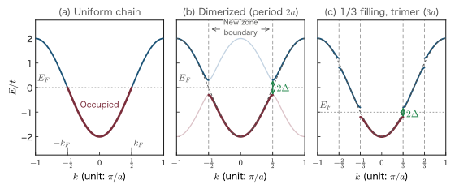
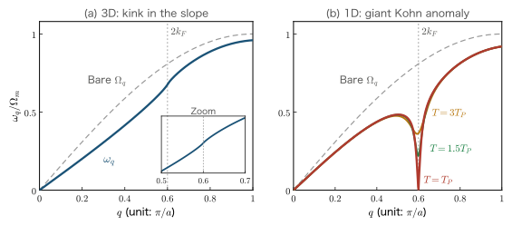
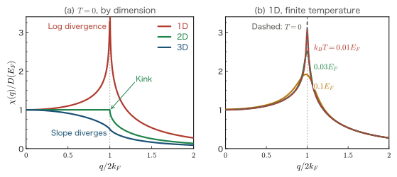
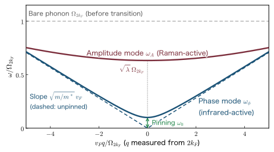
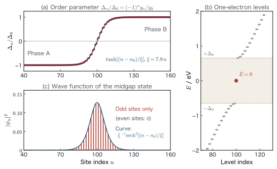
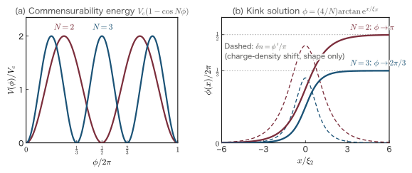

Chapter 35Physics of One-Dimensional Electron Systems — Peierls Instability, Charge-Density Waves, and Solitons
Consider a chain in which the atoms are connected in a single line only. The carbon chain of polyacetylene, a relative of plastics; the chain in a platinum-complex crystal in which only the platinum atoms line up in a row; the columns in which flat organic molecules are stacked like piled-up coins—such “one-dimensional metals” really exist. If we apply the band theory learned in Chapters 15–18 as it stands, these chains should be metals, because the electrons fill the band only part of the way. In experiments, however, many of these chains turn into insulators (semiconductors) by themselves when cooled. The atoms shift their positions slightly and change the period by a factor of two (in general to $\pi/k_F$, where $k_F$ is the wavenumber of the electrons at the Fermi level described below, called the Fermi wavenumber), and open a gap (a band of energies into which electrons cannot enter) exactly at the Fermi level (the highest energy reached when electrons are filled in from the lowest-energy states upward). This is called the Peierls instability. This phenomenon, which does not usually occur in three-dimensional metals, always occurs in one dimension, however weak the coupling between the electrons and the lattice.
In the chapters up to Part IV, the band gap was something the crystal “had from the start.” The gap we meet in this chapter is different. It is a gap in which the electrons and the lattice determine each other (self-consistently): the electrons distort the lattice in order to lower their own energy, and that distortion opens a gap for the electrons. On the distorted lattice rides a wave of electron density—a charge-density wave (CDW). This wave is an “electron crystal” distinct from the lattice, and when an electric field is applied it slides through the lattice and carries current. In polyacetylene, a particle called a soliton is created at the boundary between two ways of distorting, and it shows the strange property of “having charge but no spin.” The work of Hideki Shirakawa, Heeger, and MacDiarmid, who found that polyacetylene conducts electricity like a metal when iodine or the like is added (the 2000 Nobel Prize in Chemistry), became the starting point of the conducting polymers that led to organic electroluminescence and organic transistors. In semiconductor devices too, when the path of the electrons becomes sufficiently thin (nanowires and carbon nanotubes), the electrons can move only along the chain direction and come close to the one-dimensional electrons of this chapter.
The organization of this chapter is as follows. In Section 35.1 we introduce a dimerization distortion into a one-dimensional tight-binding band and derive, without omitting intermediate equations, that a gap $2\Delta$ opens, and that, because the electronic energy gain contains a logarithm, $-\Delta^2\ln(W/\Delta)$, it always beats the elastic energy $\propto\Delta^2$. In Section 35.2 we look at real materials (polyacetylene, KCP, TTF–TCNQ, $\mathrm{NbSe_3}$, Bechgaard salts, and spin-Peierls systems). Section 35.3 deals with the CDW itself, and we learn Fröhlich's idea that a sliding CDW carries current, together with impurity pinning, the threshold field, and narrow-band noise. Sections 35.4 and 35.5 dig into the “roots” of this instability: the Kohn anomaly, in which the phonon frequency dips at $2k_F$, and the Lindhard function, which measures the nesting of the Fermi surface; we actually calculate it and compare the results in one, two, and three dimensions. Section 35.6 looks at the collective motion of the CDW (the amplitude mode and the phase mode) and at the analogies with superconductors and ferroelectrics. In the last section, Section 35.7, we solve the SSH model (the Su–Schrieffer–Heeger model, a model that treats the electrons and the lattice distortion of polyacetylene together) numerically, see the soliton and the midgap level with our own eyes, and go on to the topics of fractional charge and topology.
In Chapter 36 we treat the localization of electrons by disorder. This chapter focuses on one dimension without disorder. The tools we use are already at hand: the phonons of Chapter 13, the $2\times2$ secular equation of Section 16.5 of Chapter 16, the tight-binding approximation and the Fermi surface of Section 18.4 of Chapter 18, the soft mode and Landau's theory of Chapter 19, and the antiferromagnetism of Chapter 20. This chapter brings all of them into play.
- Count the Fermi wavenumber $k_F=\pi\nu/2a$, the Fermi velocity, and the density of states of the one-dimensional tight-binding band $E(k)=-2t\cos ka$, and derive from the $2\times2$ secular equation that a distortion of period $\pi/k_F$ opens a gap $2\Delta$ at $k=\pm k_F$
- The derivation of the logarithm in the electronic energy gain $-N(0)\Delta^2\left[\ln(2\Lambda/\Delta)+\tfrac12\right]$, and Peierls' theorem (instability for any coupling, however weak)
- The BCS-type gap equation $\Delta=2\Lambda\,\ee^{-1/\lambda}$, the mean-field transition temperature $k_BT_P=1.13\Lambda\,\ee^{-1/\lambda}$, and $2\Delta(0)/k_BT_P=3.53$
- What happens in polyacetylene, KCP, TTF–TCNQ, $\mathrm{NbSe_3}$, blue bronze, Bechgaard salts, and $\mathrm{CuGeO_3}$, and the distinction between commensurate and incommensurate
- The charge-density wave $\rho(x)=\rho_0+\rho_1\cos(2k_Fx+\phi)$, Fröhlich conduction, pinning, the washboard model and the threshold field, narrow-band noise $j_{\mathrm{CDW}}=n_ce\lambda_{\mathrm{CDW}}f$, and Shapiro steps
- The phonon self-energy $\omega_q^2=\Omega_q^2[1-(2g^2/\hbar\Omega_q)\chi(q)]$ and the Kohn anomaly, and softening in one dimension, $\omega_{2k_F}^2\propto T-T_P$
- Calculate the Lindhard function analytically in one, two, and three dimensions, and understand nesting, imperfect nesting, and the relation to the SDW
- The amplitude mode $\omega_A=\sqrt\lambda\,\Omega_{2k_F}$ and the phase mode $\omega_\phi=\sqrt{m/m^*}\,v_Fq$, the Lee–Rice–Anderson effective mass $m^*/m\sim10^2$–$10^3$, and the giant dielectric constant
- Solitons in the SSH model: $\Delta(x)=\Delta_0\tanh(x/\xi)$, the midgap level, the reversed relation between charge and spin, fractional charge, the sine-Gordon kink, and the Zak phase
35.1 The Conduction Band of a One-Dimensional Electron System and the Peierls Instability
35.1.1 One-dimensional metals really exist
In some crystals, atoms or molecules are packed densely along one direction only, and electrons move easily only along that direction. For example, in the platinum complex $\mathrm{K_2Pt(CN)_4Br_{0.3}\cdot3H_2O}$ (KCP for short), flat $\mathrm{Pt(CN)_4}$ units are stacked so that the platinum atoms line up in a single column with a spacing of $2.89\,\text{Å}$, and the neighboring columns are almost $10\,\text{Å}$ away. Because the overlap of the electron wave functions (the hopping integral of Chapter 18) decreases rapidly with distance, the electrons effectively move only along that one column. Indeed, the electrical conductivity of such materials differs by more than two orders of magnitude between the direction along the chains and the direction perpendicular to them. Crystals of organic compounds and polymers such as polyacetylene are the same. Such a material is called a quasi-one-dimensional conductor.
Most quasi-one-dimensional conductors conduct electricity like metals at room temperature, but when they are cooled they suddenly stop conducting at a certain temperature. When X-rays are incident on the crystal, diffraction spots of a new periodicity (a superlattice) that was absent in the original lattice appear below that temperature. In other words, the atoms spontaneously change their arrangement, and at the same time the electrons acquire a gap. In this section we use the simplest model to understand why this phenomenon occurs. The key is the fact that “in one dimension the Fermi surface consists of only two points.”
Notation: Symbols used in this chapter
- The lattice constant is $a$, the site (atom) number is $n$, and the displacement of an atom along the chain direction is $u_n$. We write the number of sites as $N_s$, so the length of the chain is $L=N_sa$.
- The hopping integral is $t\gt0$ (what is written $\gamma$ in Section 18.4 of Chapter 18 is written $t$ in this chapter). The bandwidth is $W=4t$. The energy is written $E$, as agreed for this part, and the atomic energy level is taken as the origin (we drop the $\alpha$ of Chapter 18).
- $\nu$ (nu): the number of conduction electrons per site (counted with spins ↑↓ together; when the band is full, $\nu=2$). In this chapter we do not use $\nu$ for the frequency, which is written $f$. It is a different quantity from the filling factor $\nu$ of the Landau levels in Chapters 21 and 24. $k_F$: the Fermi wavenumber; $v_F$: the Fermi velocity.
- $\varepsilon_k$ (epsilon; the same letter as the $\epsilon$ of the permittivity in a different typeface, which we distinguish from it in this chapter): the energy of an electron measured from the Fermi level before the gap opens. The energy after the gap opens is written $E_k$.
- $N(0)$: the density of states at the Fermi level per spin per unit length. The density of states for both spins together is written $D(E_F)=2N(0)$ (the same $D$ as in Chapter 15).
- $\Delta$ (delta): half of the gap (the gap is $2\Delta$). $\delta$ (lowercase delta): the fraction of bond alternation (the hopping alternates as $t(1\pm\delta)$). $\lambda$: the dimensionless electron–lattice coupling constant. $\lambda_{\mathrm{CDW}}$: the wavelength of the charge-density wave.
- $\alpha$: the electron–lattice coupling constant of the SSH model in Sections 35.2 and 35.7 (in units of eV/Å). In this chapter it is not used for the absorption coefficient.
- $m$ is the mass of the electron in the band, fixed by $\hbar k_F=mv_F$ (in the other chapters of this part $m$ is the free-electron mass, but in this chapter it is used for the mass of the one-dimensional band). The free-electron mass is written separately as $m_e=9.109\times10^{-31}\,\mathrm{kg}$, and in numerical examples we approximate the band mass by $m_e$ unless stated otherwise. $m^*$ is the effective mass of the CDW (the Fröhlich mass) from Section 35.3 onward, and is different from the effective mass of a band in Chapter 17.
Notation: Symbols that easily take two meanings
- $N$: from Section 35.1.7 onward, it is used for the commensurability of the CDW (the $N$ in $\lambda_{\mathrm{CDW}}=Na$). It is distinct from the number of sites $N_s$.
- $\Omega$: the angular frequency $\Omega_q$ of the “bare” phonon, with the effects of the electrons removed (from Section 35.4 onward; $\Omega_m$ is its maximum). The $\Omega_{\mathrm{pair}}$ of Section 35.1.6 is a grand-canonical potential and is a different quantity. In the washboard model of Section 35.3.4, the strength with which the electric field pushes the phase is written $F_E$ and its alternating-current part $F_{ac}$ (also distinct from the free energy $F$).
- $\GG$ (bold G): a reciprocal lattice vector. The strength of the electron–lattice coupling from Section 35.4 onward (the change of the electron potential per unit displacement) is written $\mathcal{G}$ (script G) to distinguish it. $g$ is the matrix element of the electron–phonon coupling.
- $\phi$: the phase (an angle) of the CDW. The order parameter of the dimerization in Section 35.7.2 is written $\Delta_n/\Delta_0$ (a real number taking the values $\pm1$) and is distinguished from $\phi$.
- $\epsilon_0$: the permittivity of vacuum (Section 35.6.5). The energy of imperfect nesting in Section 35.5.3 is written $\varepsilon_{\mathrm{w}}$.
- $T$: the temperature. The time for the phase to go once around in Section 35.3.4 is written $T_\phi$.
- $n_0$: the average electron density. The number of electrons in the midgap level in Section 35.7.5 is written $n_{\mathrm{mg}}$. The number of electrons carried by a soliton in Section 35.7.7 is written $\Delta N_e$.
- $b$: in TTF–TCNQ in Section 35.2.3, following the crystallographic convention, the spacing of molecules along the chain direction is written $b$, but the $b$ of Section 35.5.3 is the spacing between chains. The incommensurate shift of Cr in Section 35.5.5 is written $\delta_{\mathrm{Cr}}$ (distinct from the $\delta$ of bond alternation).
35.1.2 The one-dimensional tight-binding band and the Fermi wavenumber
Suppose that atoms are lined up in a single column with spacing $a$, and that the orbital of each atom overlaps only with those of its nearest neighbors. Restating the result of the tight-binding approximation in Section 18.4 of Chapter 18, the band is
(we set $\alpha\to0$ and $\gamma\to t$ in $\epsilon(k)=-\alpha-2\gamma\cos ka$ of Chapter 18; in this part the energy is written $E$). It takes its lowest value $-2t$ at $k=0$ and its highest value $+2t$ at the zone boundary $k=\pm\pi/a$, so the bandwidth is $W=4t$.
Derivation: The Fermi wavenumber $k_F=\pi\nu/2a$
Step 1: The number of $k$ values. If we impose periodic boundary conditions on a chain of length $L=N_sa$, the values of $k$ are spaced by $2\pi/L$ (as in Section 15.2 of Chapter 15). The width of the Brillouin zone is $2\pi/a$, so the number of $k$ values in it is
$$ \frac{2\pi/a}{2\pi/L}=\frac{L}{a}=N_s $$that is, the same as the number of sites. Each $k$ can accommodate two electrons, with spin ↑ and ↓, so the capacity of the whole band is $2N_s$.
Step 2: How the states are filled. In Eq. \eqref{eq:35-tb} the energy is higher the larger $\abs{k}$ is. At absolute zero the states are filled from the bottom, so the occupied region is $-k_F\le k\le k_F$. The number of $k$ values in this interval is
$$ \frac{2k_F}{2\pi/L}=\frac{k_FL}{\pi} $$Step 3: Equate with the number of electrons. If there are $\nu$ electrons per site, the total is $\nu N_s=\nu L/a$. Multiplying by the spin factor 2 and equating, we obtain
$$ 2\times\frac{k_FL}{\pi}=\frac{\nu L}{a} \qquad\Longrightarrow\qquad k_F=\frac{\pi\nu}{2a} $$∎ With one electron per site ($\nu=1$, half filling), $k_F=\pi/2a$; that is, the states are filled exactly halfway across the Brillouin zone. In this case $E_F=-2t\cos(\pi/2)=0$, and the Fermi level lies at the center of the band.
The Fermi surface in three dimensions was a spherical surface (Chapter 15). In one dimension the “Fermi surface” is merely two points, $k=+k_F$ and $k=-k_F$ ($\pm k_F$ in Figure 35.2(a)). This fact is the starting point of everything in this chapter.
Derivation: The Fermi velocity $v_F$ and the density of states $N(0)$
Fermi velocity. The group velocity is $v=\hbar^{-1}\dd E/\dd k$ (Section 17.2 of Chapter 17). Differentiating Eq. \eqref{eq:35-tb} gives $\dd E/\dd k=2ta\sin ka$, so
$$ v_F=\frac{1}{\hbar}\frac{\dd E}{\dd k}\bigg|_{k=k_F}=\frac{2ta}{\hbar}\sin k_Fa \qquad(\text{for half filling }v_F=2ta/\hbar) $$Density of states. For one spin, we count the states whose energy lies between $E$ and $E+\dd E$. There are contributions from two places, the positive side and the negative side of $k$, and each has $L\abs{\dd k}/2\pi$ states within a width $\abs{\dd k}$ of $k$, so
$$ \dd N_\sigma=2\times\frac{L}{2\pi}\abs{\dd k}=\frac{L}{\pi}\frac{\dd E}{\abs{\dd E/\dd k}}=\frac{L}{\pi\hbar\abs{v}}\,\dd E $$Converting to a quantity per unit length (dividing by $L$) and evaluating at $E=E_F$, we obtain
For half filling $\hbar v_F=2ta$, so $D(E_F)=1/(\pi ta)$. This agrees with the density of states of the one-dimensional chain derived in Chapter 18 (in the notation of Chapter 18, $g(\epsilon)=\dfrac{2N_s}{\pi}\dfrac{1}{\sqrt{4\gamma^2-\epsilon^2}}$, where the number of sites has been rewritten in this chapter's symbol $N_s$) evaluated at $\epsilon=0$ and divided by $L=N_sa$, namely $\dfrac{2N_s}{\pi\cdot2\gamma\cdot N_sa}=\dfrac{1}{\pi\gamma a}$.
Example 35.1: The Fermi wavenumber and Fermi velocity of the π electrons in polyacetylene
Each carbon atom of polyacetylene $\mathrm{(CH)}_x$ contributes one π electron, and these can be regarded as forming a one-dimensional band with a carbon spacing projected on the chain direction of $a=1.22\,\text{Å}$ and a hopping integral $t=2.5\,\mathrm{eV}$. (1) Find $\nu$ and $k_F$. (2) Find $v_F$ and compare it with the Fermi velocity of copper, $1.57\times10^6\,\mathrm{m/s}$. (3) Find the density of states for both spins per site, $D(E_F)a$.
Solution. (1) There is one π electron per carbon atom, so $\nu=1$ (half filling).
$$ k_F=\frac{\pi}{2a}=\frac{3.1416}{2\times1.22\times10^{-10}\,\mathrm{m}}=1.29\times10^{10}\,\mathrm{m^{-1}} $$(2) Using $\hbar=6.582\times10^{-16}\,\mathrm{eV\,s}$, we obtain
$$ v_F=\frac{2ta}{\hbar}=\frac{2\times2.5\,\mathrm{eV}\times1.22\times10^{-10}\,\mathrm{m}}{6.582\times10^{-16}\,\mathrm{eV\,s}}=9.3\times10^{5}\,\mathrm{m/s} $$This is about 60% of that of copper, the same order of magnitude as in an ordinary metal. It corresponds to $3\times10^{-3}$ times the speed of light.
(3) Substituting $\hbar v_F=2ta$ into Eq. \eqref{eq:35-dos} gives
$$ D(E_F)a=\frac{2a}{\pi\hbar v_F}=\frac{2a}{\pi\cdot2ta}=\frac{1}{\pi t}=\frac{1}{3.1416\times2.5\,\mathrm{eV}}=0.127\,\mathrm{eV^{-1}} $$∎ Even in a one-dimensional chain, the electrons on the chain move as fast as electrons in a metal. The only difference is the shape of the Fermi surface (two points). We will now see how large a difference this “shape” makes.
35.1.3 Distorting the lattice opens a gap
In a half-filled chain, let us shift every other atom slightly in opposite directions (Figure 35.1). If the $n$th atom is displaced by $u_n=(-1)^nu_0$, the spacings between neighboring atoms alternate between $a-2u_0$ and $a+2u_0$. In the shorter bond the overlap of the wave functions increases and the hopping becomes stronger ($t(1+\delta)$), while in the longer bond it becomes weaker ($t(1-\delta)$). This is called dimerization or bond alternation. Since two atoms form one unit, the period doubles from $a$ to $2a$.
When the period becomes $2a$, the reciprocal lattice vector becomes $2\pi/2a=\pi/a$, and the Brillouin zone boundary moves to $k=\pm\pi/2a$. This is exactly the same place as the half-filling Fermi wavenumber $k_F=\pi/2a$. As we learned in Chapter 16, a periodic potential opens a gap at the Brillouin zone boundary. A gap then opens right at the Fermi level, and every occupied state below it is lowered in energy. This is the heart of the Peierls instability. First, let us check how the gap opens by means of equations.
In general, suppose that a periodic potential $V(x)=2\Delta\cos(Qx+\phi)$ of wavenumber $Q$ acts on the electron. Rewriting it with Euler's formula gives $V(x)=\Delta\ee^{i\phi}\ee^{iQx}+\Delta\ee^{-i\phi}\ee^{-iQx}$, so the Fourier components are $V_Q=\Delta\ee^{i\phi}$ and $V_{-Q}=\Delta\ee^{-i\phi}$. Restating the $2\times2$ secular equation obtained by truncating the central equation of Section 16.5 of Chapter 16 to the two components $C(k)$ and $C(k-Q)$ (read $G$ of Chapter 16 as $Q$ and $U$ as $V_{\pm Q}$), we have
Here $E^0_k$ is the energy in the absence of the potential.
Derivation: A gap $2\Delta$ opens at the Fermi point, giving $E_k=\pm\sqrt{\varepsilon_k^2+\Delta^2}$
Step 1: Determinant. For a nontrivial solution to exist, the determinant must vanish (Section A.6 of Appendix A).
$$ (E^0_k-E)(E^0_{k-Q}-E)-\Delta\ee^{i\phi}\cdot\Delta\ee^{-i\phi}=0 \quad\Longrightarrow\quad (E^0_k-E)(E^0_{k-Q}-E)-\Delta^2=0 $$The phase $\phi$ has disappeared because $\ee^{i\phi}\ee^{-i\phi}=1$. The energy does not depend on $\phi$. This will become important later.
Step 2: Solve. By the same calculation as in Chapter 16,
$$ E=\frac{E^0_k+E^0_{k-Q}}{2}\pm\sqrt{\left(\frac{E^0_k-E^0_{k-Q}}{2}\right)^2+\Delta^2} $$Step 3: Choose $Q=2k_F$. At $k=k_F$ we have $k-Q=-k_F$, and since $E^0(k_F)=E^0(-k_F)=E_F$, the first term under the square root vanishes and $E=E_F\pm\Delta$. A gap of width exactly $2\Delta$ opens at the Fermi point.
Step 4: Linearize near the Fermi point. Let $k=k_F+p$ ($\abs{p}\ll k_F$), and write the energy measured from the Fermi level up to the first order of the Taylor expansion:
$$ \varepsilon_k\equiv E^0_k-E_F\simeq\hbar v_Fp $$The partner state $k-Q=-k_F+p$ lies near the left Fermi point, where $\abs{k-Q}=k_F-p$ (the energy is determined by $\abs{k}$ alone), so
$$ E^0_{k-Q}-E_F\simeq\hbar v_F\bigl[(k_F-p)-k_F\bigr]=-\hbar v_Fp=-\varepsilon_k $$Substituting this into Step 2 gives $\dfrac{E^0_k+E^0_{k-Q}}{2}=E_F$ and $\dfrac{E^0_k-E^0_{k-Q}}{2}=\varepsilon_k$, so the energy measured from the Fermi level, $E_k\equiv E-E_F$, is
$$ E_k=\pm\sqrt{\varepsilon_k^2+\Delta^2} $$∎ The lower branch satisfies $-\sqrt{\varepsilon_k^2+\Delta^2}\le-\Delta$ and the upper branch $\ge+\Delta$, and there are no states in the interval $2\Delta$ between them. At absolute zero the lower branch is completely occupied.
In fact, this $E_k=\pm\sqrt{\varepsilon_k^2+\Delta^2}$ has the same form as the expression that appears as the quasiparticle energy in the BCS theory of superconductivity. In a superconductor, electrons at $k$ and $-k$ form the gap, whereas here electrons at $k$ and $k-2k_F$ form the gap. This analogy appears repeatedly in this chapter (for the BCS theory, see the following Supplement).
Supplement: BCS theory and quasiparticles
When a metal is cooled, its electrical resistance sometimes drops to exactly zero at a certain temperature. This is called superconductivity. The mechanism was explained in 1957 by the theory of Bardeen, Cooper, and Schrieffer, which is called the BCS theory after the initials of the three. In the BCS theory, electrons near the Fermi level form pairs (Cooper pairs) two at a time, mediated by lattice vibrations, and a gap of width $2\Delta$ opens at the Fermi level. An “electron” excited above the gap (more precisely, a mixture of an electron and a hole) is called a quasiparticle, and its energy is $\sqrt{\varepsilon_k^2+\Delta^2}$. In this chapter we use only the fact that “an expression of the same form appears” and do not go into superconductivity itself (see also the companion simulator “Cooper pair”).
For a dimerized tight-binding chain, the bands can be found exactly without linearization. The strong and weak hopping is a change “on the bond” rather than in the potential on an atom, so the only slight difference is that the off-diagonal elements of the $2\times2$ matrix depend on $k$.
Derivation: Bands of the dimerized chain, $E=\pm2t\sqrt{\cos^2ka+\delta^2\sin^2ka}$
Step 1: Hamiltonian. Let $c_n^\dagger$ and $c_n$ be the operators that create and annihilate an electron in the orbital of the $n$th atom (the notation of Section 57.5 of Chapter 57 of the companion volume “Quantum Mechanics”; it suffices to read $c_{n+1}^\dagger c_n$ as “move an electron from $n$ to $n+1$”). With the hopping between $n$ and $n+1$ written as $t_n=t+(-1)^n\delta t$ ($\delta t\equiv t\delta$),
$$ \Ham=-\sum_n t_n\left(c_{n+1}^\dagger c_n+c_n^\dagger c_{n+1}\right) $$Step 2: Rewrite in terms of Bloch waves. Substitute $c_n=N_s^{-1/2}\sum_k\ee^{ikna}c_k$. As in Chapter 18, the uniform part $t$ gives the diagonal element $E^0_k=-2t\cos ka$. Let us examine the alternating part $\delta t(-1)^n$. Since $(-1)^n=\ee^{i\pi n}$,
$$ \sum_n(-1)^nc_{n+1}^\dagger c_n=\frac1{N_s}\sum_{k,k'}\ee^{-ik'a}\Bigl[\sum_n\ee^{i(k-k'+\pi/a)na}\Bigr]c_{k'}^\dagger c_k $$The sum in the square brackets is $N_s$ for $k'=k+\pi/a$ and zero otherwise (the property of the “sum of phases” used many times in Chapters 11 and 13). Therefore
$$ \sum_n(-1)^nc_{n+1}^\dagger c_n=\sum_k\ee^{-i(k+\pi/a)a}c_{k+\pi/a}^\dagger c_k=-\sum_k\ee^{-ika}c_{k+\pi/a}^\dagger c_k $$(We used $\ee^{-i\pi}=-1$.) The Hermitian conjugate term is calculated in the same way. Multiplying $c_n^\dagger=N_s^{-1/2}\sum_{k'}\ee^{-ik'na}c_{k'}^\dagger$ and $c_{n+1}=N_s^{-1/2}\sum_k\ee^{ik(n+1)a}c_k$ and summing over $n$, we obtain
$$ \sum_n(-1)^nc_n^\dagger c_{n+1}=\frac1{N_s}\sum_{k,k'}\ee^{ika}\Bigl[\sum_n\ee^{i(k-k'+\pi/a)na}\Bigr]c_{k'}^\dagger c_k=\sum_k\ee^{ika}c_{k+\pi/a}^\dagger c_k $$(Here, too, the sum in the square brackets leaves only the term with $k'=k+\pi/a$.) Combining the two and multiplying by $-\delta t$,
$$ \Ham_{\delta}=-\delta t\sum_k\left(\ee^{ika}-\ee^{-ika}\right)c_{k+\pi/a}^\dagger c_k=-2i\,\delta t\sum_k\sin ka\;c_{k+\pi/a}^\dagger c_k $$Step 3: The $2\times2$ matrix. The alternating hopping connects only $k$ and $k+\pi/a$. The matrix for this pair is
$$ \begin{pmatrix} -2t\cos ka & 2i\,\delta t\sin ka\\ -2i\,\delta t\sin ka & +2t\cos ka \end{pmatrix} $$(The lower right element is $E^0_{k+\pi/a}=-2t\cos(ka+\pi)=+2t\cos ka$. The off-diagonal elements are complex conjugates of each other.) Since the trace is zero, the eigenvalues are $E=\pm\sqrt{(2t\cos ka)^2+(2\delta t\sin ka)^2}$, that is,
$$ E_\pm(k)=\pm2t\sqrt{\cos^2ka+\delta^2\sin^2ka} $$Step 4: Gap. At $k=\pi/2a$ we have $\cos ka=0$ and $\sin ka=1$, so $E_\pm=\pm2t\delta$. The gap is
$$ 2\Delta=4t\delta\qquad\Longleftrightarrow\qquad\Delta=2t\delta=2\,\delta t $$∎ For a half-filled tight-binding band, $E^0_{k+\pi/a}=-E^0_k$ holds exactly over the entire band. This is the simplest example of the property called “perfect nesting” in Section 35.5.
Supplement: An alternative derivation using a two-atom unit cell
The same result can be obtained without creation and annihilation operators. Group two neighboring atoms (A at an even site and B at an odd site) into one unit cell (of length $2a$), and write the amplitudes of A (site $2j$) and B (site $2j+1$) in the $j$th unit cell in Bloch form: $\psi_{2j}=A\,\ee^{ik\cdot2ja}$, $\psi_{2j+1}=B\,\ee^{ik\cdot2ja}$. The hopping across the bond inside a unit cell (between $2j$ and $2j+1$) is $t_1=t+\delta t=t(1+\delta)$, and that across the bond between unit cells (between $2j+1$ and $2j+2$) is $t_2=t-\delta t=t(1-\delta)$. Writing the tight-binding equation of Chapter 18 (at each site, $E\psi_n=-t_{n-1}\psi_{n-1}-t_n\psi_{n+1}$) for sites $2j$ and $2j+1$, we obtain
$$ EA\,\ee^{ik\cdot2ja}=-t_1B\,\ee^{ik\cdot2ja}-t_2B\,\ee^{ik\cdot2(j-1)a},\qquad EB\,\ee^{ik\cdot2ja}=-t_1A\,\ee^{ik\cdot2ja}-t_2A\,\ee^{ik\cdot2(j+1)a} $$(the left neighbor of site $2j$ is the B atom of the previous unit cell, and the right neighbor of site $2j+1$ is the A atom of the next unit cell). Dividing both sides by $\ee^{ik\cdot2ja}$ gives
$$ \begin{pmatrix}0&-(t_1+t_2\ee^{-2ika})\\-(t_1+t_2\ee^{2ika})&0\end{pmatrix}\begin{pmatrix}A\\B\end{pmatrix}=E\begin{pmatrix}A\\B\end{pmatrix} $$The off-diagonal elements are complex conjugates of each other and the trace is 0, so the eigenvalues are $E=\pm\abs{t_1+t_2\ee^{2ika}}$. Computing the square of the absolute value, we find
$$ \begin{aligned} \abs{t_1+t_2\ee^{2ika}}^2&=t_1^2+t_2^2+2t_1t_2\cos2ka=2t^2\left[(1+\delta^2)+(1-\delta^2)\cos2ka\right]\\ &=4t^2\left(\cos^2ka+\delta^2\sin^2ka\right) \end{aligned} $$(we used $t_1^2+t_2^2=2t^2(1+\delta^2)$, $t_1t_2=t^2(1-\delta^2)$, $1+\cos2ka=2\cos^2ka$, and $1-\cos2ka=2\sin^2ka$). Hence $E=\pm2t\sqrt{\cos^2ka+\delta^2\sin^2ka}$, which agrees with the derivation above. We will use this $2\times2$ matrix once more in Section 35.7.10 (there, $v,w$ correspond to $t_1,t_2$ here).

35.1.4 How much is the electron energy lowered? — Derivation of the logarithm
When the gap opens, all the occupied states are lowered (Figure 35.2(b)). Let us compute the total amount of the lowering. What matters are the states near the Fermi points; states far away are lowered only slightly. We therefore treat only the range of $\Lambda$ (lambda) above and below the Fermi level, using the linearized band. $\Lambda$ is “the width of the energy range in which the linearization is valid,” and is of the order of half the bandwidth, $W/2$. The precise value of $\Lambda$ enters only inside the logarithm of the final result and does not affect the conclusion.
Math Tool: Hyperbolic functions
We define $\sinh s=\dfrac{\ee^{s}-\ee^{-s}}{2}$ and $\cosh s=\dfrac{\ee^{s}+\ee^{-s}}{2}$ (the “hyperbolic sine” and “hyperbolic cosine”). Directly from the definitions,
$$ \cosh^2s-\sinh^2s=\frac{(\ee^s+\ee^{-s})^2-(\ee^s-\ee^{-s})^2}{4}=\frac{4}{4}=1 $$ $$ \frac{\dd}{\dd s}\sinh s=\cosh s,\qquad \frac{\dd}{\dd s}\cosh s=\sinh s $$follow. Likewise, from the definitions,
$$ 2\sinh s\cosh s=\frac{\ee^{2s}-\ee^{-2s}}{2}=\sinh2s,\qquad\cosh^2s=\frac{\ee^{2s}+2+\ee^{-2s}}{4}=\frac{1+\cosh2s}{2} $$hold. For the inverse function, regard $y=\sinh s$ as the quadratic equation $\ee^{2s}-2y\ee^s-1=0$ in $\ee^s$ and solve it; from $\ee^s=y+\sqrt{y^2+1}$ (the positive root) we get $\sinh^{-1}y=\ln\bigl(y+\sqrt{y^2+1}\bigr)$. We will also use $\tanh s=\sinh s/\cosh s$ in Section 35.1.6 and Section 35.7. You may think of these functions as relatives of the trigonometric identity $\cos^2+\sin^2=1$ in which the sign changes in just one place.
Derivation: Energy gain of the electrons $\Delta E_{\mathrm{el}}/L=-N(0)\Delta^2\left[\ln(2\Lambda/\Delta)+\tfrac12\right]$
Step 1: Count the pairs. The potential that opens the gap mixes a state $k$ near the right Fermi point with a state $k-2k_F$ near the left Fermi point, as one pair (derivation in the previous subsection). We may label a pair by the $k$ near the right Fermi point. Since $\varepsilon_k=\hbar v_F(k-k_F)$, we have $\dd k=\dd\varepsilon/\hbar v_F$, and the number of $k$ values in an interval of $k$ of width $\dd k$ is $L\,\dd k/2\pi$. Hence the number of pairs between $\varepsilon$ and $\varepsilon+\dd\varepsilon$ is
$$ \frac{L}{2\pi}\frac{\dd\varepsilon}{\hbar v_F} $$Step 2: Change per pair. Before the gap opens, the energies of the two states of a pair are $+\varepsilon$ and $-\varepsilon$, and the electrons occupy the lower one ($-\abs{\varepsilon}$). After it opens, they occupy the lower level $-\sqrt{\varepsilon^2+\Delta^2}$. The change in energy per pair and per spin is
$$ -\sqrt{\varepsilon^2+\Delta^2}-\left(-\abs{\varepsilon}\right)=\abs{\varepsilon}-\sqrt{\varepsilon^2+\Delta^2}\ \lt\ 0 $$Step 3: Sum up. Multiply by 2 for spin and integrate over $\varepsilon$ from $-\Lambda$ to $\Lambda$. The integrand is unchanged under $\varepsilon\to-\varepsilon$, so the integral can be rewritten as twice the integral from $0$ to $\Lambda$.
$$ \Delta E_{\mathrm{el}}=2\times\frac{L}{2\pi\hbar v_F}\int_{-\Lambda}^{\Lambda}\left(\abs{\varepsilon}-\sqrt{\varepsilon^2+\Delta^2}\right)\dd\varepsilon =\frac{2L}{\pi\hbar v_F}\int_0^{\Lambda}\left(\varepsilon-\sqrt{\varepsilon^2+\Delta^2}\right)\dd\varepsilon $$Using $N(0)=1/\pi\hbar v_F$ from Eq. \eqref{eq:35-dos}, we have $\Delta E_{\mathrm{el}}/L=2N(0)\,(I_1-I_2)$, where $I_1=\int_0^\Lambda\varepsilon\,\dd\varepsilon=\Lambda^2/2$ and $I_2=\int_0^\Lambda\sqrt{\varepsilon^2+\Delta^2}\,\dd\varepsilon$.
Step 4: Compute $I_2$. Substitute $\varepsilon=\Delta\sinh s$ (the “Math Tool” above). Since $\dd\varepsilon=\Delta\cosh s\,\dd s$ and $\sqrt{\varepsilon^2+\Delta^2}=\Delta\sqrt{\sinh^2s+1}=\Delta\cosh s$,
$$ \begin{aligned} I_2&=\Delta^2\int_0^{s_\Lambda}\cosh^2s\,\dd s=\Delta^2\int_0^{s_\Lambda}\frac{1+\cosh2s}{2}\,\dd s\\ &=\frac{\Delta^2}{2}\left[s_\Lambda+\frac{\sinh2s_\Lambda}{2}\right]=\frac{\Delta^2}{2}\left[s_\Lambda+\sinh s_\Lambda\cosh s_\Lambda\right] \end{aligned} $$At the upper limit, $\sinh s_\Lambda=\Lambda/\Delta$, $\cosh s_\Lambda=\sqrt{1+\Lambda^2/\Delta^2}=\sqrt{\Lambda^2+\Delta^2}/\Delta$, and $s_\Lambda=\sinh^{-1}(\Lambda/\Delta)$, so
$$ I_2=\frac12\left[\Delta^2\sinh^{-1}\frac{\Lambda}{\Delta}+\Lambda\sqrt{\Lambda^2+\Delta^2}\right] $$Step 5: Expand for $\Delta\ll\Lambda$. Putting $y=\Lambda/\Delta\gg1$ into $\sinh^{-1}y=\ln\bigl(y+\sqrt{y^2+1}\bigr)$ and using $\sqrt{y^2+1}\simeq y$, we get $\sinh^{-1}(\Lambda/\Delta)\simeq\ln(2\Lambda/\Delta)$. Also,
$$ \Lambda\sqrt{\Lambda^2+\Delta^2}=\Lambda^2\sqrt{1+\Delta^2/\Lambda^2}\simeq\Lambda^2\left(1+\frac{\Delta^2}{2\Lambda^2}\right)=\Lambda^2+\frac{\Delta^2}{2} $$Therefore
$$ I_2\simeq\frac{\Lambda^2}{2}+\frac{\Delta^2}{2}\ln\frac{2\Lambda}{\Delta}+\frac{\Delta^2}{4}, \qquad I_1-I_2\simeq-\frac{\Delta^2}{2}\left[\ln\frac{2\Lambda}{\Delta}+\frac12\right] $$Step 6: Put it together. Multiplying by $2N(0)$,
Why? The logarithm appears only in one dimension
For states far from the Fermi level ($\abs{\varepsilon}\gg\Delta$), $\sqrt{\varepsilon^2+\Delta^2}\simeq\abs{\varepsilon}+\dfrac{\Delta^2}{2\abs{\varepsilon}}$, so the lowering per pair is $-\Delta^2/2\abs{\varepsilon}$. This is exactly the “(matrix element)$^2$/(energy difference)” of second-order perturbation theory: the smaller the energy difference $2\abs{\varepsilon}$ of a pair, the more it is lowered. In one dimension, the pairs near the Fermi points are lined up with a “constant density” $N(0)$, so the sum becomes $\int\dd\varepsilon/\varepsilon$, and what remains is the logarithm $\ln(\Lambda/\Delta)$, cut off at the lower end by $\Delta$.
In three dimensions this does not happen. For a point $\kk$ on the Fermi sphere and $\kk-\qq$, the pairs with a small energy difference lie, whatever $\qq$ we choose, on only a small part (a line or points) of the Fermi surface. Since there are few pairs with a small energy difference, the integral does not diverge, and the lowering is merely proportional to $\Delta^2$. The contest with the elastic energy ($\propto\Delta^2$) is then decided by the magnitudes of the coefficients, and in ordinary metals the elastic energy wins. It is the property of one dimension that “the Fermi surface consists of two points, and can be superposed entirely by the single $Q=2k_F$” that produces the logarithm. We call this nesting in Section 35.5.
Example 35.2: Checking the gain integral numerically
Let $\Delta=1$. For each of $\Lambda=10$ and $\Lambda=100$, compare the exact $I_1-I_2$ from Step 4 with the approximate formula $-\frac{\Delta^2}{2}\left[\ln(2\Lambda/\Delta)+\frac12\right]$.
Solution. $\Lambda=10$: $\sqrt{\Lambda^2+\Delta^2}=\sqrt{101}=10.0499$, $\sinh^{-1}10=\ln(10+10.0499)=2.99822$.
$$ I_1-I_2=\frac{100}{2}-\frac12\left[2.99822+10\times10.0499\right]=50-\frac12\times103.4972=-1.7486 $$The approximate formula gives $-\frac12[\ln20+0.5]=-\frac12[2.9957+0.5]=-1.7479$. The difference is $0.04\%$. For $\Lambda=100$, the exact and approximate values are both $-2.8992$, agreeing to four digits.
∎ Even if $\Lambda$ is increased tenfold, the gain increases by only $\frac12\ln10=1.15$. We see that most of the gain comes from the states very close to the Fermi points.
It is also possible to compute without linearization, using the entire tight-binding band. Integrating the energy of the occupied states of the dimerized chain, $-2t\sqrt{\cos^2ka+\delta^2\sin^2ka}$, over the Brillouin zone, the gain per site is
$$ \frac{\Delta E_{\mathrm{el}}}{N_s}=-\frac{2t}{\pi}\delta^2\left[\ln\frac{4}{\delta}-\frac12\right]+\cdots $$(Exercise 35.1; use the expansion of the complete elliptic integral). Using $\Delta=2t\delta$ and $N(0)a=1/2\pi t$, compare this with Eq. \eqref{eq:35-gain} multiplied by $a$, namely $-\dfrac{\Delta^2}{2\pi t}\left[\ln\dfrac{2\Lambda}{\Delta}+\dfrac12\right]$. Since $\ln(4/\delta)-\frac12=\ln(8t/\Delta)-\frac12=\ln(2W/\Delta)-\frac12$, the two agree if we put $2\Lambda=2W/\ee$, that is, $\Lambda=W/\ee\simeq0.37W$. The estimate in which $\Lambda$ is taken to be “about half the bandwidth” is therefore correct as an order of magnitude.
35.1.5 Peierls' theorem and the BCS-type gap equation
The distortion also costs energy, because displacing the atoms stretches and compresses the springs. The gap is proportional to the amplitude $u_0$ of the distortion ($\Delta=g_1u_0$, where $g_1$ is the strength of the electron–lattice coupling), and the elastic energy is proportional to $u_0^2$ ($\frac12\kappa u_0^2$ per unit length, where $\kappa$ is a quantity corresponding to the spring constant). The elastic energy is therefore proportional to $\Delta^2$. We write the proportionality coefficient in terms of a dimensionless number $\lambda$ as follows.
Definition: The dimensionless electron–lattice coupling constant $\lambda$
$$ \frac{E_{\mathrm{latt}}}{L}=\frac{\kappa}{2g_1^2}\Delta^2\equiv\frac{N(0)}{\lambda}\Delta^2 \qquad\Longleftrightarrow\qquad \lambda=\frac{2N(0)g_1^2}{\kappa} $$$\lambda$ is the ratio of “how much the electrons want to gain from the distortion ($N(0)g_1^2$)” to “how stiff the lattice is ($\kappa$).” The softer the lattice and the stronger the electron–lattice coupling, the larger $\lambda$ is. Typically it is about $0.1$–$1$.
Adding the electronic gain \eqref{eq:35-gain} and the elastic energy, the total energy is
Theorem 35.1: Peierls' theorem
A half-filled one-dimensional metal (in general, one with two Fermi points) is unstable against a distortion of period $\pi/k_F$, however small the electron–lattice coupling $\lambda\gt0$ is.
Proof. In the square brackets of Eq. \eqref{eq:35-etot}, $\ln(2\Lambda/\Delta)\to+\infty$ as $\Delta\to0$. Therefore, however large $1/\lambda$ is, the bracket becomes negative for sufficiently small $\Delta$. Concretely, $\ln(2\Lambda/\Delta)\gt1/\lambda-\frac12$, that is,
$$ \frac{2\Lambda}{\Delta}\gt\ee^{1/\lambda-1/2} \qquad\Longleftrightarrow\qquad \Delta\lt2\Lambda\,\ee^{-1/\lambda}\,\ee^{1/2} $$implies $E_{\mathrm{tot}}\lt0$. The right-hand side becomes smaller as $\lambda$ becomes smaller, but it remains a positive number. Since there is always a state with lower energy than the undistorted state ($E_{\mathrm{tot}}=0$), the undistorted state is not the ground state. ∎
Peierls presented this conclusion in his 1955 textbook “Quantum Theory of Solids” (Fröhlich also discussed one-dimensional electron–lattice systems around the same time). When $\lambda$ is small, the energy gained is exponentially small, but it never becomes 0. Let us find the $\Delta$ at which the energy is lowest.
Derivation: The gap formula $\Delta_0=2\Lambda\,\ee^{-1/\lambda}$ and the condensation energy
Step 1: Differentiate. The derivative of $\Delta^2\ln(2\Lambda/\Delta)=\Delta^2\ln2\Lambda-\Delta^2\ln\Delta$ is $2\Delta\ln2\Lambda-2\Delta\ln\Delta-\Delta=2\Delta\ln(2\Lambda/\Delta)-\Delta$. Hence
$$ \frac{1}{L}\frac{\dd E_{\mathrm{tot}}}{\dd\Delta}=N(0)\left[\frac{2\Delta}{\lambda}-2\Delta\ln\frac{2\Lambda}{\Delta}+\Delta-\Delta\right]=2N(0)\,\Delta\left[\frac1\lambda-\ln\frac{2\Lambda}{\Delta}\right] $$Step 2: Set it to zero. The solution with $\Delta\ne0$ satisfies $\ln(2\Lambda/\Delta_0)=1/\lambda$, that is,
Derivation (continued): Condensation energy
Step 3: The lowest energy. Substituting $\ln(2\Lambda/\Delta_0)=1/\lambda$ into Eq. \eqref{eq:35-etot}, the square bracket becomes $\frac1\lambda-\frac1\lambda-\frac12=-\frac12$.
$$ \frac{E_{\mathrm{tot}}(\Delta_0)}{L}=-\frac12N(0)\,\Delta_0^2 $$∎ This is called the condensation energy. The second derivative is $\dd^2E_{\mathrm{tot}}/\dd\Delta^2\big|_{\Delta_0}=2N(0)L\gt0$, so this is indeed a minimum (we will use this in Section 35.6 when we derive the frequency of the amplitude mode).
Equation \eqref{eq:35-gap} has the same form as the gap formula $\Delta=2\hbar\omega_D\ee^{-1/N(0)V}$ of the BCS theory of superconductivity ($\omega_D$ is the Debye frequency and $V$ is the strength of the attraction between electrons); see the Supplement in Section 35.1.3 and the companion simulator “Cooper pair.” Because $\lambda$ appears in the denominator of the exponent, a small change in $\lambda$ changes $\Delta_0$ greatly. The prefactor depends on how $\Lambda$ is chosen (for the tight-binding chain, $2\Lambda=2W/\ee$), but in practice it suffices to remember $\Delta_0\approx W\ee^{-1/\lambda}$.
$\lambda$ in the SSH model. In the standard model of polyacetylene (the SSH model of Section 35.7), the hopping changes in proportion to the stretching or compression of the bond, $u_{n+1}-u_n$ (proportionality constant $\alpha$), and the spring constant is $K$. For the dimerization $u_n=(-1)^nu_0$ we have $u_{n+1}-u_n=\mp2u_0$, so the hopping is $t\pm2\alpha u_0$, that is, $\delta t=2\alpha u_0$, and $\Delta=2\delta t=4\alpha u_0$. The elastic energy per site is $\frac K2(2u_0)^2=2Ku_0^2=K\Delta^2/8\alpha^2$. Dividing this by $a$ and equating it with $N(0)\Delta^2/\lambda$ ($N(0)=1/2\pi ta$) gives
$$ \frac{K\Delta^2}{8\alpha^2a}=\frac{\Delta^2}{2\pi ta\,\lambda} \qquad\Longrightarrow\qquad \lambda=\frac{8\alpha^2}{2\pi tK}=\frac{4\alpha^2}{\pi tK} $$Inserting $t=2.5\,\mathrm{eV}$, $\alpha=4.1\,\mathrm{eV/Å}$, and $K=21\,\mathrm{eV/Å^2}$, we obtain
$$ \lambda=\frac{4\times(4.1)^2}{3.1416\times2.5\times21}=\frac{67.24}{164.9}=0.41 $$(In the literature, $\lambda_{\mathrm{SSH}}=2\alpha^2/\pi tK\approx0.2$ is more often called the coupling constant; the $\lambda$ of this chapter is twice that.) Then $\Delta_0=(2W/\ee)\ee^{-1/\lambda}=(20/2.718)\,\ee^{-2.45}\,\mathrm{eV}=0.63\,\mathrm{eV}$. In the exact calculation without linearization (Figure 35.3), $\Delta_0=0.65\,\mathrm{eV}$ and $u_0=0.040\,\text{Å}$, and the gap $2\Delta_0=1.3\,\mathrm{eV}$ is close to the measured optical gap (about $1.4$–$1.5\,\mathrm{eV}$).

Example 35.3: Estimating the gap and the transition temperature from the coupling constant
Consider a one-dimensional metal with bandwidth $W=1\,\mathrm{eV}$ (typical of organic conductors) and $\lambda=0.3$. (1) Estimate the gap $2\Delta_0$ using $\Delta_0\approx W\ee^{-1/\lambda}$. (2) Find the mean-field transition temperature $T_P$ from Eq. \eqref{eq:35-ratio} of the next subsection, $2\Delta_0=3.53\,k_BT_P$. (3) By what factor does $\Delta_0$ change when $\lambda$ falls to $0.25$?
Solution. (1) Since $1/\lambda=3.333$ and $\ee^{-3.333}=0.0357$, we have $\Delta_0=0.0357\,\mathrm{eV}=36\,\mathrm{meV}$, and the gap is $2\Delta_0=71\,\mathrm{meV}$.
(2) Using $k_B=8.617\times10^{-5}\,\mathrm{eV/K}$,
$$ T_P=\frac{2\Delta_0}{3.53\,k_B}=\frac{0.0714\,\mathrm{eV}}{3.53\times8.617\times10^{-5}\,\mathrm{eV/K}}=2.3\times10^{2}\,\mathrm{K} $$(3) $\ee^{-1/0.25}/\ee^{-1/0.3}=\ee^{-4+3.333}=\ee^{-0.667}=0.51$. It becomes about half.
∎ A change of only $0.05$ in the coupling constant halves the gap and the transition temperature. Because of the high sensitivity of the exponential function, it is difficult to predict $\lambda$ accurately from first principles, and this is why the $T_P$ of actual materials varies widely, from a few K to several hundred K.
35.1.6 Finite temperature: the transition temperature $T_P$ and $2\Delta/k_BT_P=3.53$
As the temperature is raised, electrons are thermally excited into the states above the gap as well, and the benefit of opening the gap decreases. At a certain temperature $T_P$, $\Delta=0$ finally holds and the chain returns to a metal. This is the Peierls transition. To find $T_P$, we minimize the free energy instead of the energy.
Derivation: The gap equation at finite temperature
Step 1: The free energy of one pair. For one pair and one spin there are two levels, $+E$ and $-E$ ($E=\sqrt{\varepsilon^2+\Delta^2}$), and the chemical potential lies at their center, 0 (because of the electron–hole symmetry). The grand-canonical potential of a single fermion level is $-k_BT\ln(1+\ee^{-E_i/k_BT})$ (Section A.11 of Appendix A), so the sum for the two levels is
$$ \Omega_{\mathrm{pair}}=-k_BT\ln\left[(1+\ee^{E/k_BT})(1+\ee^{-E/k_BT})\right] $$The quantity in the brackets is
$$ 2+\ee^{E/k_BT}+\ee^{-E/k_BT}=2+2\cosh\frac{E}{k_BT}=4\cosh^2\frac{E}{2k_BT} $$so $\Omega_{\mathrm{pair}}=-2k_BT\ln\left[2\cosh\dfrac{E}{2k_BT}\right]$.
Step 2: Differentiate with respect to $\Delta$. From $\dfrac{\dd}{\dd s}\ln\cosh s=\tanh s$ and $\dfrac{\partial E}{\partial\Delta}=\dfrac{\Delta}{E}$,
$$ \frac{\partial\Omega_{\mathrm{pair}}}{\partial\Delta}=-2k_BT\cdot\tanh\frac{E}{2k_BT}\cdot\frac{1}{2k_BT}\cdot\frac{\Delta}{E}=-\frac{\Delta}{E}\tanh\frac{E}{2k_BT} $$Step 3: Minimize the total free energy. For the electronic part, multiply by the spin factor 2 and the number of pairs (Step 1 of Section 35.1.4) and sum, then add the elastic energy $LN(0)\Delta^2/\lambda$. The integral over $\varepsilon$ runs from $-\Lambda$ to $\Lambda$, and since the integrand is an even function, $\int_{-\Lambda}^{\Lambda}=2\int_0^\Lambda$.
$$ \frac{\partial F}{\partial\Delta}=2\cdot\frac{L}{2\pi\hbar v_F}\cdot2\int_0^\Lambda\left(-\frac{\Delta}{E}\tanh\frac{E}{2k_BT}\right)\dd\varepsilon+\frac{2LN(0)\Delta}{\lambda}=0 $$Dividing everything by $\dfrac{2L}{\pi\hbar v_F}=2LN(0)$, we obtain
At $T=0$, $\tanh=1$ and the left-hand side is $\int_0^\Lambda\dd\varepsilon/\sqrt{\varepsilon^2+\Delta^2}=\sinh^{-1}(\Lambda/\Delta)\simeq\ln(2\Lambda/\Delta)$. Equating this with $1/\lambda$ takes us back to Eq. \eqref{eq:35-gap}.
Derivation: The mean-field transition temperature $k_BT_P=1.13\Lambda\,\ee^{-1/\lambda}$
Step 1. At $T=T_P$, $\Delta\to0$, so Eq. \eqref{eq:35-gapeq} becomes $\displaystyle\int_0^\Lambda\frac{\dd\varepsilon}{\varepsilon}\tanh\frac{\varepsilon}{2k_BT_P}=\frac1\lambda$.
Step 2: Nondimensionalization. Let $x=\varepsilon/2k_BT_P$ and $X=\Lambda/2k_BT_P$. Since $\dd\varepsilon/\varepsilon=\dd x/x$, the left-hand side becomes $\int_0^X\dfrac{\tanh x}{x}\dd x$.
Step 3: Integration by parts. Take $\tanh x$ as the part to be differentiated and $1/x$ as the part to be integrated (antiderivative $\ln x$). Using $\dfrac{\dd}{\dd x}\tanh x=\dfrac{1}{\cosh^2x}$,
$$ \int_0^X\frac{\tanh x}{x}\dd x=\Bigl[\tanh x\,\ln x\Bigr]_0^X-\int_0^X\frac{\ln x}{\cosh^2x}\dd x $$At the lower limit $\tanh x\simeq x$, so $x\ln x\to0$. At the upper limit $X\gg1$ and $\tanh X\simeq1$, so we get $\ln X$. Because $1/\cosh^2x$ decays rapidly, the upper limit of the remaining integral may be replaced by $\infty$, and its value is a constant
$$ \int_0^\infty\frac{\ln x}{\cosh^2x}\dd x=-\ln\frac{4\ee^{\gamma_E}}{\pi}=-0.8188 $$($\gamma_E=0.5772$ is Euler's constant). We accept the value of this definite integral as a formula here (a derivation using the partial-fraction expansion of $\tanh$ is given in the “Math Tool” box of Chapter 37). It can be checked by numerical integration (for example, by summing with the trapezoidal rule over finely divided intervals from $x=10^{-6}$ to $30$), and in the Supplement at the end of the derivation in Section 35.5.3 the result of Step 4 is derived by a different method.
Step 4. From the above, the left-hand side is $\ln X+\ln\dfrac{4\ee^{\gamma_E}}{\pi}=\ln\dfrac{4\ee^{\gamma_E}}{\pi}\dfrac{\Lambda}{2k_BT_P}=\ln\dfrac{2\ee^{\gamma_E}\Lambda}{\pi k_BT_P}$. This equals $1/\lambda$, so exponentiating both sides gives
Both $\Lambda$ and $\lambda$ cancel in the ratio, leaving the universal number $3.53$. This is the same number as $2\Delta(0)/k_BT_c=3.53$ of the BCS theory. Solving the gap equation \eqref{eq:35-gapeq} numerically, we find that $\Delta(T)$ stays almost equal to $\Delta_0$ at low temperatures and approaches 0 near $T_P$ as $\Delta(T)\simeq1.74\,\Delta_0\sqrt{1-T/T_P}$ (at $T=0.9T_P$ it is $0.53\Delta_0$).
Caution: A truly one-dimensional system cannot have order at finite temperature
The calculation so far is a mean-field approximation, which ignores the fluctuations of the order parameter $\Delta$. In a strictly one-dimensional system, thermal fluctuations destroy long-range order at finite temperature (a general rule pointed out by Landau and Peierls). The reason a sharp transition is seen in real quasi-one-dimensional conductors is that the weak coupling to neighboring chains assists three-dimensional order. For this reason the actual $T_P$ is lower than the mean-field value $T_P^{\mathrm{MF}}$, and according to Lee, Rice, and Anderson (1973) it is lower than $T_P^{\mathrm{MF}}$ by a factor of a few. Even above $T_P$, a CDW grows over short distances along each chain (fluctuations), and a remnant of the gap (a pseudogap) is seen in the electronic density of states. This is why the measured $2\Delta/k_BT_P$ is often larger than $3.53$.
35.1.7 General band filling — the superperiodicity $\pi/k_F$, commensurate and incommensurate
Even away from half filling, a distortion of wavenumber $Q=2k_F$ opens a gap at the Fermi points (Figure 35.2(c)). The new period that then appears in the lattice, that is, the superperiodicity, is
(where we substituted $k_F=\pi\nu/2a$). At half filling, $\nu=1$, we have $\lambda_{\mathrm{CDW}}=2a$, and $u_n=u_0\cos(\pi n+\phi)=(-1)^nu_0\cos\phi$ is exactly the dimerization of Figure 35.1. $\phi$ is the “phase” of the distortion wave and indicates where the wave is placed relative to the lattice.
Definition: Commensurate and incommensurate
When the superperiodicity $\lambda_{\mathrm{CDW}}$ is a simple rational multiple of the lattice constant $a$ (such as $2a$, $3a$, or $\frac52a$, that is, $a$ multiplied by a fraction whose numerator and denominator are both small integers), the distortion is said to be commensurate with the lattice. When $\lambda_{\mathrm{CDW}}/a$ is irrational (or a rational number with a large denominator), it is called incommensurate. When $2k_F$ is $1/N$ times the reciprocal lattice vector $2\pi/a$ ($\lambda_{\mathrm{CDW}}=Na$), $N$ is called the commensurability (a symbol distinct from the number of sites $N_s$). Half filling corresponds to $N=2$.
In the incommensurate case, shifting $\phi$ amounts to a translation of the distortion wave relative to the lattice, and the relation between the wave and the lattice is “misaligned by the same amount” for every $\phi$, so the energy does not depend on $\phi$ (the same as the disappearance of $\phi$ in Step 1 of Section 35.1.3). In the commensurate case, the energy changes depending on whether the crest of the wave comes right above an atom or at the center of a bond, and $\phi$ is pinned to a particular value. This difference decides in Section 35.3 whether a CDW can carry current, and determines in Section 35.7 the kind of soliton.
Example 35.4: One-third filling and incommensurate superperiodicity
(1) For a chain with $\nu=2/3$ electrons per site (a state in which $1/3$ of the band is filled), what period of distortion does the Peierls transition produce? (2) What about $\nu=0.59$? (3) What about $\nu=1.7$?
Solution. (1) $k_F=\pi\nu/2a=\pi/3a$ and $\lambda_{\mathrm{CDW}}=2a/\nu=3a$. Trimerization, in which three atoms form one group, takes place (Figure 35.2(c)). The commensurability is $N=3$.
(2) $\lambda_{\mathrm{CDW}}=2a/0.59=3.39a$. This is not a simple rational multiple of the lattice constant, so the distortion is incommensurate.
(3) $\lambda_{\mathrm{CDW}}=2a/1.7=1.18a$, which is shorter than the lattice constant. However, atoms exist only at intervals of $a$, so the displacement pattern seen at the atomic positions cannot distinguish the wavenumbers $2k_F$ and $2k_F-2\pi/a$ (the same reason for which we showed $\omega(k+G)=\omega(k)$ in Chapter 13, Section 13.3). Subtracting $2\pi/a$ from $2k_F=1.7\pi/a$ gives $-0.3\pi/a$, so the distortion can be regarded as a wave with this wavenumber, and the apparent superperiodicity is $2\pi/(0.3\pi/a)=6.67a$. Here $2-\nu=0.3$ is the number of holes per site, and considering the Fermi wavenumber of the holes gives the same answer.
∎ The filling is determined by the composition of the material (the amount of charge transfer or doping), and in general it is incommensurate. Case (2) corresponds to TTF–TCNQ in Section 35.2, and case (3) to KCP.
35.2 Examples of the Peierls Transition
The Peierls instability is not merely a matter on paper. Since the 1970s, quasi-one-dimensional materials have been synthesized one after another, and many “one-dimensional metals that become insulators on cooling” have been found. In this section we look at the representative ones. Table 35.1 summarizes the main points. Only established numbers are listed, and quantities such as the gap, whose values vary from material to material, are left blank.
| Material | What forms the chain | Transition temperature | $2k_F$ | Remarks |
|---|---|---|---|---|
| trans-$\mathrm{(CH)}_x$ (polyacetylene) | Carbon π electrons (half-filled) | (remains dimerized up to the decomposition temperature) | $\pi/a$ (commensurate, $N=2$) | Optical gap about $1.4$–$1.5\,\mathrm{eV}$. Becomes metallic on doping |
| KCP ($\mathrm{K_2Pt(CN)_4Br_{0.3}\cdot3H_2O}$) | Pt $d_{z^2}$ orbitals (Pt–Pt $2.89\,\text{Å}$) | Shows no sharp transition | $1.7\pi/c$ (incommensurate) | Giant Kohn anomaly at room temperature (Section 35.4) |
| TTF–TCNQ | Columns of TTF and columns of TCNQ (segregated stacks) | $54\,\mathrm{K}$, $49\,\mathrm{K}$, $38\,\mathrm{K}$ | $0.295\,b^*$ (incommensurate) | The first full-fledged organic metal (1973) |
| $\mathrm{NbSe_3}$ | Chains of trigonal prisms of Nb and Se (three kinds) | $145\,\mathrm{K}$, $59\,\mathrm{K}$ | $0.243\,b^*$ and others (incommensurate) | Remains metallic after the transition. The CDW slides (Section 35.3) |
| o-$\mathrm{TaS_3}$ | Chains of trigonal prisms of Ta and S | About $220\,\mathrm{K}$ | (incommensurate) | Becomes a semiconductor at the transition. The CDW slides |
| $\mathrm{K_{0.3}MoO_3}$ (blue bronze) | Chains of linked $\mathrm{MoO_6}$ octahedra | $183\,\mathrm{K}$ | (incommensurate) | Becomes a semiconductor at the transition. The CDW slides |
| $\mathrm{(TMTSF)_2PF_6}$ (Bechgaard salt) | Stacks of TMTSF molecules | $12\,\mathrm{K}$ (SDW) | — | Under pressure (about $12\,\mathrm{kbar}$) the SDW disappears and superconductivity appears at about $0.9\,\mathrm{K}$ |
| $\mathrm{CuGeO_3}$ | Chains of $\mathrm{Cu^{2+}}$ (spin $1/2$) | $14\,\mathrm{K}$ (spin-Peierls) | — | Spin gap about $2\,\mathrm{meV}$ |
35.2.1 Polyacetylene — the simplest Peierls system
Polyacetylene $\mathrm{(CH)}_x$ is the simplest conjugated polymer, in which CH units are linked in a chain. In the stable trans form the carbons are arranged in a zigzag, and each carbon is bonded by σ bonds to two carbons and one hydrogen. The one remaining valence electron enters the $p_z$ orbital perpendicular to the plane of the chain and overlaps with the $p_z$ of the neighboring carbon to form a π band. With one π electron per carbon, the band is half-filled. The argument of Section 35.1 applies literally: the chain spontaneously dimerizes, and short bonds (about $1.36\,\text{Å}$, double bonds) and long bonds (about $1.44\,\text{Å}$, single bonds) alternate (for the relation to $u_0$ of the model, see the Supplement below). What chemistry calls “conjugated double bonds” is, in the language of physics, nothing other than Peierls dimerization. The optical gap is about $1.4$–$1.5\,\mathrm{eV}$, and pure polyacetylene is a semiconductor. (An explanation from the Hückel method is also given in the companion volume “Quantum Mechanics,” Chapter 40, Section 40.5 and Chapter 41, Section 41.9. In the simulator “From Molecular Orbitals to Bands” you can try out the relation between bond alternation and the gap.)
Supplement: $u_0$ of the model and the measured bond lengths
The $u_0$ of Section 35.1.3 is the displacement of an atom measured along the chain direction. The zigzag bonds are tilted by about $30^\circ$ from this direction, so the difference in bond lengths is not $4u_0$ but $\cos30^\circ\approx0.87$ times that. Converting $u_0\approx0.04\,\text{Å}$ of the SSH model of Section 35.7 into a difference in bond lengths gives about $0.14\,\text{Å}$, which is larger than the measured difference (about $0.08\,\text{Å}$). The SSH model is a simple model whose parameters were chosen to reproduce quantities such as the magnitude of the gap, so the size of the distortion should be regarded as a rough estimate.
There are two possible orientations of the dimerization (Figure 35.4). A and B have the same energy, so the ground state is twofold degenerate. This is what makes polyacetylene a special material. When a region of A and a region of B meet within a single chain, a “disordered portion of the bond alternation” forms at the boundary. This boundary is precisely the soliton treated in Section 35.7.
Research on polyacetylene advanced greatly when Hideki Shirakawa found a method of synthesizing thin films in the 1970s. In 1977, Shirakawa, MacDiarmid, Heeger, et al. showed that adding iodine or $\mathrm{AsF_5}$ to this thin film (doping) raises the conductivity by many orders of magnitude, to metallic levels (about $10^{2}$–$10^{3}\,\mathrm{S/cm}$). For this discovery that a polymer (a plastic) conducts electricity like a metal, the three received the 2000 Nobel Prize in Chemistry. What the doped charge turns into will be seen in Section 35.7.
Application: Conducting polymers
Today, conducting polymers of the same family, such as polythiophene, polyaniline, and PEDOT:PSS, are used in the hole-injection layers of organic electroluminescence displays, in organic transistors, in organic solar cells, as capacitor electrodes, and in antistatic films. That they are light, can be bent, and can be coated from solution to form films is an advantage that inorganic semiconductors lack. What carries the charge in a doped polymer (solitons and polarons) is treated in Section 35.7.
Example 35.5: The gap and bond alternation of polyacetylene
In the SSH model (Section 35.7) the hopping becomes $t_0-\alpha(u_{n+1}-u_n)$, and for the dimerization $u_n=(-1)^nu_0$ the gap is $2\Delta_0=8\alpha u_0$ (Section 35.1.5). Let $\alpha=4.1\,\mathrm{eV/Å}$ and $t_0=2.5\,\mathrm{eV}$. (1) What value of $u_0$ reproduces the measured optical gap of $1.4\,\mathrm{eV}$? (2) What are the hoppings of the long bond and of the short bond? What is the fraction of bond alternation $\delta$? (3) What is the wavelength of light at the gap?
Solution. (1) $u_0=\dfrac{2\Delta_0}{8\alpha}=\dfrac{1.4\,\mathrm{eV}}{8\times4.1\,\mathrm{eV/Å}}=0.043\,\text{Å}$. This is only $3.5\%$ of the carbon spacing along the chain, $a=1.22\,\text{Å}$.
(2) Since $u_{n+1}-u_n=-2(-1)^nu_0$, the hopping is $t_0+2\alpha u_0(-1)^n$, that is,
$$ t_0\pm2\alpha u_0=(2.5\pm2\times4.1\times0.043)\,\mathrm{eV}=2.85\,\mathrm{eV}\ (\text{short bond}),\qquad 2.15\,\mathrm{eV}\ (\text{long bond}) $$The fraction of bond alternation is $\delta=2\alpha u_0/t_0=0.35/2.5=0.14$.
(3) The wavelength of the light is $hc/E=1239.8\,\mathrm{eV\,nm}/1.4\,\mathrm{eV}=886\,\mathrm{nm}$ (near-infrared). (In this chapter $\lambda$ is used for the coupling constant, so no symbol is assigned to the wavelength of light.)
∎ Atoms move by only $0.04\,\text{Å}$, yet the hopping alternates by as much as $14\%$ and a gap as large as $1.4\,\mathrm{eV}$ opens. That a small lattice distortion changes the electronic states so dramatically is the hallmark of Peierls systems. As we saw in Section 35.1.5, minimizing the energy in combination with $K=21\,\mathrm{eV/Å^2}$ naturally gives $u_0=0.040\,\text{Å}$ and $2\Delta_0=1.30\,\mathrm{eV}$.
35.2.2 KCP — Platinum chains and an incommensurate superperiodicity
KCP ($\mathrm{K_2Pt(CN)_4Br_{0.3}\cdot3H_2O}$) is a crystal in which square-planar $\mathrm{Pt(CN)_4}$ units are stacked and the platinum atoms form chains with spacing $c=2.89\,\text{Å}$ (close to the nearest-neighbor distance of metallic platinum, $2.77\,\text{Å}$). The Pt $5d_{z^2}$ orbitals overlap along the chain direction and form a one-dimensional band. In $\mathrm{K_2Pt(CN)_4}$, which contains no bromine, Pt is divalent ($2+$), the $d_{z^2}$ band is full ($\nu=2$), and the material is an insulator. When $0.3$ bromine per Pt is incorporated, that many electrons are removed, the band becomes partially filled with $\nu=1.7$, and metallic conduction arises along the chain direction.
Since $\nu=1.7$ is not half filling, the Peierls distortion has an incommensurate superperiodicity (Example 35.4(3)). In KCP, in the early 1970s, X-ray scattering found diffuse scattering at the position of this wavenumber, and inelastic neutron scattering found a large dip in the phonon at $2k_F$ (a giant Kohn anomaly, Section 35.4); the “Peierls instability of a one-dimensional metal” was thereby confirmed directly by experiment for the first time. Because the coupling between chains is weak in KCP, one-dimensional fluctuations are strong, and CDW order grows gradually toward low temperatures without showing a sharp transition temperature.
Example 35.6: Predicting the superperiodicity of KCP from its composition
(1) From the bromine content $0.3$, find $\nu$ and $2k_F$ (with $c=2.89\,\text{Å}$). (2) What is the period of the distortion, as seen in the atomic positions, in Å? How many times the lattice constant is it?
Solution. (1) Since $0.3$ electron per Pt is removed from the full $d_{z^2}$ band ($\nu=2$), $\nu=1.7$. Then $k_F=\pi\nu/2c=0.85\pi/c$ and $2k_F=1.7\pi/c=0.85\times(2\pi/c)$.
(2) Subtracting the reciprocal lattice vector $2\pi/c$ from $2k_F$ gives $-0.15\times(2\pi/c)$. The displacement pattern at the atomic positions is the same as a wave with this wavenumber, so the period is
$$ \frac{2\pi}{0.15\times2\pi/c}=\frac{c}{0.15}=6.67\,c=6.67\times2.89\,\text{Å}=19.3\,\text{Å} $$∎ Since $6.67$ is not a simple integer, the superperiodicity is incommensurate. That the superperiodicity is determined solely by the composition (the bromine content), independently of the convenience of the lattice, is the best possible evidence that it is a “period chosen by the electrons.”
35.2.3 TTF–TCNQ — The first full-fledged organic metal
TTF (tetrathiafulvalene) is a flat molecule that readily gives up electrons (a donor), and TCNQ (tetracyanoquinodimethane) is a flat molecule that readily accepts electrons (an acceptor). The crystal TTF–TCNQ, made by mixing the two in a 1:1 ratio, was synthesized in 1973; it showed a conductivity of several hundred $\mathrm{S/cm}$ at room temperature, and its conductivity increased further on cooling, so it attracted great attention as an “organic metal.”
In the crystal, TTF molecules stack with TTF and TCNQ molecules with TCNQ like coins, forming separate columns along the $b$ axis (a segregated stack; Figure 35.5). The π orbitals of the molecules overlap along the stacking direction, so each column has a one-dimensional band. Because $0.59$ electron per molecule is transferred from TTF to TCNQ (charge transfer), the band of the TCNQ column contains $0.59$ electron from the bottom and the band of the TTF column contains $0.59$ hole from the top, and the crystal becomes a one-dimensional metal in which both columns are partially filled.
TTF–TCNQ abruptly turns into an insulator at $54\,\mathrm{K}$. This is the Peierls transition of the TCNQ columns; at this point the CDW also becomes ordered in the direction perpendicular to the chains (the direction of the crystal $a$ axis), and the period in that direction is twice the lattice constant. At $49\,\mathrm{K}$ the TTF columns also become ordered, and between $49\,\mathrm{K}$ and $38\,\mathrm{K}$ the period in the direction perpendicular to the chains changes continuously with temperature. At $38\,\mathrm{K}$ that period is locked at four times the lattice constant (the lock-in transition). In diffuse X-ray scattering, one-dimensional scattering is seen at $2k_F=0.295\,b^*$ even above the transition, and scattering also appears at $4k_F=0.59\,b^*$. The $4k_F$ scattering reflects the strong Coulomb repulsion between electrons; it is a topic beyond the simple Peierls picture, and we do not go into it in this chapter.
Example 35.7: $2k_F$ and the superperiodicity of TTF–TCNQ
Let the amount of charge transfer be $0.59$ and the spacing of the stack be $b=3.82\,\text{Å}$. (1) Find $\nu$, $k_F$, and $2k_F$ for the TCNQ columns, and express $2k_F$ in units of $b^*=2\pi/b$. (2) What is the period of the Peierls distortion in Å? (3) What is the period corresponding to $4k_F$?
Solution. (1) There are $0.59$ electrons per TCNQ molecule, so $\nu=0.59$.
$$ k_F=\frac{\pi\nu}{2b}=\frac{0.59\pi}{2\times3.82\times10^{-10}\,\mathrm{m}}=2.43\times10^{9}\,\mathrm{m^{-1}}, \qquad 2k_F=\frac{0.59\pi}{b}=0.295\times\frac{2\pi}{b}=0.295\,b^* $$(2) $\lambda_{\mathrm{CDW}}=2\pi/2k_F=b/0.295=3.39\,b=12.9\,\text{Å}$.
(3) Since $4k_F=0.59\,b^*$, the period is $b/0.59=1.69\,b=6.5\,\text{Å}$. This equals the “length per electron” $b/\nu$.
∎ Conversely, if $2k_F$ is measured by X-ray scattering, the amount of charge transfer $\nu=2\times0.295=0.59$ is obtained. In fact, the value $0.59$ was determined in this way. In the TTF columns as well, with $0.59$ holes the Fermi points are at the same positions, so the two kinds of columns distort at the same wavenumber.
35.2.4 $\mathrm{NbSe_3}$, $\mathrm{TaS_3}$, and blue bronze — the stage for the sliding CDW
Quasi-one-dimensional metals exist among inorganic materials as well. The transition-metal chalcogenide $\mathrm{NbSe_3}$ is a crystal in which units of Se atoms surrounding an Nb atom in a trigonal prism are linked into chains, and it contains three kinds of chains. Two incommensurate CDWs appear in succession at $145\,\mathrm{K}$ and $59\,\mathrm{K}$, but each opens a gap only on part of the Fermi surface, so the crystal remains metallic after the transitions. Orthorhombic $\mathrm{TaS_3}$ (o-$\mathrm{TaS_3}$) forms a CDW at about $220\,\mathrm{K}$, and the molybdenum oxide $\mathrm{K_{0.3}MoO_3}$ (a lustrous blue crystal, hence called blue bronze) forms a CDW at $183\,\mathrm{K}$ and becomes a semiconductor below the transition.
The CDWs in these materials are incommensurate, and, as we will see in Section 35.3, when an electric field is applied they slide through the lattice and carry current. In 1976 it was found in $\mathrm{NbSe_3}$ that the current–voltage characteristic becomes abruptly nonlinear at a small electric field, and the “sliding” of the CDW was observed for the first time. Since then, these three materials have been the standard materials for the dynamics of CDWs.
35.2.5 Bechgaard salts — spin density waves and superconductivity
The salt $\mathrm{(TMTSF)_2PF_6}$ consists of stacks of the flat organic molecule TMTSF (tetramethyltetraselenafulvalene), with one $\mathrm{PF_6^-}$ anion for every two molecules; it is called a Bechgaard salt, after its discoverer. It is also a quasi-one-dimensional metal, but the transition at $12\,\mathrm{K}$ is not a lattice distortion: it is the formation of a spin density wave (SDW), in which the direction of the electron spins changes periodically (Section 35.3.8). The SDW is driven not by the electron–lattice coupling but by the Coulomb repulsion between the electrons.
In 1980, Jérome et al. discovered that when a pressure of about $12\,\mathrm{kbar}$ ($1.2\,\mathrm{GPa}$) is applied to this salt, the SDW disappears and the salt becomes superconducting at about $0.9\,\mathrm{K}$. This was the first organic superconductor. Pressure strengthens the hopping between chains, which increases the waviness of the Fermi surface and worsens the nesting (Section 35.5.3). The SDW is therefore suppressed, and superconductivity appears in its place. That a “one-dimensional instability” and superconductivity lie next to each other also resonates with the fact that Fröhlich proposed in 1954 the sliding of a CDW as a theory of superconductivity (Section 35.3.2).
35.2.6 The spin-Peierls transition — $\mathrm{CuGeO_3}$
The same kind of instability occurs even in insulators, where the electrons cannot move. Consider a chain of spins $1/2$ connected by an antiferromagnetic exchange interaction $J$ (the Heisenberg model of Section 20.8 in Chapter 20). When the lattice dimerizes and the exchange interaction alternates as $J(1\pm\delta)$, the two spins joined by the strong bond form a singlet (a pair with spin 0), and the magnetic energy is lowered. A chain of spins $1/2$ of the XY type can be rewritten exactly, by a technique called the Jordan–Wigner transformation, as a “half-filled chain of spinless fermions,” so the argument of Section 35.1 applies unchanged, and dimerization again occurs however weak the coupling is. The conclusion is the same for the isotropic Heisenberg chain. This is called the spin-Peierls transition.
Below the transition, a finite energy (the spin gap) is needed to break a singlet into a triplet, so the magnetic susceptibility drops rapidly toward 0 as the temperature is lowered. The first inorganic spin-Peierls material to be discovered was $\mathrm{CuGeO_3}$, with $T_{SP}=14\,\mathrm{K}$ (Masashi Hase, Ichiro Terasaki, and Kunimitsu Uchinokura, 1993). The $\mathrm{Cu^{2+}}$ ions (spin $1/2$) form chains, and the spin gap is about $2\,\mathrm{meV}$.
Physical Meaning: toward two-dimensional CDWs
In the layered crystals $2H$-$\mathrm{NbSe_2}$ and $1T$-$\mathrm{TaS_2}$, the CDW forms not in one dimension but within two-dimensional layers. In two dimensions the Fermi surface is a line, and it cannot be superposed as perfectly as in one dimension. Why a CDW forms nevertheless cannot be fully explained by the simple Peierls picture alone; it leads to the idea of “nesting” in Section 35.5 and to the question of its limits.
35.3 Charge-Density Waves
35.3.1 The order parameter and the wave of charge density
Below the Peierls transition, not only does the lattice distort, but the electron density also undulates. This is because the electrons gather in the valleys of the potential $V(x)=2\Delta\cos(2k_Fx+\phi)$ created by the distortion. The wave of electron density formed in this way is called a charge-density wave (CDW) (Figure 35.6(a)).
Here $\rho_0$ is the average charge density and $\rho_1$ is the amplitude of the modulation. (The electron charge is $-e$, so we may take $\rho=-en$. Below, we calculate with the electron number density $n(x)=n_0+n_1\cos(\cdots)$ and find the ratio $\rho_1/\rho_0=n_1/n_0$.) A CDW is specified by two quantities: the amplitude ($\Delta$, and hence $\rho_1$) and the phase $\phi$. The complex number $\Delta\ee^{i\phi}$ that combines them is called the order parameter. This is exactly the off-diagonal element of Eq. \eqref{eq:35-2x2}. $\Delta$ represents the “strength” of the CDW and $\phi$ its “position.” The lattice distortion \eqref{eq:35-superperiod} also accompanies the electron wave with the same wavelength, and moves together with it when $\phi$ changes. However, the positions of the crests of the two are shifted by a quarter wavelength, and the atomic displacement is maximal midway between a crest and a trough of the electron density. As a result, the atoms gather slightly toward the places where the electrons are plentiful, and the crests of the ion density line up with the crests of the electron density (Figure 35.6(a)).
Derivation: Modulation amplitude $n_1/n_0=\Delta_0/(\hbar v_Fk_F\lambda)$
Step 1: The derivative of the energy gives the density. The potential acting on the electrons is $\Ham'=\int V(x)\,\hat n(x)\,\dd x$ with $V=2\Delta\cos(Qx+\phi)$ ($Q=2k_F$). Differentiating the energy with respect to the parameter $\Delta$ gives the expectation value $\langle\partial\Ham'/\partial\Delta\rangle$ (the Hellmann–Feynman theorem, which has the same content as first-order perturbation theory in quantum mechanics).
$$ \frac{\partial E_{\mathrm{el}}}{\partial\Delta}=\int2\cos(Qx+\phi)\,n(x)\,\dd x $$Step 2: Compute the right-hand side. Let the electron density be $n(x)=n_0+n_1\cos(Qx+\phi+\theta)$ ($\theta$ is the offset from the potential). The average of $\cos A\cos(A+\theta)$ over the length $L$ is $\frac12\cos\theta$, and the average of $\cos A$ is zero, so
$$ \int2\cos(Qx+\phi)\left[n_0+n_1\cos(Qx+\phi+\theta)\right]\dd x=L\,n_1\cos\theta $$Step 3: Compute the left-hand side from Eq. \eqref{eq:35-gain}. Using the same differentiation as in Step 1 of Section 35.1.5,
$$ \frac{\partial E_{\mathrm{el}}}{\partial\Delta}=-L\,N(0)\left[2\Delta\ln\frac{2\Lambda}{\Delta}-\Delta+\Delta\right]=-2LN(0)\Delta\ln\frac{2\Lambda}{\Delta} $$Step 4: Evaluate at equilibrium. At equilibrium $\ln(2\Lambda/\Delta_0)=1/\lambda$, so $n_1\cos\theta=-2N(0)\Delta_0/\lambda$. The negative sign means $\theta=\pi$, that is, the peaks of the electron density sit at the valleys of the potential. The amplitude is $n_1=2N(0)\Delta_0/\lambda$.
Step 5: Ratio to the average density. From $n_0=2k_F/\pi$ ($k_F=\pi\nu/2a$, $n_0=\nu/a$) and $N(0)=1/\pi\hbar v_F$,
$$ \frac{\rho_1}{\rho_0}=\frac{n_1}{n_0}=\frac{2\Delta_0}{\pi\hbar v_F\lambda}\cdot\frac{\pi}{2k_F}=\frac{\Delta_0}{\hbar v_Fk_F\lambda} $$∎ Since $\hbar v_Fk_F$ is of the same order of magnitude as the Fermi energy (for free electrons, $\hbar v_Fk_F=\hbar^2k_F^2/m=2E_F$), $\rho_1/\rho_0$ is approximately $\Delta_0/(2E_F\lambda)$. If the gap is sufficiently smaller than the Fermi energy, the density modulation stays at the level of a few percent to about 10%.
The energy gained by forming the CDW is the condensation energy of Section 35.1.5, $-\frac12N(0)\Delta_0^2$ (per unit length). This has exactly the same form as the condensation energy of superconductivity.
Example 35.8: Amplitude and condensation energy of a CDW
(1) Find $\rho_1/\rho_0$ for a CDW with $\Delta_0=50\,\mathrm{meV}$, $v_F=3\times10^5\,\mathrm{m/s}$, $k_F=\pi/(2\times3.0\,\text{Å})$, and $\lambda=0.5$. (2) For polyacetylene ($\Delta_0=0.65\,\mathrm{eV}$, $t=2.5\,\mathrm{eV}$), estimate the condensation energy per site as $-\frac12N(0)\Delta_0^2a$ and compare it with the thermal energy at room temperature, $k_BT=25.9\,\mathrm{meV}$.
Solution. (1) Since $k_F=5.24\times10^{9}\,\mathrm{m^{-1}}$,
$$ \hbar v_Fk_F=(1.055\times10^{-34})(3\times10^5)(5.24\times10^9)\,\mathrm{J}=1.66\times10^{-19}\,\mathrm{J}=1.03\,\mathrm{eV} $$Hence
$$ \frac{\rho_1}{\rho_0}=\frac{0.050}{1.03\times0.5}=0.097 $$(2) Since $N(0)a=a/\pi\hbar v_F=1/2\pi t$, the energy per site is
$$ -\frac12N(0)\Delta_0^2a=-\frac{\Delta_0^2}{4\pi t}=-\frac{(0.65)^2}{4\times3.1416\times2.5}\,\mathrm{eV}=-13.4\,\mathrm{meV} $$(the exact value in Figure 35.3 is $-13.1\,\mathrm{meV}$). This is about half of $k_BT$ at room temperature.
∎ The modulation of the density is only about 10%, and the energy gained is only a dozen or so meV per atom; both are small. Even so, the gap $2\Delta_0=1.3\,\mathrm{eV}$ is large. The condensation energy is small because only the electrons very close to the Fermi points gain anything.
35.3.2 Fröhlich conduction — a sliding CDW carries current
The energy of an incommensurate CDW did not depend on the phase $\phi$ (Section 35.1.3). Then there is no energy cost even if we change $\phi$ slowly with time. Setting $\phi=-\omega t$, we have
$$ \rho(x,t)=\rho_0+\rho_1\cos(2k_Fx-\omega t)=\rho_0+\rho_1\cos\bigl[2k_F(x-v_dt)\bigr],\qquad v_d=\frac{\omega}{2k_F} $$so the CDW slides at speed $v_d$ without changing its shape. In doing so the electrons carry a current. In 1954 Fröhlich suggested that this might be a current without resistance, that is, the mechanism of superconductivity.
Derivation: Current of a sliding CDW, $j_{\mathrm{CDW}}=-en_cv_d$ (Fröhlich conduction)
Step 1: View the system in the comoving coordinate system. To an observer moving with the CDW at speed $v_d$, both the lattice distortion and the potential appear at rest. The ground state of the electrons in this frame is the one found in Section 35.1, that is, the state with a gap opened at $k=\pm k_F$.
Step 2: Return to the laboratory coordinate system. When the coordinate system is moved at speed $v_d$, the momentum of every electron increases by $mv_d$ (Galilean transformation). In terms of the wavenumber, the whole distribution shifts by $q_0=mv_d/\hbar$, and the gap moves to $k=\pm k_F+q_0$. The occupied states run from $-k_F+q_0$ to $k_F+q_0$; since their center is displaced, the electrons as a whole move with average speed $v_d$.
Step 3: Current. All the electrons below the gap take part in this motion. Let $n_c$ be the number density of the participating electrons (the density of condensed electrons; at $T=0$ it is all the electrons of the band). Then the current density is
$$ j_{\mathrm{CDW}}=(-e)\,n_c\,v_d,\qquad v_d=-\frac{\dot\phi}{2k_F} $$Step 4: Check with the continuity equation. Substituting $\rho=\rho_0+\rho_1\cos[2k_F(x-v_dt)]$ into the charge conservation law $\partial\rho/\partial t+\partial j/\partial x=0$, we have $\partial\rho/\partial t=-v_d\,\partial\rho/\partial x$, so $j=v_d\rho+\text{constant}$. That is, the entire charge density is carried along at speed $v_d$.
∎ For a single electron to drop out of the CDW by scattering, it needs an energy exceeding the gap $2\Delta$. As long as $v_d$ is small, no such process occurs, so the current of an ideal (impurity-free) incommensurate CDW does not decay.
In what follows we ignore the direction and write the magnitude as $j_{\mathrm{CDW}}=en_cv_d$. A moving CDW carries not only the electrons but also the wave of the distorted lattice. For this reason the kinetic energy needed to move the CDW is much larger than $\frac12n_cmv_d^2$; when it is written as $\frac12n_cm^*v_d^2$, the Fröhlich mass (the effective mass of the CDW) $m^*$ is as large as $10^2$ to $10^3$ times the electron mass (derived in Section 35.6.4).
35.3.3 Pinning — impurities and commensurability
Fröhlich's dream did not come true. Real CDWs do not move. There are two reasons.
(1) Impurity pinning. Suppose an impurity at position $x_i$ exerts a potential $V_0\delta(x-x_i)$ on the electrons. The energy of its interaction with the CDW is then
$$ \int V_0\delta(x-x_i)\,n_1\cos(2k_Fx+\phi)\,\dd x=V_0n_1\cos(2k_Fx_i+\phi) $$which depends on the phase $\phi$. It is advantageous for the CDW to choose $\phi$ to suit the position of the impurity, so the phase is fixed (pinning), and the CDW does not move under a small force. Since many impurities favor different values of $\phi$, the CDW settles into the most favorable overall configuration while its phase varies gently over long distances.
(2) Pinning by commensurability. Suppose the CDW is commensurate with commensurability $N$ ($2k_F=2\pi/(Na)$, that is, $\lambda_{\mathrm{CDW}}=Na$; $N=2$ is dimerization). Then the wavenumber of the $N$th harmonic of the CDW, $N\cdot2k_F=2\pi/a$, coincides with a reciprocal lattice vector of the lattice. When this component of the periodic potential of the lattice overlaps with the $N$th harmonic of the CDW, a term $\propto-\cos(N\phi)$ is added to the energy. Then $\phi$ is fixed at an integer multiple of $2\pi/N$, and the CDW becomes “meshed” with the lattice (lock-in).
A pinned CDW does not move in a weak electric field, and since the electrons are blocked by the gap, the material behaves like an insulator (semiconductor). However, when the electric field becomes strong enough that the force pushing the CDW exceeds the pinning force, the CDW begins to move. The electric field at this boundary is called the threshold field $\mathcal{E}_T$. In $\mathrm{NbSe_3}$, $\mathcal{E}_T$ varies from a few mV/cm in high-purity samples to about 1 V/cm in samples with many impurities. Above $\mathcal{E}_T$ the current increases sharply, and the current–field relation departs from Ohm's law (nonlinear conduction). This nonlinear conduction, discovered in $\mathrm{NbSe_3}$ in 1976, was the first evidence for the “sliding CDW.”
Example 35.9: Commensurate and incommensurate CDWs — which one slides?
Compare the CDWs of polyacetylene ($N=2$) and $\mathrm{NbSe_3}$ (incommensurate), and discuss (1) the change in energy when the phase $\phi$ is shifted uniformly, (2) how easily they can be made to slide by an electric field, and (3) the main carriers of charge.
Solution. (1) In the incommensurate case, even if the CDW is shifted relative to the lattice, the positional relation between the wave and the lattice does not change on average, so the energy does not depend on $\phi$ (apart from the contribution of impurities). In the commensurate case there is a term $-\cos(N\phi)$, and $\phi$ is strongly fixed at an integer multiple of $2\pi/N$. In polyacetylene $N=2$, and $\phi=0$ and $\pi$ correspond to the two phases (A and B) of Figure 35.4.
(2) The only thing that stops an incommensurate CDW is the weak impurity potential, so it starts to slide at a small $\mathcal{E}_T$. A commensurate CDW is meshed with the lattice itself, so sliding the whole CDW requires a large force to undo the meshing with the lattice as a whole, and in practice it does not slide.
(3) In a system with a commensurate CDW, it is not the CDW as a whole but local disorder in which the phase jumps by $2\pi/N$ (the phase soliton of Section 35.7) that moves and carries the charge.
∎ The difference between “the whole CDW moves” and “a defect in the CDW moves” is similar to the way dislocations move and cause plastic deformation of a crystal.
35.3.4 The washboard model and the threshold field
Let us study the motion of a pinned CDW in an electric field with the simplest model. We regard the CDW as a single rigid body that does not deform, and take its position (displacement) $X$ as the variable. Its relation to the phase is $\phi=2k_FX$ (when $\phi$ increases by $2\pi$, the CDW advances by one wavelength $\lambda_{\mathrm{CDW}}=\pi/k_F$; here we take the direction in which the electric field pushes as positive, and $\phi$ below is taken to increase in that direction).
Derivation: Equation of motion for the phase (washboard model)
Step 1: Equation of motion per electron. Focusing on one electron of the CDW, there are (i) inertia $m^*\ddot X$, (ii) friction $-m^*\gamma\dot X$ ($\gamma$ is the damping rate of the CDW motion), (iii) the restoring force of the pinning, $-\dd U_{\mathrm{pin}}/\dd X$, and (iv) the electric force $e\mathcal{E}$.
$$ m^*\ddot X=-m^*\gamma\dot X-\frac{\dd U_{\mathrm{pin}}}{\dd X}+e\mathcal{E} $$Step 2: Pinning potential. Since $U_{\mathrm{pin}}$ returns to its original value when the CDW is shifted by one wavelength, it is a periodic function with period $\lambda_{\mathrm{CDW}}$. Keeping only its lowest-order Fourier component, and choosing the coefficient so that the angular frequency of small oscillations is $\omega_0$ (the pinning frequency), we obtain
$$ U_{\mathrm{pin}}(X)=\frac{m^*\omega_0^2}{(2k_F)^2}\bigl[1-\cos(2k_FX)\bigr] $$(For small $X$, $1-\cos y\simeq y^2/2$ gives $U_{\mathrm{pin}}\simeq\frac12m^*\omega_0^2X^2$, which is indeed a spring of angular frequency $\omega_0$.) Differentiating gives $\dd U_{\mathrm{pin}}/\dd X=\dfrac{m^*\omega_0^2}{2k_F}\sin(2k_FX)$.
Step 3: Rewrite in terms of the phase. Multiplying both sides of the equation of motion by $2k_F/m^*$ and using $2k_FX=\phi$, we obtain
This has the same form as the equation of a pendulum (or a Josephson junction). Let us write the right-hand side as $F_E\equiv2k_Fe\mathcal{E}/m^*$ (the strength with which the electric field pushes the phase; it has the dimension of frequency squared). If we regard $\phi$ as the “position of a particle,” that particle moves on the potential $-\omega_0^2\cos\phi-F_E\phi$. The form, a cosine undulation with a uniform slope due to the electric field added, resembles a washboard, hence the name washboard model (Figure 35.6(b)(c)).
Threshold field. A stationary solution $\dot\phi=\ddot\phi=0$ is a $\phi$ satisfying $\omega_0^2\sin\phi=F_E$; since $\abs{\sin\phi}\le1$, it exists only when $F_E\le\omega_0^2$. The threshold is therefore
$$ F_E=\omega_0^2 \qquad\Longleftrightarrow\qquad \mathcal{E}_T=\frac{m^*\omega_0^2}{2k_Fe}=\frac{m^*\omega_0^2\lambda_{\mathrm{CDW}}}{2\pi e} $$In an electric field stronger than this, the valleys of the washboard disappear and $\phi$ keeps advancing.
Overdamped solution. In a real CDW the friction is strong, and the inertia term $\ddot\phi$ can often be neglected (overdamped). Then $\gamma\dot\phi=F_E-\omega_0^2\sin\phi$ can be solved exactly by separation of variables.
Math Tool: $\displaystyle\int_0^{2\pi}\frac{\dd\phi}{A-B\sin\phi}=\frac{2\pi}{\sqrt{A^2-B^2}}$ ($A\gt\abs{B}$)
Since the integrand has period $2\pi$, we may shift the range of integration to $-\pi$ to $\pi$. Substituting $s=\tan(\phi/2)$, the double-angle formula gives $\sin\phi=\dfrac{2s}{1+s^2}$ and $\dd\phi=\dfrac{2\,\dd s}{1+s^2}$, and $\phi:-\pi\to\pi$ maps to $s:-\infty\to\infty$.
$$ \int_{-\infty}^{\infty}\frac{2\,\dd s}{A(1+s^2)-2Bs}=\frac2A\int_{-\infty}^{\infty}\frac{\dd s}{\left(s-\dfrac BA\right)^2+\left(1-\dfrac{B^2}{A^2}\right)}=\frac2A\cdot\frac{\pi}{\sqrt{1-B^2/A^2}}=\frac{2\pi}{\sqrt{A^2-B^2}} $$(In the second equality we completed the square in the denominator, and in the third we used $\int_{-\infty}^\infty\dd s/(s^2+c^2)=\pi/c$.)
Derivation: $j_{\mathrm{CDW}}=\sigma_\infty\sqrt{\mathcal{E}^2-\mathcal{E}_T^2}$
Step 1: Time for one period. If $F_E\gt\omega_0^2$, then $\dot\phi\gt0$ always holds, so $\dd t=\gamma\,\dd\phi/(F_E-\omega_0^2\sin\phi)$. The time $T_\phi$ for $\phi$ to advance by $2\pi$ is
$$ T_\phi=\int_0^{2\pi}\frac{\gamma\,\dd\phi}{F_E-\omega_0^2\sin\phi}=\frac{2\pi\gamma}{\sqrt{F_E^2-\omega_0^4}} $$(We set $A=F_E$ and $B=\omega_0^2$ in the integral of the “Math Tool” above.)
Step 2: Average speed. Since $\phi$ advances by $2\pi$ every time $T_\phi$, $\langle\dot\phi\rangle=2\pi/T_\phi=\sqrt{F_E^2-\omega_0^4}/\gamma$. The average speed of the CDW is $v_d=\langle\dot X\rangle=\langle\dot\phi\rangle/2k_F$.
Step 3: Current. $j_{\mathrm{CDW}}=en_cv_d=\dfrac{en_c}{2k_F\gamma}\sqrt{F_E^2-\omega_0^4}$. Substituting $F_E=2k_Fe\mathcal{E}/m^*$ and $\omega_0^2=2k_Fe\mathcal{E}_T/m^*$ gives $\sqrt{F_E^2-\omega_0^4}=\dfrac{2k_Fe}{m^*}\sqrt{\mathcal{E}^2-\mathcal{E}_T^2}$, so
In a strong electric field, $j_{\mathrm{CDW}}\to\sigma_\infty\mathcal{E}$, and the CDW becomes a conductor with a Drude-type conductivity $\sigma_\infty$ (the $ne^2\tau/m$ of Section 15.6 in Chapter 15, with $m\to m^*$ and $1/\tau\to\gamma$). In a real sample, an ordinary current $\sigma_n\mathcal{E}$ due to the electrons that do not take part in the CDW (thermally excited quasiparticles, and electrons on the parts of the Fermi surface where no gap has opened) flows in parallel, so the total current is $j=\sigma_n\mathcal{E}+j_{\mathrm{CDW}}$.
![Numerical solution of the washboard model. (a) Relation between the average phase velocity, which is proportional to the CDW current, and the electric field. It is zero up to the threshold field and above it increases according to √(E²−ET²) (open circles are the numerical solution). When an AC drive is superimposed, flat steps appear where the average velocity equals an integer multiple of the angular frequency of the AC drive. (b) Time dependence of the phase velocity when the electric field is 1.2 times the threshold value. It forms a periodic train of pulses, and the reciprocal of its period is the frequency of the narrow-band noise.](figs/ch35_fig35-7.svg)
Example 35.10: Threshold field and nonlinear conduction
(1) Estimate the threshold field of a CDW with $m^*=10^3m_e$, $\lambda_{\mathrm{CDW}}=1.4\,\mathrm{nm}$, and pinning frequency $\omega_0/2\pi=1\,\mathrm{GHz}$ using the washboard model. (2) For $\mathcal{E}=2\mathcal{E}_T$, what fraction of the “no-threshold” value $\sigma_\infty\mathcal{E}$ is the CDW current? (3) When $\mathcal{E}$ is increased from just above $\mathcal{E}_T$, how does $j_{\mathrm{CDW}}$ rise?
Solution. (1) From $\omega_0=2\pi\times10^9\,\mathrm{s^{-1}}=6.28\times10^9\,\mathrm{s^{-1}}$ and $m^*=10^3m_e=9.11\times10^{-28}\,\mathrm{kg}$,
$$ \mathcal{E}_T=\frac{m^*\omega_0^2\lambda_{\mathrm{CDW}}}{2\pi e}=\frac{(9.11\times10^{-28})(3.95\times10^{19})(1.4\times10^{-9})}{2\pi\times1.602\times10^{-19}}\,\mathrm{V/m}=50\,\mathrm{V/m}=0.5\,\mathrm{V/cm} $$(2) $\sqrt{\mathcal{E}^2-\mathcal{E}_T^2}/\mathcal{E}=\sqrt{1-1/4}=0.866$. That is about 90%.
(3) Let $\mathcal{E}=\mathcal{E}_T(1+\eta)$ ($\eta\ll1$). Then $\sqrt{\mathcal{E}^2-\mathcal{E}_T^2}=\mathcal{E}_T\sqrt{2\eta+\eta^2}\simeq\mathcal{E}_T\sqrt{2\eta}$. Because the rise follows a square root, $\dd j/\dd\mathcal{E}$ becomes infinite just above the threshold.
∎ The value in (1) is of the same order of magnitude as the $\mathcal{E}_T$ measured in $\mathrm{NbSe_3}$ and similar materials. However, the experimental rise is not as sharp as in (3) but is rounded. This is the limit of the simple model that treats the CDW as rigid; a real CDW starts to move while deforming from place to place.
35.3.5 Bardeen's tunneling model
In 1979–80, Bardeen proposed a model that treats the process by which a CDW starts to move not as a classical motion of “climbing over a valley” but as quantum-mechanical tunneling. Pinning creates a small gap in the motion of the CDW, and the electric field makes the CDW cross that gap in the same way as Zener tunneling (Chapter 23, Section 23.4). As a result, the CDW current takes the form $j_{\mathrm{CDW}}\propto(\mathcal{E}-\mathcal{E}_T)\exp(-\mathcal{E}_0/\mathcal{E})$ ($\mathcal{E}_0$ is a characteristic field that determines how easily tunneling occurs, a constant for each material), which reproduced the smooth onset in $\mathrm{NbSe_3}$ well. On the other hand, classical models with many degrees of freedom (in which the CDW moves while deforming) can also explain most of the experiments, and which picture is correct was debated for a long time. It is now believed that most phenomena can be understood by the classical collective-motion model in which the CDW moves while deforming.
35.3.6 Narrow-band noise and Shapiro steps
Superimposed on the current while the CDW is sliding is an oscillation at a specific frequency (Figure 35.7(b)). This oscillation, observed in $\mathrm{NbSe_3}$ by Fleming and Grimes in 1979, is called narrow-band noise. Because the arrangement of the pinning centers returns to its original state each time the CDW advances by one wavelength, the current oscillates with the time the CDW takes to advance one wavelength as its period. Its fundamental frequency is
This equation does not depend on the details of the washboard model (we used only the fact that “the arrangement returns to its original state every wavelength”). Measuring the frequency $f$ gives the CDW speed $v_d$ directly, and the ratio of current to frequency, $j_{\mathrm{CDW}}/f=en_c\lambda_{\mathrm{CDW}}$, determines the density $n_c$ of condensed electrons.
Example 35.11: Reading the CDW speed from the narrow-band noise
A CDW current $I_{\mathrm{CDW}}=10\,\mu\mathrm{A}$ flows in a thin $\mathrm{NbSe_3}$ crystal of cross-sectional area $A=5\,\mu\mathrm{m^2}$. Take $n_c=1\times10^{21}\,\mathrm{cm^{-3}}$ and $\lambda_{\mathrm{CDW}}=1.4\,\mathrm{nm}$. Find (1) the frequency of the narrow-band noise, (2) the speed of the CDW, and (3) $j_{\mathrm{CDW}}/f$ in units of $\mathrm{A/(cm^2\,MHz)}$.
Solution. (1) The current density is
$$ j_{\mathrm{CDW}}=\frac{I_{\mathrm{CDW}}}{A}=\frac{10\times10^{-6}\,\mathrm{A}}{5\times10^{-12}\,\mathrm{m^2}}=2.0\times10^6\,\mathrm{A/m^2} $$Converting to $n_c=1\times10^{27}\,\mathrm{m^{-3}}$, we obtain
$$ f=\frac{j_{\mathrm{CDW}}}{en_c\lambda_{\mathrm{CDW}}}=\frac{2.0\times10^6}{(1.602\times10^{-19})(1\times10^{27})(1.4\times10^{-9})}\,\mathrm{Hz}=8.9\,\mathrm{MHz} $$(2) The speed of the CDW is
$$ v_d=\lambda_{\mathrm{CDW}}f=1.4\times10^{-9}\,\mathrm{m}\times8.9\times10^6\,\mathrm{s^{-1}}=1.25\times10^{-2}\,\mathrm{m/s}=1.25\,\mathrm{cm/s} $$(3) $en_c\lambda_{\mathrm{CDW}}=0.224\,\mathrm{A/(m^2\,Hz)}$. Since $1\,\mathrm{m^2}=10^4\,\mathrm{cm^2}$ and $1\,\mathrm{MHz}=10^6\,\mathrm{Hz}$, we get $0.224\times10^{-4}\times10^{6}=22\,\mathrm{A/(cm^2\,MHz)}$.
∎ The electron “crystal” is sliding slowly at about 1 cm per second. The speed is only one ten-millionth of the Fermi velocity of the electrons ($10^5\,\mathrm{m/s}$), but because all the electrons move together, the current is large.
Shapiro steps. When an AC field $\mathcal{E}_{ac}\cos2\pi f_{ex}t$ is superimposed on a DC electric field, the internal oscillation of the CDW (frequency $f$) is pulled into step with the external oscillation, and $f$ stops changing even when the DC field is varied over a certain range, while the relation $f=(p/q)f_{ex}$ ($p,q$ integers) is maintained (the green steps in Figure 35.7(a)). This phenomenon, in which flat steps appear in the current–voltage characteristic, works by the same mechanism as the Shapiro step known from superconducting Josephson junctions, and is also called mode locking. From the position of a step, $n_c$ can again be determined using Eq. \eqref{eq:35-noise}. Note that in the simple model of Figure 35.7 (non-deformable CDW, overdamped, sinusoidal pinning), the steps appear only at the integer multiples $f=nf_{ex}$. In real CDWs, fractional steps are also observed, and explaining them requires the inertia and the CDW deformation that this model omitted, as well as pinning that deviates from a sinusoid.
35.3.7 How to observe a CDW
X-ray and neutron satellite reflections. When the lattice is distorted with period $\lambda_{\mathrm{CDW}}$, weak reflections (satellite reflections) appear around the Bragg reflection $\GG$ of the original lattice, at the wave vectors $\GG\pm2k_F$. Their intensity is proportional to the square of the distortion amplitude, $u_0^2\propto\Delta^2$, so the temperature dependence of the order parameter can be followed directly. Even above the transition, diffuse scattering is seen at the $2k_F$ position owing to one-dimensional fluctuations (KCP, TTF–TCNQ). It was by this method that a CDW was first “seen.”
STM (scanning tunneling microscope). The STM images the electron density at the surface with atomic resolution. On the surfaces of $\mathrm{NbSe_2}$, $\mathrm{TaS_2}$, $\mathrm{NbSe_3}$, and similar materials, light and dark bands with the CDW superperiodicity are seen superimposed on the arrangement of the atoms. This is the most direct way to see a CDW in real space.
Photoelectron spectroscopy (ARPES). When the electronic states near $k_F$ are examined by ARPES (Chapter 18, Section 18.8), the opening of the gap below the transition can be seen directly.
35.3.8 Comparison with the spin density wave (SDW)
Electrons have spin. If the ↑-spin electrons and the ↓-spin electrons modulate their densities in opposite phases, the charge density remains uniform and only the spin density undulates.
$$ n_\uparrow(x)=\frac{n_0}{2}+\frac{n_1}{2}\cos(Qx+\phi),\qquad n_\downarrow(x)=\frac{n_0}{2}-\frac{n_1}{2}\cos(Qx+\phi) $$ $$ S_z(x)=\frac{n_\uparrow-n_\downarrow}{2}=\frac{n_1}{2}\cos(Qx+\phi) $$This is called a spin density wave (SDW). The driving force that creates an SDW is not the electron–lattice coupling but the Coulomb repulsion that makes ↑ and ↓ electrons avoid coming to the same place (Hubbard's $U$; the companion volume “Quantum Mechanics,” Chapter 59, Section 59.6). A commensurate SDW with $Q=\pi/a$ is nothing but the two-sublattice antiferromagnetism of Chapter 20, Section 20.9. Cr is a representative metal with an incommensurate SDW (Section 35.5.5). The differences between a CDW and an SDW are summarized in Table 35.2.
| CDW | SDW | |
|---|---|---|
| What undulates | Charge density (↑ and ↓ in the same phase) | Spin density (↑ and ↓ in opposite phases) |
| Driving force | Electron–lattice coupling ($\lambda$) | Coulomb repulsion between electrons ($U$) |
| Lattice distortion | Distorts with wavenumber $2k_F$ | In principle no distortion (a weak distortion at $4k_F$ from a second-order effect) |
| Observation | X-ray satellite reflections, STM | Neutron magnetic scattering, nuclear magnetic resonance (NMR) |
| Examples | $\mathrm{NbSe_3}$, $\mathrm{K_{0.3}MoO_3}$, $\mathrm{(CH)}_x$ | Cr, $\mathrm{(TMTSF)_2PF_6}$ |
35.4 The Kohn Anomaly
35.4.1 Phonons “see” the Fermi surface
The phonon dispersion $\Omega_q$ that we studied in Chapter 13 appeared to be determined solely by the properties of the springs connecting the ions. In a metal, however, conduction electrons fill the space between the ions. When the ions move, the electrons gather or disperse and screen the ionic charge, which changes the strength of the springs. How effective the screening is depends on the wavenumber $q$, and it changes abruptly at $q=2k_F$ in particular. Screening is carried by electrons that receive momentum $\hbar q$ and move from the inside of the Fermi surface to the outside. If $q\le2k_F$, an electron on the Fermi surface can move to another point on the Fermi surface using almost no energy (the diameter of the Fermi sphere is $2k_F$, so two points separated by $q$ across the sphere can be found on the Fermi surface). For $q\gt2k_F$ there are no such pairs of points, and moving any electron requires a finite energy. This borderline is $q=2k_F$ (Section 35.5.2).
In 1959, Kohn pointed out that, because of this effect, the phonon dispersion curve of a metal should have a “kink” at $q=2k_F$. This is called the Kohn anomaly. The position of the kink in the dispersion curve thus lets us read off the size of the Fermi surface (“an image of the Fermi surface reflected in the vibrational spectrum”; it is one of the methods for investigating the Fermi surface, along with the de Haas–van Alphen effect of Chapter 18 (Section 18.6) and ARPES (Section 18.8)). Indeed, in the early 1960s small kinks were observed in inelastic neutron scattering from Pb and Nb (Chapter 13, Section 13.9). This is what we meant in Chapter 13, Section 13.5.2 when we announced in advance that “in metals a subtle bend appears near $k=2k_F$.” In this section we express this effect in equations and show that in one dimension it is far from a “subtle kink”: it pushes the frequency all the way down to zero.
35.4.2 Renormalization of the phonon frequency
Consider the static distortion $u_n=u\cos(qx_n)$ corresponding to a phonon of wavenumber $q$, and compute its energy including the response of the electrons. Because the electrons move much faster than the phonons, we can regard them as following the distortion of each instant immediately (the adiabatic approximation). The following derivation is long, so on a first reading you may simply accept the final result, Eq. \eqref{eq:35-kohn}, and move on.
Derivation: $\omega_q^2=\Omega_q^2\left[1-\dfrac{2g^2}{\hbar\Omega_q}\chi(q)\right]$
Step 1: Energy of the lattice alone. Let $\Omega_q$ be the “bare” frequency, with the electronic response removed. The potential energy of the mode is $\frac12M\Omega_q^2\sum_nu_n^2$, and since the average of $\cos^2$ is $\frac12$, $\sum_nu_n^2=N_su^2/2$. Per unit length (dividing by $L=N_sa$),
$$ \frac{E_{\mathrm{latt}}}{L}=\frac14\frac{M}{a}\Omega_q^2u^2 $$Step 2: Potential felt by the electrons. The distortion changes the ionic potential, and the electrons feel $V(x)=\mathcal{G}u\cos(qx)$ ($\mathcal{G}$ (script G) is the change in the electron potential per unit displacement; it is a different quantity from the reciprocal lattice vector $\GG$). Since $V=\frac{\mathcal{G}u}{2}(\ee^{iqx}+\ee^{-iqx})$, the matrix element that takes the state $k$ to $k\pm q$ is $\mathcal{G}u/2$.
Step 3: Second-order perturbation of the electron energy. The energy lowering due to the mixing of an occupied state $k$ with $k'$ is $\abs{V_{k'k}}^2/(E_k-E_{k'})$. If $k'$ is already occupied, the transition is blocked by the Pauli principle, but in that case the two terms “$k\to k'$” and “$k'\to k$” cancel as $\frac{\abs V^2}{E_k-E_{k'}}+\frac{\abs V^2}{E_{k'}-E_k}=0$, so we may sum over $k'$ without restriction. With $f_k$ the occupation number (Fermi distribution),
$$ \Delta E_{\mathrm{el}}=\sum_{k,\sigma}f_k\left(\frac{\mathcal{G}u}{2}\right)^2\left[\frac{1}{E_k-E_{k+q}}+\frac{1}{E_k-E_{k-q}}\right] $$Relabeling $k\to k+q$ in the second term gives $\sum f_{k+q}/(E_{k+q}-E_k)$, so combining the two terms,
$$ \Delta E_{\mathrm{el}}=\left(\frac{\mathcal{G}u}{2}\right)^2\sum_{k,\sigma}\frac{f_{k+q}-f_k}{E_{k+q}-E_k}=-\frac{\mathcal{G}^2u^2}{4}\,L\,\chi(q) $$Here we have defined the Lindhard function as follows (the sum includes the spin).
$$ \chi(q)\equiv\frac1L\sum_{k,\sigma}\frac{f(E_k)-f(E_{k+q})}{E_{k+q}-E_k}\ \gt0 $$Step 4: Total. Adding Steps 1 and 3 gives
$$ \frac{E_{\mathrm{latt}}+\Delta E_{\mathrm{el}}}{L}=\frac14\frac{M}{a}u^2\left[\Omega_q^2-\frac{a\mathcal{G}^2}{M}\chi(q)\right]\equiv\frac14\frac{M}{a}u^2\,\omega_q^2 $$That is, the “actual” frequency including the electronic response is $\omega_q^2=\Omega_q^2-\frac{a\mathcal{G}^2}{M}\chi(q)$, and the electrons always make the spring softer.
Step 5: Writing it with the coupling constant. Defining $g^2\equiv\dfrac{a\hbar \mathcal{G}^2}{2M\Omega_q}$, we have $\dfrac{a\mathcal{G}^2}{M}=\dfrac{2g^2\Omega_q}{\hbar}$, and we obtain the following equation. ∎
$g$ is the matrix element of the electron–phonon coupling. $g/\sqrt a=\mathcal{G}\sqrt{\hbar/2M\Omega_q}$ corresponds to the change in the electron energy when an atom moves by the zero-point vibration amplitude $\sqrt{\hbar/2M\Omega_q}$ (because we defined $\chi$ per unit length, $g^2$ contains one factor of length in its dimensions). $\chi(q)$ is the static response of the electron system: it expresses that, for a potential $V_q$, the electron density changes by $\delta n_q=-\chi(q)V_q$. As $q\to0$, $\chi\to D(E_F)$ (the density of states, the same as in Thomas–Fermi screening), and it decreases as $q$ grows (a derivation that includes even the dynamic $\chi^0(\qq,\omega)$ is given in the companion volume “Introduction to Linear Response Theory,” Chapter 10, Section 10.1). The Kohn anomaly is the singularity of $\chi(q)$ at $q=2k_F$ reflected in the phonons. The form of $\chi(q)$ differs greatly with the dimension. We compute $\chi(q)$ in one, two, and three dimensions in Section 35.5, so here we use the results in advance.
35.4.3 In three dimensions the slope has a kink
For free electrons in three dimensions (Eq. \eqref{eq:35-chi3d} in Section 35.5), with $x=q/2k_F$, $\chi(q)=D(E_F)\left[\frac12+\frac{1-x^2}{4x}\ln\left|\frac{1+x}{1-x}\right|\right]$. At $q=2k_F$ ($x=1$), $\chi$ itself is finite, $D(E_F)/2$, but its slope $\dd\chi/\dd q$ diverges logarithmically. As a result, $\omega_q$ of Eq. \eqref{eq:35-kohn} loses its smoothness at $q=2k_F$, and the slope of the dispersion curve changes abruptly (Figure 35.8(a)). The deviation due to the kink (from a smooth curve), however, is slight, and is barely visible only when neutron scattering is measured carefully. Since the Fermi surface of a real metal is not a sphere, the kinks appear at the wave vectors at which $\qq+\GG$ ($\GG$ is a reciprocal lattice vector) connects “two points on the Fermi surface whose tangent planes are parallel to each other” (where the extent of the Fermi surface across it is a maximum or minimum), and the shape of the Fermi surface can be determined from their arrangement.
35.4.4 In one dimension it diverges logarithmically — the giant Kohn anomaly and the soft mode
In one dimension, $\chi(q)$ itself diverges logarithmically at $q=2k_F$ (Eq. \eqref{eq:35-chi1d} in Section 35.5). Only the temperature suppresses the divergence.
Derivation: $\chi(2k_F,T)=N(0)\ln(1.134\Lambda/k_BT)$
Step 1: Extract the singular contribution. For $q=2k_F$, a $k$ near the left Fermi point ($\varepsilon_k=\varepsilon$) is taken to $k+2k_F$ near the right Fermi point ($\varepsilon_{k+2k_F}=-\varepsilon$) (Step 4 of Section 35.1.3). The denominator is $-\varepsilon-\varepsilon=-2\varepsilon$, which approaches 0 as $\varepsilon\to0$. This pair produces the divergence. The contributions of the other pairs are finite, so we neglect them.
Step 2: The numerator. The Fermi distribution $f(\varepsilon)=1/(\ee^{\varepsilon/k_BT}+1)$ satisfies $f(-\varepsilon)=1-f(\varepsilon)$, and $1-2f(\varepsilon)=\tanh(\varepsilon/2k_BT)$. Hence
$$ \frac{f(\varepsilon)-f(-\varepsilon)}{-2\varepsilon}=\frac{2f(\varepsilon)-1}{-2\varepsilon}=\frac{\tanh(\varepsilon/2k_BT)}{2\varepsilon} $$Step 3: Summing up. Multiplying by the spin factor 2 and by the density of states near the left Fermi point, $1/2\pi\hbar v_F$ (per unit length and per unit energy), we obtain
$$ \chi(2k_F,T)=2\cdot\frac{1}{2\pi\hbar v_F}\int_{-\Lambda}^{\Lambda}\frac{\tanh(\varepsilon/2k_BT)}{2\varepsilon}\dd\varepsilon=N(0)\int_0^\Lambda\frac{\tanh(\varepsilon/2k_BT)}{\varepsilon}\dd\varepsilon $$Step 4. The last integral is exactly $\ln(2\ee^{\gamma_E}\Lambda/\pi k_BT)=\ln(1.134\Lambda/k_BT)$, which we computed in Section 35.1.6. ∎
We substitute this into Eq. \eqref{eq:35-kohn}. Writing the coupling constant at $2k_F$ as
$$ \lambda\equiv\frac{2g^2N(0)}{\hbar\Omega_{2k_F}}=\frac{g^2D(E_F)}{\hbar\Omega_{2k_F}} $$(this is the same as the $\lambda$ of Section 35.1.5. For an incommensurate $2k_F$ we have $\Delta=\mathcal{G}u_0/2$ and $E_{\mathrm{latt}}/L=\frac14\frac Ma\Omega^2u_0^2$, so this can be checked by inserting them into the definition of Section 35.1.5. For the half-filled case, see the Supplement below),
Here, for the second equality, from $k_BT_P=1.134\Lambda\ee^{-1/\lambda}$ (Eq. \eqref{eq:35-ratio}) we write $1=\lambda\ln(1.134\Lambda/k_BT_P)$, and
$$ 1-\lambda\ln\frac{1.134\Lambda}{k_BT}=\lambda\left[\ln\frac{1.134\Lambda}{k_BT_P}-\ln\frac{1.134\Lambda}{k_BT}\right]=\lambda\ln\frac{T}{T_P} $$The last step is the expansion $\ln(1+y)\simeq y$ for $T$ close to $T_P$.
This equation says something remarkable. (i) As the temperature is lowered, the frequency of the $2k_F$ phonon keeps decreasing (softening), and (ii) it becomes zero exactly at the $T_P$ of Section 35.1.6. A phonon of zero frequency means a lattice with no restoring force, which stays distorted and does not return. In other words, the Peierls transition is nothing other than “the $2k_F$ phonon freezing into a static distortion.” The calculation of the electronic gap (Section 35.1) and the calculation of the phonons (this section) give the same $T_P$ because they view the same phenomenon from the electronic side and from the lattice side.
Supplement: At half filling (commensurate $2k_F$) the coefficient doubles
In the derivation above, we regarded $2k_F$ as incommensurate ($4k_F$ does not coincide with the reciprocal lattice vector $2\pi/a$) and counted the singular pair in only one way: “$k$ near the left Fermi point → $k+2k_F$ near the right Fermi point.” At half filling ($2k_F=\pi/a$), $k+2k_F$ and $k-2k_F$ are the same state, so the pair that moves from the right Fermi point to the left Fermi point contributes singularly in the same way, and
$$ \chi(\pi/a,T)=2N(0)\ln\frac{1.134\Lambda}{k_BT} $$the coefficient of the logarithm becomes $2N(0)$. At the same time, the two Fourier components, $+\pi/a$ and $-\pi/a$, of the potential produced by the distortion $u_n=u_0\cos(\pi n)=(-1)^nu_0$ connect the same two states, so the matrix element becomes $\mathcal{G}u_0$ (hence $\Delta=\mathcal{G}u_0$), and since $\cos^2(\pi n)=1$, the elastic energy changes to $E_{\mathrm{latt}}/L=\frac12\frac Ma\Omega^2u_0^2$. The coefficient in front of the second-order energy in Section 35.4.2 ($\frac14\to\frac12$) and the coefficient of the lattice energy ($\frac14\to\frac12$) both double together, so the form of Eq. \eqref{eq:35-kohn} stays as it is (the part where the value of $\chi$ itself doubles directly lowers $\omega_q$). And as long as $\lambda$ is taken as defined in Section 35.1.5 (at half filling, $\lambda=2N(0)a\mathcal{G}^2/M\Omega^2=4g^2N(0)/\hbar\Omega$), Eq. \eqref{eq:35-soft} and the expression for $T_P$ are also unchanged. The dimerization of polyacetylene, the main example of this chapter, is this half-filled case.

In KCP, a large dip in the longitudinal acoustic phonon at $2k_F$ was observed in 1973 by inelastic neutron scattering at room temperature (Renker et al.). This was the first observation of a soft mode as a precursor of the Peierls transition.
Physical Meaning: Analogy with the soft mode of a ferroelectric
The relation $\omega^2\propto T-T_P$ in Eq. \eqref{eq:35-soft} has the same form as Cochran's law $\omega_{TO}^2\propto T-T_c$ in Chapter 19, Section 19.6. In a ferroelectric, the transverse optical phonon at $q=0$ freezes out and becomes a uniform polarization; in the Peierls transition, the phonon at $q=2k_F$ freezes out and becomes a CDW. Both are manifestations of the fact that, in the Landau theory of Chapter 19, Section 19.7, the “second-order coefficient of the order parameter” above $T_P$ ($T_c$) vanishes in proportion to $T-T_P$. The difference is that the wavenumber of the phonon that freezes out is determined by the symmetry of the lattice in a ferroelectric, but by the Fermi surface of the electrons in the Peierls transition. When phonons are calculated from first principles, in materials that form a CDW the square of the frequency of the phonon at $2k_F$ (in general, at the nesting vector) can become negative (an imaginary frequency), and this is used as a sign of a CDW (see the discussion of the Kohn anomaly in Chapter 8 of the companion volume “Introduction to Density Functional Theory,” and the tab on phonons with imaginary frequencies in the simulator “Superconductivity”).
Example 35.12: Temperature dependence of the soft mode
In a one-dimensional metal with $\lambda=0.3$, how many times the bare value $\Omega_{2k_F}$ is the frequency $\omega_{2k_F}$ of the phonon at $2k_F$? (1) $T=2T_P$, (2) $T=1.1T_P$. (3) Compare (2) with the value calculated from the linear approximation $\lambda(T-T_P)/T_P$.
Solution. From Eq. \eqref{eq:35-soft}, $\omega_{2k_F}/\Omega_{2k_F}=\sqrt{\lambda\ln(T/T_P)}$.
(1) $\sqrt{0.3\times\ln2}=\sqrt{0.3\times0.693}=\sqrt{0.208}=0.456$.
(2) $\sqrt{0.3\times\ln1.1}=\sqrt{0.3\times0.0953}=\sqrt{0.0286}=0.169$.
(3) $\sqrt{0.3\times0.1}=0.173$. The difference is $2\%$, so the linear approximation is good near $T_P$.
∎ At a temperature twice the transition temperature, the frequency has already dropped to less than half. The soft mode of a one-dimensional system is effective over a wide temperature range. Even above $T_P$ the phonon at $2k_F$ is extremely soft, so strong diffuse scattering (fluctuations) can be seen with X-rays or neutrons.
Example 35.13: The difference between three dimensions and one dimension — Why does a three-dimensional metal not undergo a Peierls transition?
Consider three-dimensional and one-dimensional free-electron metals with the same coupling $2g^2/\hbar\Omega_{2k_F}$, and let $\lambda\equiv(2g^2/\hbar\Omega_{2k_F})\cdot\frac12D(E_F)=0.3$. Compare $\omega_{2k_F}/\Omega_{2k_F}$ in the limit $T\to0$.
Solution. In three dimensions, $\chi(2k_F)=\frac12D(E_F)$ (Eq. \eqref{eq:35-chi3d} with $x=1$), so $\omega_{2k_F}^2/\Omega_{2k_F}^2=1-\lambda=0.7$ and $\omega_{2k_F}/\Omega_{2k_F}=0.84$. Lowering the temperature does not reduce it any further. In one dimension, $\chi(2k_F,T)=\frac12D(E_F)\ln(1.134\Lambda/k_BT)$ diverges as $T\to0$, so $\omega_{2k_F}^2$ necessarily crosses zero at some temperature ($T_P$).
∎ In three dimensions, freezing out the phonon at $2k_F$ requires a very strong coupling, $\lambda\gtrsim1$ (with a coupling that strong, the simple treatment used here no longer holds; also, this example uses a simple model in which the coupling is a constant value independent of $q$, and compares only the phonon at $2k_F$). In one dimension, the phonon freezes out however small $\lambda$ is. This is a restatement of Theorem 35.1 (Peierls' theorem) from the phonon side.
35.5 Nesting of the Fermi Surface
35.5.1 What is nesting?
Both the logarithm in Section 35.1 and the giant Kohn anomaly in Section 35.4 came, at root, from one and the same property: “there are many pairs satisfying $\varepsilon_{k+Q}=-\varepsilon_k$ near the Fermi level.” Nesting is the way of expressing this property for a Fermi surface in a general dimension.
Definition: Nesting of the Fermi surface
For a certain wave vector $\bm Q$, suppose that the energy measured from the Fermi level satisfies
$$ \varepsilon(\kk+\bm Q)=-\varepsilon(\kk) $$(approximately) over a wide part of the Fermi surface. Then the Fermi surface is said to nest at $\bm Q$, and $\bm Q$ is called the nesting vector. In this case, if a part of the Fermi surface is translated by $\bm Q$, it overlaps exactly with another part (the two parts nest).
In one dimension the Fermi surface consists of two points (in a three-dimensional crystal, two flat planes), so the whole of it overlaps at $Q=2k_F$ (Figure 35.9(a)). This is perfect nesting. For a circular or spherical Fermi surface, even when it is shifted by $2k_F$, the two touch only at a single point (Figure 35.9(d)). The wider the overlapping part, the more pairs there are for which the denominator of $\chi(\bm Q)$, $\varepsilon_{\kk+\bm Q}-\varepsilon_\kk=-2\varepsilon_\kk$, is small, and the larger $\chi(\bm Q)$ becomes.
35.5.2 Calculating the Lindhard function in one, two, and three dimensions
The Lindhard function $\chi(\qq)$ (Eq. \eqref{eq:35-kohn}) quantifies how good the nesting is. Let us calculate it at absolute zero for free electrons with $E_\kk=\hbar^2k^2/2m$. First we rewrite it in a form that is easy to compute. The following four derivations are long, so on a first reading you may look only at the resulting Eqs. \eqref{eq:35-chi1d}–\eqref{eq:35-chi3d} and Figure 35.10 and go on.
Derivation: $\chi(\qq)=\dfrac{4}{V}\displaystyle\sum_{\abs\kk\lt k_F}\frac{1}{E_{\kk+\qq}-E_\kk}$ ($V$ is the length, area, or volume of the system)
Step 1. Split the sum in the definition into two: $\sum_\kk\dfrac{f_\kk}{E_{\kk+\qq}-E_\kk}-\sum_\kk\dfrac{f_{\kk+\qq}}{E_{\kk+\qq}-E_\kk}$.
Step 2. In the second term, relabel the summation variable as $\kk\to-\kk-\qq$. Since $E_{-\kk}=E_\kk$, we have $f_{\kk+\qq}\to f_{-\kk}=f_\kk$, and the denominator becomes $E_{-\kk}-E_{-\kk-\qq}=E_\kk-E_{\kk+\qq}$. Hence the second term is $-\sum_\kk f_\kk/(E_\kk-E_{\kk+\qq})=+\sum_\kk f_\kk/(E_{\kk+\qq}-E_\kk)$, which is the same as the first term.
Step 3. Doubling this, multiplying by 2 for spin, and setting $f_\kk=1$ ($\abs\kk\lt k_F$) and $0$ (otherwise) at $T=0$ gives the formula above. ∎ The points where the denominator vanishes are treated by the principal value (approach them symmetrically from both sides). The denominator is
$$ E_{\kk+\qq}-E_\kk=\frac{\hbar^2}{2m}\left(2\kk\cdot\qq+q^2\right) $$Derivation 1: One dimension
Convert the sum into an integral ($\frac1L\sum_k\to\int\frac{\dd k}{2\pi}$).
$$ \chi_{1D}(q)=4\int_{-k_F}^{k_F}\frac{\dd k}{2\pi}\,\frac{2m}{\hbar^2}\,\frac{1}{2kq+q^2}=\frac{4m}{\pi\hbar^2}\cdot\frac{1}{2q}\Bigl[\ln\abs{2kq+q^2}\Bigr]_{-k_F}^{k_F} =\frac{2m}{\pi\hbar^2q}\ln\left|\frac{q+2k_F}{q-2k_F}\right| $$(Here $\int\dd k/(2kq+q^2)=\frac{1}{2q}\ln\abs{2kq+q^2}$. In the last step we divided the numerator and denominator by $q$.) Using the one-dimensional density of states $D(E_F)=2/\pi\hbar v_F=2m/\pi\hbar^2k_F$ and letting $x\equiv q/2k_F$, we have $\dfrac{2m}{\pi\hbar^2q}=D(E_F)\dfrac{k_F}{q}=\dfrac{D(E_F)}{2x}$, so we obtain Eq. \eqref{eq:35-chi1d}.
Derivation 2: Three dimensions
Step 1: Angular integral. Take the direction of $\qq$ as the $z$ axis and use the polar coordinates $(k,\theta)$ of $\kk$. With $\mu=\cos\theta$, $\dd^3k=2\pi k^2\,\dd k\,\dd\mu$.
$$ \int_{-1}^{1}\frac{\dd\mu}{q^2+2kq\mu}=\frac{1}{2kq}\Bigl[\ln\abs{q^2+2kq\mu}\Bigr]_{-1}^{1}=\frac{1}{2kq}\ln\left|\frac{q+2k}{q-2k}\right| $$Step 2: Putting it together. Converting the sum into an integral ($\frac1V\sum_\kk\to\int\frac{\dd^3k}{(2\pi)^3}$) and using the angular integral of Step 1, we obtain
$$ \begin{aligned} \chi_{3D}&=4\int_{k\lt k_F}\frac{\dd^3k}{(2\pi)^3}\frac{2m}{\hbar^2}\frac{1}{q^2+2kq\mu} =\frac{4\cdot2\pi}{(2\pi)^3}\frac{2m}{\hbar^2}\int_0^{k_F}k^2\cdot\frac{1}{2kq}\ln\left|\frac{2k+q}{2k-q}\right|\dd k\\ &=\frac{m}{\pi^2\hbar^2q}\int_0^{k_F}k\ln\left|\frac{2k+q}{2k-q}\right|\dd k \end{aligned} $$Step 3: The $k$ integral. Integration by parts gives the following antiderivative (which can be checked by differentiation).
$$ \int k\ln\abs{2k\pm q}\,\dd k=\left(\frac{k^2}{2}-\frac{q^2}{8}\right)\ln\abs{2k\pm q}-\frac{k^2}{4}\pm\frac{qk}{4} $$(Differentiating the right-hand side gives $k\ln\abs{2k\pm q}+\left(\frac{k^2}{2}-\frac{q^2}{8}\right)\frac{2}{2k\pm q}-\frac k2\pm\frac q4$, and the second term is $\frac{4k^2-q^2}{4(2k\pm q)}=\frac{2k\mp q}{4}$, so the last three terms cancel.) Taking the difference between $+$ and $-$ and integrating from $0$ to $k_F$:
$$ \int_0^{k_F}k\ln\left|\frac{2k+q}{2k-q}\right|\dd k=\left(\frac{k_F^2}{2}-\frac{q^2}{8}\right)\ln\left|\frac{2k_F+q}{2k_F-q}\right|+\frac{qk_F}{2} $$Step 4. Using the three-dimensional density of states $D(E_F)=mk_F/\pi^2\hbar^2$ and writing in terms of $x=q/2k_F$, we have $\dfrac{m}{\pi^2\hbar^2q}\cdot\dfrac{qk_F}{2}=\dfrac{D(E_F)}{2}$ and $\dfrac{m}{\pi^2\hbar^2q}\left(\dfrac{k_F^2}{2}-\dfrac{q^2}{8}\right)=D(E_F)\dfrac{1-x^2}{4x}$. This gives Eq. \eqref{eq:35-chi3d}.
Derivation 3: Two dimensions
(We have left two dimensions for last because the angular integral requires the formula from the “Math Tool” of Section 35.3.4 and the idea of the principal value.)
Step 1: Angular integral. Let $\theta$ be the angle between $\kk$ and $\qq$; then the denominator is $\frac{\hbar^2}{2m}(q^2+2kq\cos\theta)$. Apply the formula $\displaystyle\int_0^{2\pi}\frac{\dd\theta}{A+B\cos\theta}=\frac{2\pi}{\sqrt{A^2-B^2}}$ ($A\gt\abs B$; it can be shown with the same substitution as in the “Math Tool” of Section 35.3.4) with $A=q^2$ and $B=2kq$. For $k\lt q/2$ this gives $2\pi/(q\sqrt{q^2-4k^2})$. For $k\gt q/2$ ($B\gt A$), the denominator crosses zero partway through the angle, so we use the principal value (Section A.8 of Appendix A: approach the points where the denominator vanishes symmetrically from both sides). With the same substitution $s=\tan(\theta/2)$ ($\cos\theta=\dfrac{1-s^2}{1+s^2}$, $\dd\theta=\dfrac{2\,\dd s}{1+s^2}$), the denominator becomes $A+B\cos\theta=\dfrac{(A+B)-(B-A)s^2}{1+s^2}$. Letting $c_\pm\equiv\sqrt{B\pm A}$, we have
$$ \mathrm{P}\!\int_0^{2\pi}\frac{\dd\theta}{A+B\cos\theta}=\mathrm{P}\!\int_{-\infty}^{\infty}\frac{2\,\dd s}{c_+^2-c_-^2s^2}=\left[\frac{1}{c_+c_-}\ln\left|\frac{c_++c_-s}{c_+-c_-s}\right|\right]_{-\infty}^{\infty}=0-0=0 $$(the antiderivative can be checked by differentiation. As $s\to\pm\infty$ the argument of the logarithm approaches 1, so both ends give 0, and on the two sides of $s=\pm c_+/c_-$, where the denominator vanishes, the contributions cancel when we approach symmetrically from both sides).
Step 2: The $k$ integral. The angular integral is nonzero only for $k\lt q/2$, so
$$ \chi_{2D}=4\int\frac{\dd^2k}{(2\pi)^2}\frac{2m}{\hbar^2}\frac{1}{q^2+2kq\cos\theta}=\frac{2m}{\pi^2\hbar^2}\cdot2\pi\int_0^{k_{\max}}\frac{k\,\dd k}{q\sqrt{q^2-4k^2}} $$Here the upper limit $k_{\max}$ is the smaller of $k_F$ and $q/2$. We have $\displaystyle\int_0^{k_{\max}}\frac{k\,\dd k}{\sqrt{q^2-4k^2}}=\frac14\left(q-\sqrt{q^2-4k_{\max}^2}\right)$ (because differentiating $\sqrt{q^2-4k^2}$ with respect to $k$ gives $-4k/\sqrt{q^2-4k^2}$).
Step 3. If $q\le2k_F$, then $k_{\max}=q/2$ and the integral is $q/4$, so $\chi_{2D}=\dfrac{2m}{\pi^2\hbar^2}\cdot2\pi\cdot\dfrac14=\dfrac{m}{\pi\hbar^2}=D(E_F)$ (the two-dimensional density of states). If $q\gt2k_F$, then $k_{\max}=k_F$ and $\chi_{2D}=D(E_F)\left[1-\sqrt{1-(2k_F/q)^2}\right]$. ∎
Summarizing the above three results, we obtain the following (in every case $D(E_F)$ is the density of states for both spins in that dimension).

The differences among the three expressions directly reflect differences in nesting. In one dimension, at $q=2k_F$ the entire Fermi surface (two points) overlaps, so $\chi$ itself diverges. A circle in two dimensions and a sphere in three dimensions, when shifted by $2k_F$, merely touch the original Fermi surface at a single point (Fig. 35.9(d)), and the difference lies in the fraction of the surface that “almost overlaps” around the point of tangency. Away from the point of tangency, the gap between the two surfaces opens up as the square of the distance, so the fraction of the surface where the gap is narrower than some small value is proportional to the square root of that value in two dimensions, where the Fermi surface is a line, and to the value itself in three dimensions, where it is a surface; the latter is much smaller. As a result, the singularity is a “kink” in two dimensions, where the slope diverges as a square root on one side, and only a logarithmic divergence of the slope in three dimensions. For $q\gt2k_F$, moving from the inside of the Fermi surface to the outside always costs a finite energy (Section 35.4.1), so $\chi$ is small in every dimension. The nonanalyticity at $q=2k_F$ is also the origin of the Friedel oscillation, in which the electron density around a screened impurity oscillates as $\cos(2k_Fr)/r^3$ (“Introduction to Linear Response Theory,” Chapter 10, Section 10.4; “Introduction to Density Functional Theory,” Chapter 8).
Example 35.14: Reading the logarithm of the one-dimensional Lindhard function numerically
By how much does the one-dimensional $\chi(2k_F,T)$ increase each time the temperature is halved? Answer in units of $D(E_F)$, and estimate the difference between the peaks at $k_BT=0.03E_F$ and $0.01E_F$ in Fig. 35.10(b).
Solution. From Section 35.4.4,
$$ \chi(2k_F,T)=N(0)\ln\frac{1.134\Lambda}{k_BT}=\frac12D(E_F)\ln\frac{1.134\Lambda}{k_BT} $$When the temperature is changed as $T\to T/2$, the argument of the $\ln$ doubles, so the increase is $\frac12D(E_F)\ln2=0.347\,D(E_F)$. From $0.03E_F\to0.01E_F$ it increases by $\frac12\ln3=0.549$. The values from the numerical integration (the peaks at $q=2k_F$ in Fig. 35.10(b)) are $2.51$ and $3.06$, respectively, and the difference is $0.55$.
∎ Even if we do not know $\Lambda$, the “slope” of the logarithm, $\frac12D(E_F)$, is fixed. We see that the coefficient of the logarithm in the linearized expression is correct as it stands even for a free-electron-like parabolic band.
Example 35.15: Comparing $\chi$ in two and three dimensions near $2k_F$
Find $\chi_{2D}/D(E_F)$ and $\chi_{3D}/D(E_F)$ at $x=0.99$, $1$, and $1.01$, and compare the character of the “kink” at $2k_F$.
Solution. Two dimensions: for $x\le1$ the value is 1. At $x=1.01$,
$$ 1-\sqrt{1-1/1.0201}=1-\sqrt{0.01970}=1-0.1404=0.860 $$The function drops as a square root, like $1-\sqrt{2(x-1)}$, to the right of $x=1$, so the slope on the right is $-\infty$ and the slope on the left is 0; the slope is discontinuous.
Three dimensions: at $x=1$ the value is $0.5$, and on both sides of it,
$$ \begin{aligned} x=0.99:&\quad\frac12+\frac{1-0.9801}{3.96}\ln\frac{1.99}{0.01}=0.5+0.005025\times5.293=0.5266\\ x=1.01:&\quad\frac12-\frac{0.0201}{4.04}\ln\frac{2.01}{0.01}=0.5-0.004975\times5.303=0.4736 \end{aligned} $$The values connect smoothly, but the slope $\dd\chi/\dd x\simeq-\frac12\ln\frac{2}{\abs{1-x}}+\frac12$ diverges logarithmically as $x\to1$.
∎ The higher the dimension, the weaker the singularity at $2k_F$. This is why the Kohn anomaly looks only like a “subtle kink” in a three-dimensional metal.
35.5.3 Quasi-one-dimensional systems — $T_P$ drops because of imperfect nesting
In real quasi-one-dimensional conductors there is a small hopping $t_\perp$ to the neighboring chains (let the spacing between chains be $b$; this is distinct from the $b$ of TTF–TCNQ in Section 35.2.3). The dispersion becomes $E(\kk)=-2t\cos k_xa-2t_\perp\cos k_yb$, and the Fermi surface is not a flat sheet but is corrugated (Fig. 35.9(b)). The part of this undulation proportional to $\cos k_yb$ can be canceled by shifting by $\bm Q=(2k_F,\pi/b)$: since $\cos(k_yb+\pi)=-\cos k_yb$, the peaks and valleys line up. However, the undulation also contains a component second order in $t_\perp$, and that cannot be canceled.
Derivation: Energy of imperfect nesting $\varepsilon_{\mathrm{w}}\simeq\dfrac{t_\perp^2\cos k_Fa}{t\sin^2k_Fa}$
Step 1: Shape of the Fermi surface. A point $(k_x,k_y)$ on the right-hand Fermi surface satisfies
$$ -2t\cos k_xa-2t_\perp\cos k_yb=E_F=-2t\cos k_Fa $$We can write $\cos k_xa=\cos k_Fa-\eta$ with $\eta\equiv(t_\perp/t)\cos k_yb$.
Step 2: Expansion to second order in $\eta$. The first derivative of $\arccos c$ is $-1/\sqrt{1-c^2}$, and the second derivative is $-c/(1-c^2)^{3/2}$. With $c_0=\cos k_Fa$ and $s_0=\sin k_Fa$, the Taylor expansion gives the position of the right-hand surface, $k_x^{\mathrm{F}}(k_y)$, as
$$ k_x^{\mathrm{F}}a=\arccos(c_0-\eta)=k_Fa+\frac{\eta}{s_0}-\frac{c_0}{2s_0^3}\eta^2 $$Step 3: The nesting condition. The left-hand surface is the inversion of the right-hand one ($k_x\to-k_x$), so the point on the left-hand surface at $k_y$ is $(-k_x^{\mathrm{F}}(k_y),\,k_y)$. To shift it by $\bm Q=(Q_x,\pi/b)$ onto the point $(k_x^{\mathrm{F}}(k_y+\pi/b),\,k_y+\pi/b)$ of the right-hand surface, $Q_x=k_x^{\mathrm{F}}(k_y)+k_x^{\mathrm{F}}(k_y+\pi/b)$ must have the same value for all $k_y$. Since $\eta(k_y+\pi/b)=-\eta(k_y)$, the first-order terms cancel, and
$$ Q_xa=2k_Fa-\frac{c_0}{s_0^3}\eta^2=2k_Fa-\frac{c_0}{2s_0^3}\left(\frac{t_\perp}{t}\right)^2\left(1+\cos2k_yb\right) $$In the last step we used $\cos^2y=\frac12(1+\cos2y)$. The $\cos2k_yb$ term depends on $k_y$, so no constant $Q_x$ can make the nesting perfect.
Step 4: Converting to energy. Multiplying the amplitude of the variation of $Q_x$ with $k_y$, $\delta Q_x=\dfrac{c_0}{2s_0^3a}\left(\dfrac{t_\perp}{t}\right)^2$, by $\hbar v_F=2tas_0$ gives a rough estimate of the energy shift of the partner states that fail to overlap,
$$ \varepsilon_{\mathrm{w}}=\hbar v_F\,\delta Q_x=\frac{c_0}{s_0^2}\frac{t_\perp^2}{t}=\frac{t_\perp^2\cos k_Fa}{t\sin^2k_Fa} $$(the subscript w is the first letter of “warping,” the undulation of the Fermi surface). ∎ At half filling ($k_Fa=\pi/2$, $\cos k_Fa=0$), $\varepsilon_{\mathrm{w}}=0$ and the nesting remains perfect (indeed, at half filling $E(\kk+\bm Q)=-E(\kk)$ holds exactly for $\bm Q=(\pi/a,\pi/b)$).
When the nesting is spoiled, the logarithmic increase of $\chi(\bm Q,T)$ levels off at low temperatures $k_BT\lesssim\varepsilon_{\mathrm{w}}$, and $T_P$ drops. Let us find how much it drops by a mean-field calculation with $\bm Q$ fixed at its average value. We first collect the necessary Math Tools (the derivations that follow are advanced, so on a first reading you may accept only the resulting Eq. \eqref{eq:35-tpnest} and the numbers below it and move on).
Math Tool: Partial-fraction expansion of $\tanh$ and the digamma function
(i) Partial-fraction expansion of $\tanh$. Let $\omega_n\equiv(2n+1)\pi k_BT$ ($n=0,1,2,\ldots$). Then the following holds.
$$ \tanh\frac{x}{2k_BT}=\sum_{n=0}^{\infty}\frac{4k_BT\,x}{x^2+\omega_n^2} $$The left-hand side, $\tanh=\sinh/\cosh$, becomes infinite at $x=\pm i\omega_n$, where $\cosh(x/2k_BT)=0$ (since $\cosh(i\theta)=\cos\theta$ vanishes when $\theta=(n+\frac12)\pi$), and near these points it behaves like $2k_BT/(x\mp i\omega_n)$. Each term on the right-hand side, $\dfrac{4k_BT\,x}{(x-i\omega_n)(x+i\omega_n)}$, behaves in the same way at the same points. Because the points where the denominator vanishes and the behavior there all coincide, the two sides can be shown to be equal (this is the partial-fraction expansion of complex function theory, based on the idea of residues in Section A.8 of Appendix A). Here we use it as a formula. To check it numerically, it suffices to sum the right-hand side from $n=0$ up to a few thousand.
(ii) The digamma function. The derivative of the logarithm of the Gamma function $\Gamma(z)$, which generalizes the factorial (Section A.5 of Appendix A), $\psi(z)\equiv\dfrac{\dd}{\dd z}\ln\Gamma(z)$, is called the digamma function. It can be computed from the following series, and $z$ may be a complex number.
$$ \psi(z)=-\gamma_E+\sum_{n=0}^{\infty}\left[\frac{1}{n+1}-\frac{1}{n+z}\right], \qquad \psi\!\left(\tfrac12\right)=-\gamma_E-2\ln2=-1.9635 $$($\gamma_E=0.5772$ is Euler's constant.) Therefore $\psi(z)-\psi(\frac12)=\displaystyle\sum_{n=0}^{\infty}\left[\frac{1}{n+\frac12}-\frac{1}{n+z}\right]$.
(iii) Value for large $y$. For $y\gg1$, $\mathrm{Re}\,\psi(\frac12+iy)\simeq\ln y$ (for $y=5$, it is $1.608$, while $\ln5=1.609$).
Derivation: Transition temperature with imperfect nesting (using the digamma function)
Step 1: Energy offset of the two states of a pair. As in Step 2 of the derivation above, write the position of the right Fermi surface as $k_x=k_x^{\mathrm{F}}(k_y)$. Linearized, the energy of states near it is $\varepsilon_\kk\simeq\hbar v_F\bigl[k_x-k_x^{\mathrm{F}}(k_y)\bigr]$, and near the left surface ($k_x=-k_x^{\mathrm{F}}(k_y)$) it is $\varepsilon_\kk\simeq-\hbar v_F\bigl[k_x+k_x^{\mathrm{F}}(k_y)\bigr]$ (we neglect the small dependence of the Fermi velocity on $k_y$, because it does not affect the mismatch of the overlap on the Fermi surface). Adding the energies for $\kk$ near the left surface and $\kk+\bm Q$ near the right surface, shifted by $\bm Q=(Q_x,\pi/b)$, we obtain
$$ \varepsilon_{\kk+\bm Q}+\varepsilon_\kk=\hbar v_F\Bigl[Q_x-k_x^{\mathrm{F}}(k_y)-k_x^{\mathrm{F}}(k_y+\pi/b)\Bigr] $$From Steps 3 and 4 of the derivation above,
$$ k_x^{\mathrm{F}}(k_y)+k_x^{\mathrm{F}}(k_y+\pi/b)=2k_F-\delta Q_x\left(1+\cos2k_yb\right) $$If we choose $Q_x$ to be its average value $2k_F-\delta Q_x$, then $\varepsilon_{\kk+\bm Q}+\varepsilon_\kk=\hbar v_F\,\delta Q_x\cos2k_yb=\varepsilon_{\mathrm{w}}\cos2k_yb$, that is,
$$ \varepsilon_{\kk+\bm Q}=-\varepsilon_\kk+2h,\qquad h\equiv\frac{\varepsilon_{\mathrm{w}}}{2}\cos2k_yb $$The deviation $h$ from perfect nesting ($h=0$) varies from $-\varepsilon_{\mathrm{w}}/2$ to $+\varepsilon_{\mathrm{w}}/2$ depending on $k_y$ ($h$ is an energy symbol used only in this derivation and is not the Planck constant).
Step 2: The $2\times2$ matrix. As in Eq. \eqref{eq:35-2x2} of Section 35.1.3, the energies of the pair $(\kk,\kk+\bm Q)$ coupled by the CDW potential (off-diagonal element $\Delta$) are obtained from
$$ \det\begin{pmatrix}\varepsilon-E&\Delta\\ \Delta&-\varepsilon+2h-E\end{pmatrix}=0 \qquad\Longrightarrow\qquad E=h\pm\sqrt{(\varepsilon-h)^2+\Delta^2} $$($\varepsilon=\varepsilon_\kk$. The average of the two diagonal elements is $h$, and half their difference is $\varepsilon-h$.) Writing $\varepsilon'\equiv\varepsilon-h$, the two levels of the pair are $h\pm E'$, with $E'=\sqrt{\varepsilon'^2+\Delta^2}$. The quantity $h$ shifts the two levels in the same direction by $h$ (the same role as the Zeeman energy when a magnetic field is applied to a superconductor). The integration range $(-\Lambda,\Lambda)$ of $\varepsilon$ is much wider than $h$, so changing the integration variable to $\varepsilon'$ does not change the result.
Step 3: The gap equation. As in Step 1 of Section 35.1.6, the grand-canonical potential of one pair and one spin is
$$ \Omega_{\mathrm{pair}}=-k_BT\ln\Bigl[\bigl(1+\ee^{-(h+E')/k_BT}\bigr)\bigl(1+\ee^{-(h-E')/k_BT}\bigr)\Bigr] $$Using the Fermi distribution $f(x)=1/(\ee^{x/k_BT}+1)$, we have
$$ \frac{\partial}{\partial E'}\left[-k_BT\ln\bigl(1+\ee^{-(h\pm E')/k_BT}\bigr)\right]=\pm f(h\pm E') $$so that
$$ \frac{\partial\Omega_{\mathrm{pair}}}{\partial\Delta}=\frac{\partial E'}{\partial\Delta}\Bigl[f(h+E')-f(h-E')\Bigr]=-\frac{\Delta}{E'}\cdot\frac12\left[\tanh\frac{E'+h}{2k_BT}+\tanh\frac{E'-h}{2k_BT}\right] $$(We used $f(x)=\frac12\bigl[1-\tanh(x/2k_BT)\bigr]$ and the fact that $\tanh$ is an odd function.) The only change is that the $\tanh(E/2k_BT)$ of Step 2 of Section 35.1.6 is replaced by the average of two $\tanh$ functions. The rest follows the same procedure as in Section 35.1.6. Since $h$ depends on $k_y$, the sum over pairs becomes an “integral over $\varepsilon$” and an “average over $k_y$, $\langle\cdots\rangle$.” At $T=T_P$ ($\Delta\to0$, $E'\to\abs{\varepsilon'}$),
$$ \frac1\lambda=\bigl\langle K(h)\bigr\rangle,\qquad K(h)\equiv\int_0^\Lambda\frac{\dd\varepsilon}{\varepsilon}\cdot\frac12\left[\tanh\frac{\varepsilon+h}{2k_BT_P}+\tanh\frac{\varepsilon-h}{2k_BT_P}\right] $$(the integrand is unchanged under $\varepsilon\to-\varepsilon$, so, as in Section 35.1.6, we reduced it to an integral from $0$ to $\Lambda$). For $h=0$ this is exactly the integral of Section 35.1.6, and $K(0)=\ln(1.134\Lambda/k_BT_P)$.
Step 4: Expressing the difference $K(h)-K(0)$ with the digamma function. Applying Math Tool (i) to the two $\tanh$ functions gives
$$ \frac{1}{\varepsilon}\cdot\frac12\left[\tanh\frac{\varepsilon+h}{2k_BT}+\tanh\frac{\varepsilon-h}{2k_BT}\right]=\sum_{n=0}^\infty\frac{2k_BT}{\varepsilon}\left[\frac{\varepsilon+h}{(\varepsilon+h)^2+\omega_n^2}+\frac{\varepsilon-h}{(\varepsilon-h)^2+\omega_n^2}\right] $$Putting the square bracket over a common denominator, the numerator and denominator are
$$ \begin{aligned} \text{numerator}&=(\varepsilon+h)\bigl[(\varepsilon-h)^2+\omega_n^2\bigr]+(\varepsilon-h)\bigl[(\varepsilon+h)^2+\omega_n^2\bigr]=2\varepsilon\left(\varepsilon^2+\omega_n^2-h^2\right)\\ \text{denominator}&=\bigl[(\varepsilon^2+\omega_n^2+h^2)+2\varepsilon h\bigr]\bigl[(\varepsilon^2+\omega_n^2+h^2)-2\varepsilon h\bigr]=(\varepsilon^2+\omega_n^2-h^2)^2+4\omega_n^2h^2 \end{aligned} $$(the last equality of the denominator holds because, on expanding both sides, each becomes $(\varepsilon^2+\omega_n^2)^2+2h^2(\omega_n^2-\varepsilon^2)+h^4$). Using the complex number $z_n=\varepsilon^2+(\omega_n+ih)^2=(\varepsilon^2+\omega_n^2-h^2)+2i\omega_nh$, the numerator is $2\varepsilon\,\mathrm{Re}\,z_n$ and the denominator is $\abs{z_n}^2$, so the square bracket can be written as $2\varepsilon\,\mathrm{Re}(1/z_n)$. Hence
$$ K(h)=\sum_{n=0}^\infty4k_BT\,\mathrm{Re}\int_0^\Lambda\frac{\dd\varepsilon}{\varepsilon^2+(\omega_n+ih)^2} $$Taking the difference from the expression for $h=0$, the difference of the two integrands becomes small quickly for $\varepsilon\gg h$, so the upper limit of the integral may be taken to be $\infty$ ($h\ll\Lambda$). The formula $\displaystyle\int_0^\infty\frac{\dd\varepsilon}{\varepsilon^2+c^2}=\frac{\pi}{2c}$ for a real number $c\gt0$ holds unchanged even for a complex number $c=\omega_n+ih$ with positive real part (this can be shown with the residue theorem of Section A.8 of Appendix A). Therefore
$$ \begin{aligned} K(h)-K(0)&=\sum_{n=0}^\infty4k_BT\cdot\frac\pi2\,\mathrm{Re}\left[\frac{1}{\omega_n+ih}-\frac{1}{\omega_n}\right]\\ &=\sum_{n=0}^\infty\mathrm{Re}\left[\frac{1}{n+\frac12+iy}-\frac{1}{n+\frac12}\right],\qquad y\equiv\frac{h}{2\pi k_BT} \end{aligned} $$(In the second equality we divided the numerator and denominator by $2\pi k_BT$; $\omega_n/2\pi k_BT=n+\frac12$.) Comparing with the series of Math Tool (ii), the right-hand side is the real part of $-\bigl[\psi(\frac12+iy)-\psi(\frac12)\bigr]$:
$$ K(h)=K(0)-\left[\mathrm{Re}\,\psi\!\left(\frac12+\frac{ih}{2\pi k_BT}\right)-\psi\!\left(\frac12\right)\right] $$Step 5: The equation for the transition temperature. Substituting this into the equation of Step 3 and subtracting the equation $1/\lambda=\ln(1.134\Lambda/k_BT_{P0})$ for the transition temperature $T_{P0}$ at $\varepsilon_{\mathrm{w}}=0$ (Eq. \eqref{eq:35-ratio}), $\Lambda$ and $\lambda$ cancel and we obtain the following equation.
Step 6: The point where the transition disappears. As $T_P\to0$, for almost all $k_y$ we have $y=h/2\pi k_BT_P\gg1$, so by Math Tool (iii), $\mathrm{Re}\,\psi\simeq\ln(\abs{h}/2\pi k_BT_P)$. To average over $k_y$ we use the definite integral
$$ \frac{1}{2\pi}\int_0^{2\pi}\ln\abs{\cos\theta}\,\dd\theta=-\ln2 $$Since $\langle\ln\abs{\cos2k_yb}\rangle=-\ln2$, we have $\langle\ln\abs{h}\rangle=\ln(\varepsilon_{\mathrm{w}}/2)-\ln2=\ln(\varepsilon_{\mathrm{w}}/4)$. Together with $-\psi(\frac12)=\gamma_E+2\ln2$, Eq. \eqref{eq:35-tpnest} becomes
$$ \ln(k_BT_{P0})-\ln(k_BT_P)=\ln\frac{\varepsilon_{\mathrm{w}}}{4}-\ln(2\pi k_BT_P)+\gamma_E+2\ln2 \qquad\Longrightarrow\qquad k_BT_{P0}=\frac{\ee^{\gamma_E}}{2\pi}\,\varepsilon_{\mathrm{w}} $$(the $\ln(k_BT_P)$ cancels from both sides), and $T_P$ reaches zero at $\varepsilon_{\mathrm{w}}=2\pi\ee^{-\gamma_E}k_BT_{P0}=3.53\,k_BT_{P0}$. From Eq. \eqref{eq:35-ratio}, $3.53\,k_BT_{P0}=2\Delta_0$ ($\Delta_0$ is the gap at perfect nesting), so this is the point where $\varepsilon_{\mathrm{w}}=2\Delta_0$, that is, where the maximum value of $h$, $\varepsilon_{\mathrm{w}}/2$, equals $\Delta_0$. ∎
Supplement: Checking the constant of Section 35.1.6 by this method. For $k_BT\ll h\ll\Lambda$, we have $\tanh\frac{\varepsilon+h}{2k_BT}\simeq1$ and $\tanh\frac{\varepsilon-h}{2k_BT}\simeq-1$ for $\varepsilon\lt h$, and both equal $1$ for $\varepsilon\gt h$, so $K(h)\simeq\int_h^\Lambda\dd\varepsilon/\varepsilon=\ln(\Lambda/h)$. On the other hand, from the equation of Step 4 and Math Tool (iii), $K(h)\simeq K(0)-\ln\dfrac{h}{2\pi k_BT}-\gamma_E-2\ln2$. Equating the two gives
$$ K(0)=\ln\frac{\Lambda}{h}+\ln\frac{h}{2\pi k_BT}+\gamma_E+2\ln2=\ln\frac{4\ee^{\gamma_E}\Lambda}{2\pi k_BT}=\ln\frac{2\ee^{\gamma_E}\Lambda}{\pi k_BT} $$which agrees with the result obtained in Section 35.1.6 using the definite integral $\int_0^\infty\ln x/\cosh^2x\,\dd x=-\ln(4\ee^{\gamma_E}/\pi)$ (so the value of that definite integral has also been confirmed by this).
Solving Eq. \eqref{eq:35-tpnest} numerically, $T_P/T_{P0}$ is $0.97$, $0.88$, $0.68$, and $0.35$ for $\varepsilon_{\mathrm{w}}/k_BT_{P0}=1$, $2$, $3$, and $3.5$, respectively, and it tends to zero as $\varepsilon_{\mathrm{w}}$ approaches $2\Delta_0\simeq3.53\,k_BT_{P0}$ (Step 6). That is, when the maximum offset $\varepsilon_{\mathrm{w}}/2$ reaches the gap $\Delta_0$, opening a gap no longer pays off, and the transition does not occur. The reason that applying pressure to a Bechgaard salt makes the SDW disappear and gives superconductivity (Section 35.2.5) is that the pressure increases the hopping between chains and makes $\varepsilon_{\mathrm{w}}$ larger.
Example 35.16: Interchain hopping and the transition temperature
In a quasi-one-dimensional conductor with $t=0.25\,\mathrm{eV}$ and $t_\perp=25\,\mathrm{meV}$, $1/4$ of the band is filled ($\nu=1/2$). (1) Find the amplitude of the undulation of the Fermi surface (the variation of $k_x$) in units of $\pi/a$. (2) Find $\varepsilon_{\mathrm{w}}$ in meV and in K. (3) If the transition temperature at perfect nesting is $T_{P0}=20\,\mathrm{K}$, what is $T_P$? What if it is $80\,\mathrm{K}$?
Solution. (1) $k_Fa=\pi\nu/2=\pi/4$ and $s_0=c_0=1/\sqrt2=0.707$. The amplitude of the first-order undulation is $\eta_{\max}/s_0=(t_\perp/t)/s_0=0.1/0.707=0.141$ (in rad, that is, the variation of $k_xa$), and in units of $\pi/a$ it is $0.141/\pi=0.045$. The position of the Fermi surface, $k_F=0.25\pi/a$, undulates by $\pm0.045\pi/a$ (about $\pm18\%$).
(2) $\varepsilon_{\mathrm{w}}=\dfrac{(0.025)^2\times0.707}{0.25\times0.5}\,\mathrm{eV}=3.5\,\mathrm{meV}$. Dividing by $k_B=8.617\times10^{-5}\,\mathrm{eV/K}$ gives $41\,\mathrm{K}$.
(3) For $T_{P0}=20\,\mathrm{K}$, $\varepsilon_{\mathrm{w}}/k_BT_{P0}=2.05$, and solving Eq. \eqref{eq:35-tpnest} numerically gives $T_P=0.875\,T_{P0}=17.5\,\mathrm{K}$. For $T_{P0}=80\,\mathrm{K}$, $\varepsilon_{\mathrm{w}}/k_BT_{P0}=0.51$ and $T_P=0.993\,T_{P0}$, so there is almost no effect.
∎ The undulation itself (the first-order component) does no harm even if it is large, because it can be canceled by tilting $\bm Q$; what matters is only the small second-order component $\varepsilon_{\mathrm{w}}\sim t_\perp^2/t$. The lower the $T_P$ of a material (the smaller its $\Delta_0$), the more easily the transition disappears with a slight increase in dimensionality.
35.5.4 Half filling of the two-dimensional square lattice — $\bm Q=(\pi/a,\pi/a)$ and antiferromagnetism
For the tight-binding band of the two-dimensional square lattice, $E(\kk)=-2t(\cos k_xa+\cos k_ya)$, shifting by $\bm Q=(\pi/a,\pi/a)$ and using $\cos(k_xa+\pi)=-\cos k_xa$ and the like, we obtain
$$ E(\kk+\bm Q)=-2t\left[\cos(k_xa+\pi)+\cos(k_ya+\pi)\right]=+2t(\cos k_xa+\cos k_ya)=-E(\kk) $$which holds for all $\kk$. At half filling $E_F=0$, so this is perfect nesting over the entire band. The Fermi surface $E=0$ satisfies $\cos k_xa=-\cos k_ya$, that is, $\abs{k_x}+\abs{k_y}=\pi/a$, which is a square, and opposite sides overlap when shifted by $\bm Q$ (Figure 35.9(c); this was treated in Exercise 18.2 of Chapter 18). Moreover, the corners of the square (the $X$ points) are saddle points (points where the energy is a maximum in one direction and a minimum in the direction perpendicular to it), at which the density of states diverges logarithmically (a van Hove singularity). As a result, $\chi(\bm Q,T)$ diverges faster than in one dimension, like $\ln^2(t/k_BT)$.
If this system has an electron–electron repulsion $U$, an SDW with $\bm Q=(\pi/a,\pi/a)$, that is, checkerboard antiferromagnetism (the two-sublattice model of Section 20.9 of Chapter 20), arises for any $U$, however small. This is the mean-field result for the Hubbard model (companion volume “Quantum Mechanics,” Chapter 59, Section 59.6), and it is also the simplest picture of why $\mathrm{La_2CuO_4}$, the parent compound of the cuprate high-temperature superconductors, is an antiferromagnetic insulator. In real $\mathrm{La_2CuO_4}$, however, the repulsion between electrons is larger than the bandwidth, and the character of a Mott insulator, in which the electrons cannot move, is strong (more precisely, it is a charge-transfer insulator; see Section 36.6 of Chapter 36). The weak-$U$ nesting picture captures only one aspect of it.
35.5.5 The spin density wave of Cr
Nesting is also effective in three-dimensional metals when parts of the Fermi surface overlap well. In body-centered cubic Cr (chromium), the electron Fermi surface centered at the $\Gamma$ point and the hole Fermi surface centered at the $H$ point have almost the same shape (close to an octahedron). Shifting the electron surface by $\bm Q$ makes it overlap the hole surface. The vector $\bm Q$ is close to $(2\pi/a)(1,0,0)$, but because the electron and hole surfaces differ slightly in size, it takes a slightly shifted, incommensurate value, $(2\pi/a)(1-\delta_{\mathrm{Cr}},0,0)$ ($\delta_{\mathrm{Cr}}\approx0.05$). As a result, below the Néel temperature $T_N=311\,\mathrm{K}$, Cr forms an incommensurate SDW of wave vector $\bm Q$. The SDW of Cr is the representative example of “antiferromagnetism in a metal,” and it shows that the idea of nesting is valid in three dimensions as well.
35.5.6 Two-dimensional CDWs — $2H$-$\mathrm{NbSe_2}$ and $\mathrm{TaS_2}$
In layered transition-metal dichalcogenides (materials in which a transition metal M and a chalcogen X such as sulfur, selenium, or tellurium form layers with the composition $\mathrm{MX_2}$), a CDW forms within the two-dimensional layers. $2H$-$\mathrm{NbSe_2}$ forms a CDW with a period of about three times the lattice period at about $33\,\mathrm{K}$, and then becomes superconducting at about $7\,\mathrm{K}$, so that the CDW and superconductivity coexist. $1T$-$\mathrm{TaS_2}$ shows several stages of CDWs starting from temperatures well above room temperature, and at low temperature it becomes a commensurate CDW in which 13 Ta atoms gather in the shape of a “star of David.”
The wave vectors of these CDWs correspond to some extent to the nesting vectors of the Fermi surface, but the nesting of a two-dimensional Fermi surface is not as perfect as in one dimension. When $\chi(\qq)$ is obtained from first-principles calculations, $2H$-$\mathrm{NbSe_2}$ shows no conspicuous peak at the actual CDW wave vector, and it has been argued that the wave-vector dependence of the electron–lattice coupling $g_\qq$ rather determines the CDW wave vector (Johannes and Mazin, 2008, among others). The picture that “the CDW is determined by nesting” is correct in one dimension, but in two and three dimensions it remains only a rough estimate, and each material requires its own examination.
35.5.7 Conditions for CDW and SDW formation — a Stoner-type criterion
When an external potential $V^{\mathrm{ext}}_\qq$ is applied to the electron system, the electron density changes by $\delta n_\qq=-\chi(\qq)V_\qq$. Here $V_\qq$ is the potential the electrons actually feel; in addition to the external one, it includes the potential created by the density change $\delta n_\qq$ itself. If the lattice distorts to follow the density change, the distortion produces a potential $-\dfrac{2g^2}{\hbar\Omega_\qq}\delta n_\qq$ in the direction that attracts the electrons (the term that lowered $\omega_q^2$ in Section 35.4.2).
$$ \delta n_\qq=-\chi(\qq)\left[V^{\mathrm{ext}}_\qq-\frac{2g^2}{\hbar\Omega_\qq}\delta n_\qq\right] \qquad\Longrightarrow\qquad \delta n_\qq=\frac{-\chi(\qq)\,V^{\mathrm{ext}}_\qq}{1-\dfrac{2g^2}{\hbar\Omega_\qq}\chi(\qq)} $$When the denominator vanishes, a finite $\delta n_\qq$ arises even without any external perturbation. This is the spontaneous appearance of a CDW, and its condition is the same as the soft-mode condition $\omega_\qq=0$ of Section 35.4. The same argument for the spin density gives the SDW condition due to the Hubbard $U$.
The last one is the Stoner condition for ferromagnetism ($UN_\sigma=1$, where $N_\sigma$ is the density of states per spin), and the first two are its wave-vector-$\bm Q$ versions. Which instability occurs first is determined by the strength of the interaction and the position of the maximum of $\chi(\qq)$. Good nesting makes $\chi(\bm Q)$ large, so that the condition is satisfied even for a weak interaction. With perfect nesting in one dimension, $\chi(\bm Q,T)\to\infty$, so no matter how weak the interaction is, the condition is always satisfied at sufficiently low temperature.
35.6 The Phason and the Phonon Amplitude Mode
35.6.1 Fluctuations of the order parameter — two kinds of collective motion
The CDW is described by the order parameter $\Delta\ee^{i\phi}$. Below $T_P$, the free energy is minimized at $\abs{\Delta}=\Delta_0$, but for an incommensurate CDW it does not depend on the phase $\phi$. Drawn on the complex plane, the free energy has a circular valley like the brim of a hat (Figure 35.11(a); it is also called the Mexican hat or the “sombrero”). The order parameter can fluctuate about its equilibrium position in two ways: the amplitude mode (also called the amplitudon), in which $\Delta$ oscillates across the valley, and the phase mode (the phason), in which $\phi$ changes along the bottom of the valley.
These “two kinds of modes” generally appear when a symmetry is spontaneously broken. The same picture is found in the ferroelectrics of Chapter 19, in superconductivity, and even in the Higgs mechanism of elementary particles (Section 35.6.6). Below, for the case of the CDW, we derive each frequency ourselves.
35.6.2 Amplitude mode — $\omega_A=\sqrt\lambda\,\Omega_{2k_F}$
Derivation: Frequency of the amplitude mode ($q=0$)
Step 1: Potential energy. When the amplitude of the CDW deviates from its equilibrium value by $\delta\Delta$, the energy is, using the second derivative $\dd^2E_{\mathrm{tot}}/\dd\Delta^2=2N(0)L$ obtained in Section 35.1.5,
$$ \frac{E_{\mathrm{tot}}}{L}\simeq\frac{E_{\mathrm{tot}}(\Delta_0)}{L}+\frac12\cdot2N(0)\,(\delta\Delta)^2=\text{const.}+N(0)\,(\delta\Delta)^2 $$Since the electrons are much faster than the lattice, they follow into the new ground state for $\Delta$ every time the amplitude changes (the adiabatic approximation; it is valid if $\hbar\omega_A\ll2\Delta_0$).
Step 2: Kinetic energy. The oscillation of the amplitude is a vibration of the atoms. The kinetic energy of the distortion $u_n=u(t)\cos(2k_Fx_n+\phi)$ is $\frac12M\sum_n\dot u_n^2=\frac12M\dot u^2\cdot\frac{N_s}2$, which is $\frac14\frac Ma\dot u^2$ per unit length. As in Section 35.4.4, $\Delta=\mathcal{G}u/2$, so $\dot u=2\dot\Delta/\mathcal{G}$ and
$$ \frac{E_{\mathrm{kin}}}{L}=\frac14\frac{M}{a}\cdot\frac{4\dot\Delta^2}{\mathcal{G}^2}=\frac{M}{a\mathcal{G}^2}\,(\delta\dot\Delta)^2 $$Step 3: Frequency. We use the rule “if kinetic energy $=\frac12\mathcal{M}\dot y^2$ and potential energy $=\frac12\mathcal{K}y^2$, then $\omega^2=\mathcal{K}/\mathcal{M}$.” Since $\mathcal{M}=2M/a\mathcal{G}^2$ and $\mathcal{K}=2N(0)$,
$$ \omega_A^2=\frac{2N(0)}{2M/a\mathcal{G}^2}=\frac{N(0)a\mathcal{G}^2}{M} $$Step 4: Writing it in terms of $\lambda$. From $\dfrac{a\mathcal{G}^2}{M}=\dfrac{2g^2\Omega_{2k_F}}{\hbar}$ in Section 35.4.2 and $\lambda=\dfrac{2g^2N(0)}{\hbar\Omega_{2k_F}}$, we get $N(0)a\mathcal{G}^2/M=\lambda\,\Omega_{2k_F}^2$. ∎
Including the phase mode (derived in the next subsection) and writing the dispersion up to $q\ne0$, we obtain the following.
Eq. \eqref{eq:35-modes}, which includes the dispersion up to $q\ne0$, was derived by Lee, Rice, and Anderson (1974) (the coefficient $\frac13$ of $q^2$ for the amplitude mode is not derived in this book). $\Omega_{2k_F}$ is the frequency of the bare $2k_F$ phonon above the transition; since $\lambda\lt1$, the amplitude mode lies lower than the original phonon. The $2k_F$ phonon that softened as $T\to T_P$ in Section 35.4 hardens again below $T_P$ as the amplitude mode.
The amplitude mode does not change the “position” of the CDW, so it creates no electric dipole and is invisible in the infrared. Instead, it periodically changes the polarizability of the electrons (the gap oscillates), so it is observed in Raman scattering (Raman-active; Section 10.7 of Chapter 10). In $\mathrm{K_{0.3}MoO_3}$ and $\mathrm{TaS_3}$, a new Raman line appears below $T_P$, and its frequency has been observed to decrease as $T_P$ is approached.
Example 35.17: Raman shift of the amplitude mode
For a CDW with $\hbar\Omega_{2k_F}=10\,\mathrm{meV}$ and $\lambda=0.4$, find the frequency of the amplitude mode in meV, in $\mathrm{cm^{-1}}$ (the unit of the Raman shift; $1\,\mathrm{meV}=8.066\,\mathrm{cm^{-1}}$), and in THz.
Solution. From the value at $q=0$ in Eq. \eqref{eq:35-modes},
$$ \hbar\omega_A=\sqrt{0.4}\times10\,\mathrm{meV}=0.632\times10\,\mathrm{meV}=6.3\,\mathrm{meV} $$In wavenumber this is $6.32\times8.066=51\,\mathrm{cm^{-1}}$. The frequency is
$$ f=\frac{E}{h}=\frac{6.32\times10^{-3}\,\mathrm{eV}}{4.136\times10^{-15}\,\mathrm{eV\,s}}=1.5\times10^{12}\,\mathrm{Hz}=1.5\,\mathrm{THz} $$∎ In Raman spectroscopy this appears as a low-frequency line shifted by only about $50\,\mathrm{cm^{-1}}$ from the wavelength of the laser light. Because it lies right next to the incident light, it takes more ingenuity to measure than the $520\,\mathrm{cm^{-1}}$ line of Si (Example 11.6 in Chapter 11).
35.6.3 The phase mode — the Goldstone mode of an incommensurate CDW
The phase mode is a motion in which the CDW slides back and forth locally. If it merely slides uniformly ($q=0$), no energy is required (the energy of an incommensurate CDW does not depend on $\phi$), so $\omega_\phi\to0$ as $q\to0$. Such a zero-frequency mode, which always appears when a continuous symmetry (here, translation) is spontaneously broken, is called a Goldstone mode (Nambu–Goldstone mode; Nambu is Yoichiro Nambu).
Derivation: The speed of the phase mode $v_\phi=\sqrt{m/m^*}\,v_F$
Step 1: Gradient energy of the phase. If the phase varies from place to place as $\phi(x)$, the local wavenumber of the CDW becomes $2k_F+\partial_x\phi$. For the gap to remain open at the local Fermi level, the local $k_F$ must also change by $\frac12\partial_x\phi$, and the electron density ($n=2k_F/\pi$) changes by $\delta n=\partial_x\phi/\pi$. When the density of free fermions is increased by $\delta n$, the Fermi level rises by $\delta n/D(E_F)$, so the energy increases by $\int_0^{\delta n}\frac{n'}{D(E_F)}\dd n'=\frac{(\delta n)^2}{2D(E_F)}$. Using $D(E_F)=2/\pi\hbar v_F$, we obtain
$$ \frac{\dd E_{\mathrm{grad}}}{\dd x}=\frac{1}{2D(E_F)}\left(\frac{\partial_x\phi}{\pi}\right)^2=\frac{\hbar v_F}{4\pi}\left(\partial_x\phi\right)^2 $$Step 2: Kinetic energy of the phase. When the phase changes at the rate $\dot\phi$, the CDW moves at the speed $v=\dot\phi/2k_F$ (Section 35.3.2). There are $n=2k_F/\pi$ electrons per unit length, and each can be regarded as having mass $m^*$, so
$$ \frac{\dd E_{\mathrm{kin}}}{\dd x}=\frac12\cdot\frac{2k_F}{\pi}\cdot m^*\left(\frac{\dot\phi}{2k_F}\right)^2=\frac{m^*}{4\pi k_F}\dot\phi^2 $$Step 3: Wave equation. This has the same form as the vibration of a string (with kinetic energy density $\frac12\rho_s\dot y^2$ and potential energy density $\frac12T_s(\partial_xy)^2$, the wave speed is $\sqrt{T_s/\rho_s}$), so with $\rho_s=m^*/2\pi k_F$ and $T_s=\hbar v_F/2\pi$,
$$ v_\phi^2=\frac{T_s}{\rho_s}=\frac{\hbar v_F/2\pi}{m^*/2\pi k_F}=\frac{\hbar k_Fv_F}{m^*}=\frac{m}{m^*}v_F^2 $$(In the last step, $\hbar k_F=mv_F$.) With $\omega_\phi=v_\phi q$ we obtain the second of Eqs. \eqref{eq:35-modes}. ∎
Because the phase mode moves the charge of the CDW back and forth, it is accompanied by an electric dipole and directly absorbs light (infrared and microwave radiation); that is, it is infrared-active. In a real crystal, owing to the pinning by impurities, it has a finite frequency $\omega_0$ even at $q=0$ (Figure 35.11(b), Figure 35.12). The pinned phase mode is observed as an absorption in the region from the microwave to the far infrared (roughly from GHz to several hundred GHz).

35.6.4 The Lee–Rice–Anderson effective mass
What determined the speed of the phase mode was the effective mass $m^*$ of the CDW. The reason $m^*$ is large is that, when the CDW slides, the wave of the distorted lattice must be moved along with it.
Derivation: $\dfrac{m^*}{m}=1+\dfrac{4\Delta^2}{\lambda\hbar^2\Omega_{2k_F}^2}$ (Lee–Rice–Anderson, 1974)
Step 1: Kinetic energy of the sliding CDW. When the CDW slides at speed $v$, all the electrons move at speed $v$. The lattice distortion also moves, as $u_n=u_0\cos[2k_F(x_n-vt)+\phi]$. The atoms themselves merely oscillate in place, but their speed is $\dot u_n=2k_Fvu_0\sin[\cdots]$, and using the average $\frac12$ of $\sin^2$ we get $\langle\dot u_n^2\rangle=2k_F^2v^2u_0^2$. The kinetic energy per unit length is
$$ \frac{E_{\mathrm{kin}}}{L}=\underbrace{\frac12\cdot\frac{2k_F}{\pi}\cdot mv^2}_{\text{electrons}}+\underbrace{\frac12\cdot\frac Ma\cdot2k_F^2v^2u_0^2}_{\text{atoms}}\equiv\frac12\cdot\frac{2k_F}{\pi}\cdot m^*v^2 $$Comparing the two sides, we find $m^*=m+\dfrac{\pi Mk_Fu_0^2}{a}$.
Step 2: Express $u_0$ in terms of $\Delta$. From the relation $\Delta=\mathcal{G}u_0/2$ of Section 35.4 and $\lambda=N(0)a\mathcal{G}^2/M\Omega_{2k_F}^2$ (Step 4 of Section 35.6.2), we have $\mathcal{G}^2=\lambda M\Omega_{2k_F}^2/N(0)a$; hence
$$ u_0^2=\frac{4\Delta^2}{\mathcal{G}^2}=\frac{4N(0)a\,\Delta^2}{\lambda M\Omega_{2k_F}^2} $$Step 3: Substitute. Using $N(0)=1/\pi\hbar v_F$,
$$ m^*-m=\frac{\pi Mk_F}{a}\cdot\frac{4a\Delta^2}{\pi\hbar v_F\lambda M\Omega_{2k_F}^2}=\frac{4k_F\Delta^2}{\hbar v_F\lambda\Omega_{2k_F}^2} $$Dividing by $m$ and using $\hbar k_F=mv_F$, that is, $k_F/(mv_F)=1/\hbar$, we obtain
The atomic displacement $u_0$ is small, but the atoms are $10^4$–$10^5$ times heavier than the electron. As a result, $m^*$ becomes as large as $10^2$–$10^3$ times the electron mass. The more strongly $\Delta\gg\hbar\Omega_{2k_F}$ holds (the gap is much larger than the phonon energy), the larger $m^*$ is.
Example 35.18: Effective mass of the CDW and the speed of the phase mode
For a CDW with $\Delta=50\,\mathrm{meV}$, $\hbar\Omega_{2k_F}=10\,\mathrm{meV}$, $\lambda=0.4$, and $v_F=3\times10^5\,\mathrm{m/s}$, find (1) $m^*/m$ and (2) the speed $v_\phi$ of the phase mode, and compare it with the speed of sound in solids ($3$–$5\times10^3\,\mathrm{m/s}$).
Solution. (1) $\dfrac{4\Delta^2}{\lambda(\hbar\Omega)^2}=\dfrac{4\times(0.05)^2}{0.4\times(0.01)^2}=\dfrac{0.01}{4\times10^{-5}}=250$. $m^*/m=251$.
(2)
$$ v_\phi=\frac{v_F}{\sqrt{251}}=\frac{3\times10^5\,\mathrm{m/s}}{15.8}=1.9\times10^4\,\mathrm{m/s} $$This is about 4–6 times the speed of sound, and $1/16$ of the Fermi velocity of the electrons.
∎ The phase wave of the CDW propagates at a speed intermediate between the speed of the electrons and the speed of the lattice. The large value of $m^*$ is also the cause of the enormous permittivity that we see next.
35.6.5 The pinned phase mode and the giant permittivity
A pinned CDW is a collection of charges attached to springs. When an alternating electric field $\mathcal{E}\ee^{-i\omega t}$ is applied, the displacement $X$ of the CDW obeys $m^*(\ddot X+\gamma\dot X+\omega_0^2X)=e\mathcal{E}$, which is Eq. \eqref{eq:35-washboard} linearized with $\sin\phi\simeq\phi$ (the same form as the Lorentz oscillator of Chapters 19 and 33).
Derivation: Contribution of the CDW to the permittivity
Step 1. Substituting $X=X_0\ee^{-i\omega t}$ gives $m^*(-\omega^2-i\gamma\omega+\omega_0^2)X_0=e\mathcal{E}$, that is, $X_0=\dfrac{e\mathcal{E}/m^*}{\omega_0^2-\omega^2-i\gamma\omega}$.
Step 2. $X$ is the displacement measured in the direction in which the electrons are pushed (opposite to the electric field). Taking the direction of the electric field as positive, $n_c$ electrons (charge $-e$) per unit volume are displaced by $-X$, so the polarization is $P=(-e)\,n_c\,(-X)=en_cX$. Writing this as $P=\epsilon_0\chi_{\mathrm{CDW}}\mathcal{E}$, we get $\chi_{\mathrm{CDW}}=\dfrac{n_ce^2}{\epsilon_0m^*}\dfrac{1}{\omega_0^2-\omega^2-i\gamma\omega}$.
Step 3. The relative permittivity is $\epsilon(\omega)=\epsilon_b+\chi_{\mathrm{CDW}}$ ($\epsilon_b$ is the contribution other than the CDW). As $\omega\to0$,
$\omega_p^*$ is the plasma frequency with the mass replaced by $m^*$ ($\omega_p^2=ne^2/\epsilon_0m$ of Section 15.6.3 in Chapter 15). Since $n_c$ is as large as in a metal and $\omega_0$ is as small as the microwave range, $\epsilon(0)$ takes an enormous value of $10^6$–$10^8$. Indeed, such giant permittivities have been measured at low frequencies in materials with CDWs.
Example 35.19: Giant permittivity of a CDW
Estimate $\epsilon(0)$ for a CDW with $n_c=1\times10^{21}\,\mathrm{cm^{-3}}$, $m^*=10^3m_e$, and pinning frequency $\omega_0/2\pi=10\,\mathrm{GHz}$. For comparison, also find the plasma energy $\hbar\omega_p$ of ordinary electrons with the same $n_c$.
Solution. $n_c=10^{27}\,\mathrm{m^{-3}}$.
$$ \omega_p^{*2}=\frac{(10^{27})(1.602\times10^{-19})^2}{(8.854\times10^{-12})(10^3\times9.109\times10^{-31})}\,\mathrm{s^{-2}}=\frac{2.566\times10^{-11}}{8.065\times10^{-39}}\,\mathrm{s^{-2}}=3.18\times10^{27}\,\mathrm{s^{-2}} $$Since $\omega_0=2\pi\times10^{10}=6.28\times10^{10}\,\mathrm{s^{-1}}$ and $\omega_0^2=3.95\times10^{21}\,\mathrm{s^{-2}}$, we have $\epsilon(0)\simeq3.18\times10^{27}/3.95\times10^{21}=8\times10^5$.
For ordinary electrons, $\omega_p^2=10^3\times\omega_p^{*2}=3.18\times10^{30}\,\mathrm{s^{-2}}$, $\omega_p=1.78\times10^{15}\,\mathrm{s^{-1}}$, and $\hbar\omega_p=1.17\,\mathrm{eV}$.
∎ The relative permittivity is about one million. This is tens to hundreds of times that of barium titanate ($\sim10^3$–$10^4$, Chapter 19). If $\omega_0$ is set to 1 GHz, it becomes $8\times10^7$. The more weakly a CDW is pinned, the larger its permittivity.
35.6.6 Analogy with superconductivity and ferroelectrics
The pair of an amplitude mode and a phase mode appears in every system whose order parameter is a complex number with a continuous degree of freedom in the direction of the phase. In superconductivity, the order parameter is the Cooper-pair wave function $\abs{\psi}\ee^{i\theta}$; the oscillation of the amplitude corresponds to the Higgs mode, and the oscillation of the phase to the Goldstone mode. In superconductivity, however, the Cooper pairs carry charge, so the phase mode couples to the electromagnetic field and is pushed up to the plasma frequency (the Anderson–Higgs mechanism; see the companion volume “Introduction to Elementary Particle Physics,” Chapter 13, Section 13.9, and the Higgs / Nambu–Goldstone tab of the simulator “Superconductivity”). In a CDW, the phase mode has a finite frequency because of the pinning by impurities. The order parameter of a ferroelectric (Section 19.6 of Chapter 19) is the polarization, which is a real number and has no phase degree of freedom, so there is only an amplitude mode (a soft mode that hardens below the transition). The amplitude mode of the CDW is the continuation of the $2k_F$ phonon that softens above $T_P$ (Section 35.4), and it plays the same role as the soft mode of a ferroelectric.
35.7 Phase Solitons
35.7.1 Two degenerate ground states and the boundary between them
Polyacetylene has two ways of dimerizing, A and B, and their energies are equal (Figure 35.4). Consider a single long chain that is in state A on the left and state B on the right. At the boundary, the sequence of double and single bonds is shifted by one, and one carbon ends up with single bonds on both sides (Figure 35.13(a)). In the language of chemistry, this carbon is left with one π electron that has no partner (an unpaired electron, a radical).
This boundary does not disappear easily. To remove it, one would have to rearrange all of the thousands or tens of thousands of bonds on one side. On the other hand, shifting the boundary by one site requires swapping only two bonds, so the boundary can move along the chain. Such a “localized structure that connects two degenerate states and can move while keeping its shape” is called a soliton (solitary wave). In the language of the CDW, it is the place where the phase $\phi$ jumps from $0$ to $\pi$, so it is a phase soliton. A chain or ring made of an odd number of carbons necessarily contains one soliton.
35.7.2 The SSH model
In 1979, Su, Schrieffer, and Heeger described polyacetylene by the following Hamiltonian (the SSH model).
The first term is the hopping of the π electrons; the more the bond is stretched ($u_{n+1}-u_n\gt0$), the weaker the hopping becomes, which is why the minus sign appears ($\alpha\gt0$ is the electron–lattice coupling constant). $s$ is the spin. The second term is the spring energy of the σ bonds, and the third term is the kinetic energy of the CH units (mass $M$). The standard parameters are $t_0=2.5\,\mathrm{eV}$, $\alpha=4.1\,\mathrm{eV/Å}$, $K=21\,\mathrm{eV/Å^2}$, and $a=1.22\,\text{Å}$, and the calculations of Section 35.1.5 and Figure 35.3 were solutions of this model with uniform dimerization ($u_0=0.040\,\text{Å}$, $\Delta_0=4\alpha u_0=0.65\,\mathrm{eV}$). In what follows, we keep the atoms fixed (dropping the third term) and consider pairs consisting of an electronic state and a lattice distortion.
To express the direction and magnitude of the dimerization, it is convenient to use the quantity obtained by multiplying the stretch $y_n=u_{n+1}-u_n$ of the $n$th bond by $(-1)^n$,
$$ \frac{\Delta_n}{\Delta_0}\equiv\frac{(-1)^ny_n}{y_0} $$(here $y_0=-2u_0$ is the value for uniform dimerization). In phase A, $\Delta_n/\Delta_0=-1$ and in phase B, $+1$, constant everywhere, and the soliton is the place where $\Delta_n/\Delta_0$ changes from $-1$ to $+1$. $\Delta_n$ is the gap parameter $\Delta(x)$, which varies from place to place, expressed on the lattice; it is the real order parameter $\Delta_n/\Delta_0$, which takes the values $\pm1$, multiplied by $\Delta_0$. In terms of $u_n=u_0\cos(\pi n+\phi)$ of Section 35.1.7, $\Delta_n/\Delta_0=\cos\phi$, and phase A and phase B correspond to the CDW phases $\phi=\pi$ and $\phi=0$.
35.7.3 The shape of the soliton and the midgap level
When the self-consistent solution of the SSH model is found in the continuum approximation (Takayama, Lin-Liu, and Maki, 1980), the shape of the soliton is
(a kink of $\tanh$ form; in the “Math Tool” of Section 35.1.4, $\tanh s=\sinh s/\cosh s$ tends to $\pm1$ as $s\to\pm\infty$). The width $\xi$ is a length of the same form as the superconducting coherence length (a length corresponding to the size of a Cooper pair) $\hbar v_F/\pi\Delta$; in polyacetylene, $\xi=2t_0a/\Delta_0=6.1\,\mathrm{eV\,Å}/0.65\,\mathrm{eV}=9.4\,\text{Å}=7.7a$, that is, about $7a$. The soliton is not a point on a single carbon but a structure spread over a dozen or so carbons.
The most important property of the soliton is that it creates a single localized level exactly at the center of the gap, $E=0$. This is called a midgap state. Its existence can be shown directly and rigorously on the lattice.
Derivation: The soliton has a localized state at $E=0$ (exactly, on the lattice)
Step 1: The equation at $E=0$. Write the hopping between sites $n$ and $n+1$ as $t_n$ ($t_n=t_0-\alpha y_n$). The one-electron Hamiltonian is $\Ham=-\sum_nt_n(c_{n+1}^\dagger c_n+c_n^\dagger c_{n+1})$, and a state $\psi_n$ with eigenvalue $E$ satisfies $-t_{n-1}\psi_{n-1}-t_n\psi_{n+1}=E\psi_n$. For $E=0$ this becomes
$$ t_{n-1}\psi_{n-1}+t_n\psi_{n+1}=0\qquad(\text{for all }n) $$Step 2: A solution on one sublattice only. This equation contains only $n\pm1$, that is, only sites whose parity differs from that of $n$. Hence, if we set all the amplitudes on the even sites to zero, the equations for odd $n$ are satisfied automatically. From the remaining equations for even $n$, the amplitudes on the odd sites are determined every two sites by
$$ \psi_{n+1}=-\frac{t_{n-1}}{t_n}\,\psi_{n-1}\qquad(n\text{ is even}) $$. Step 3: Decay on both sides. Suppose that in phase A (left) the odd-numbered bonds are strong ($t_{\mathrm{odd}}=t_0(1+\delta)$) and the even-numbered bonds are weak ($t_{\mathrm{even}}=t_0(1-\delta)$). Then for even $n$, $\abs{\psi_{n+1}/\psi_{n-1}}=t_{n-1}/t_n=(1+\delta)/(1-\delta)\gt1$, so the amplitude grows toward the right, that is, it decays toward the left. In phase B (right) the strong and weak bonds are interchanged, so the ratio is $(1-\delta)/(1+\delta)\lt1$ and the amplitude decays toward the right. Therefore the amplitude is largest at the position of the soliton and decays on both sides: there is a normalizable state at $E=0$.
Step 4: Decay length. Every two sites (distance $2a$) the amplitude is multiplied by $\dfrac{1-\delta}{1+\delta}\simeq\ee^{-2\delta}$, so $\abs{\psi}\propto\ee^{-\delta\abs{x}/a}$. The decay length is $a/\delta=2t_0a/\Delta_0=\xi$ ($\Delta_0=2t_0\delta$), which agrees with $\xi$ in Eq. \eqref{eq:35-kink}. ∎
That this state lies exactly at $E=0$ is no accident. The hopping in the SSH model always connects an even site with an odd site, so if we flip the sign of the amplitudes on all the even sites at once, the Hamiltonian becomes $\Ham\to-\Ham$ (sublattice symmetry; also called chiral symmetry). Therefore the levels always appear in pairs, $E$ and $-E$. In an open chain with an odd number of sites, one sublattice has one more site than the other, so at least one state is left that cannot form a pair, and it has no choice but to sit at $E=0$. (The numerical calculation in the next subsection is done for a ring with an odd number of sites. The single bond that closes the ring connects sites of the same sublattice and breaks this symmetry, but it is far from the soliton, so its effect is exponentially small.)
In the continuum approximation, the SSH model becomes a one-dimensional Dirac equation $\left[-i\hbar v_F\sigma_z\partial_x+\Delta(x)\sigma_x\right]\psi=E\psi$, which combines the right-moving and left-moving electrons near the Fermi points into two components ($\sigma_x,\sigma_z$ are Pauli matrices; this $\sigma$ is not the conductivity). The result above is the lattice version of the theorem of Jackiw and Rebbi (1976): “there is a bound state at $E=0$ wherever the sign of the mass $\Delta(x)$ changes” (Exercise 35.6). For $\Delta(x)=\Delta_0\tanh(x/\xi)$, the wave function of the zero mode is
$$ \abs{\psi_0(x)}^2=\frac{1}{2\xi}\,\mathrm{sech}^2\frac{x}{\xi}\qquad\left(\mathrm{sech}\equiv\frac{1}{\cosh}\right) $$and lies on one sublattice only (on the lattice, the odd sites carry the weight $\frac{1}{\xi}\mathrm{sech}^2$).
35.7.4 Numerical experiment — diagonalizing the SSH model
Let us check the above by numerical calculation. Consider a ring of $N_s=201$ sites (the number is odd, so exactly one soliton is necessarily present). We start with a $\tanh$-shaped kink as the initial condition and solve alternately for the electrons and the lattice by the following procedure (self-consistent relaxation).
- From the given $y_n$, construct the hopping $t_n=t_0-\alpha y_n$ and diagonalize the $201\times201$ matrix.
- Fill the levels from the bottom with 201 electrons (neutral) and compute the “bond order” of each bond, $p_n=\sum_s\langle c_{n+1,s}^\dagger c_{n,s}+\mathrm{h.c.}\rangle$.
- Differentiate the total energy $\sum_n\left[-(t_0-\alpha y_n)p_n+\frac K2y_n^2\right]$ with respect to $y_n$ and set the result to zero. This gives $y_n=-\frac{\alpha}{K}(p_n-\bar p)$ ($\bar p$ is the average; this is the condition that the total length of the ring is fixed). Update $y_n$ with this expression and return to step 1.

Example 35.20: Reading the numerical experiment
Based on Figure 35.14 and the following results obtained from the same numerical calculation, compare with the analytic results in the text. [Calculation results] The energy of the level in the gap is $-1\times10^{-11}\,\mathrm{eV}$, and the levels immediately below and above it are $-0.650\,\mathrm{eV}$ and $+0.655\,\mathrm{eV}$. The sum of the wave-function weight of the level in the gap that lies on the even sites is at most $1\times10^{-11}$. The number of electrons on the 81 sites around the center of the soliton, minus the background of one electron per site, is $0.0000$ for 201 electrons, $-1.000$ for 200 electrons, and $+1.000$ for 202 electrons.
(1) Read off the soliton width $\xi$ from Figure 35.14(a). (2) From Figure 35.14(b) and the calculation results, state the energy of the midgap level and the band edges. (3) From Figure 35.14(c) and the calculation results, state on which sublattice the midgap level lies. (4) From the calculation results, find the charge of the soliton.
Solution. (1) In Figure 35.14(a), the dots go from $-1$ to $+1$ around $n\approx100$, and the $\tanh$ fit (the value is given in the figure) is $\xi=7.9a=9.6\,\text{Å}$. This agrees to within 3% with the continuum value $\xi=\hbar v_F/\Delta_0=2t_0a/\Delta_0=2\times2.5\,a/0.65=7.7a$.
(2) In Figure 35.14(b), the bands lie outside $\pm\Delta_0\approx\pm0.65\,\mathrm{eV}$, and inside the gap there is exactly one level, at $E=0$. In the calculation results the midgap level is at $E=-1\times10^{-11}\,\mathrm{eV}$, that is, effectively zero (the slight deviation comes from the bond that closes the ring and is exponentially small). The band edges are $-0.650\,\mathrm{eV}$ and $+0.655\,\mathrm{eV}$, nearly the same as $\pm\Delta_0=\pm0.650\,\mathrm{eV}$ for uniform dimerization.
(3) In Figure 35.14(c), only the odd sites (red) have values, and the even sites (gray dots) are zero. In the calculation results too, the weight on the even sites is at most $10^{-11}$, effectively zero. As in the derivation of Section 35.7.3, the midgap level lies on only one sublattice (here, the odd sites).
(4) For 201 electrons, 200 electrons fill the 100 levels of the lower band and one electron occupies the midgap level. The excess or deficit of electrons on the 81 sites is $0.0000$, so the soliton has no charge (it is neutral). For 200 electrons (midgap level empty), one electron is missing, so the charge is $+e$; for 202 electrons (two electrons in the midgap level), there is one extra electron, so the charge is $-e$. This agrees with Table 35.3 in Section 35.7.5.
∎ The numerical calculation confirms all the conclusions of the analytic continuum argument ($\tanh$ shape, width $\hbar v_F/\Delta_0$, $E=0$, one sublattice, charge $0,\pm e$).
35.7.5 The reversed relation between charge and spin
An ordinary electron has “charge $-e$ and spin $1/2$.” For a soliton, the combination of charge and spin is reversed. The reason is that the midgap level is made “half from the valence band and half from the conduction band.”
Derivation: Charge and spin of the soliton
Step 1: Number of states. In a chain without a soliton ($N_s$ even), there are $N_s/2$ states per spin in each of the valence band and the conduction band. In a chain with one soliton ($N_s$ odd), by sublattice symmetry the states with $E\gt0$ and $E\lt0$ are equal in number, and one state lies at $E=0$, so there are $(N_s-1)/2$ states in each (in the numerical calculation of Figure 35.14(b) too, there are 100 above and 100 below $E=0$). Compared “per site,” each band has lost $1/2$ state per spin, and the total of one state has become the midgap level.
Step 2: Charge. Fill the valence band ($2\times(N_s-1)/2=N_s-1$ electrons) and put $n_{\mathrm{mg}}$ electrons ($0,1,2$) in the midgap level; the total number of electrons is then $N_s-1+n_{\mathrm{mg}}$. Neutrality (one electron per site) requires $N_s$ electrons, so the charge of the soliton is $-e(n_{\mathrm{mg}}-1)$:
$$ n_{\mathrm{mg}}=1:\ \text{charge}\ 0,\qquad n_{\mathrm{mg}}=0:\ \text{charge}\ {+e},\qquad n_{\mathrm{mg}}=2:\ \text{charge}\ {-e} $$Step 3: Spin. A filled valence band has no spin. Only the electron in the midgap level carries spin, so the spin is $1/2$ only for $n_{\mathrm{mg}}=1$ and 0 for $n_{\mathrm{mg}}=0,2$. ∎
We summarize the above results in Table 35.3, comparing them with ordinary electrons and holes.
| Number of electrons in the midgap level | Charge | Spin | |
|---|---|---|---|
| Neutral soliton $S^0$ | 1 | $0$ | $1/2$ |
| Positively charged soliton $S^+$ | 0 | $+e$ | $0$ |
| Negatively charged soliton $S^-$ | 2 | $-e$ | $0$ |
| (Comparison) conduction electron, hole | — | $\mp e$ | $1/2$ |
This phenomenon, in which charge and spin are carried by separate particles, is the simplest example of spin–charge separation. It has also been confirmed experimentally. (i) Undoped trans-$\mathrm{(CH)}_x$ has about one spin (a neutral soliton) per several thousand carbon atoms and gives a sharp ESR (electron spin resonance) signal. The narrow linewidth is thought to be due to the soliton moving rapidly along the chain. (ii) When the polymer is doped with iodine or $\mathrm{AsF_5}$, the conductivity rises by many orders of magnitude, yet the Pauli paramagnetism characteristic of conduction electrons (Chapter 20, Section 20.6) remains small up to a doping level of several percent, which showed that carriers that transport charge but have no spin (charged solitons) exist. (iii) On doping, a new optical absorption appears near the middle of the gap (about $0.7\,\mathrm{eV}\approx\Delta_0$), and the interband absorption weakens correspondingly. This is the transition between the midgap level of the charged soliton and the bands. (iv) On doping or light irradiation, new infrared-active lattice vibration modes associated with the soliton also appear.
35.7.6 Creation energy, effective mass, and polarons
Creation energy. In the continuum calculation, the energy required to create one soliton is $E_s=2\Delta_0/\pi$ (Takayama, Lin-Liu, and Maki, Section 35.7.3). For polyacetylene it is $0.41\,\mathrm{eV}$. Suppose we carry out the same self-consistent calculation as in Figure 35.14 on a ring with an even number of sites, placing one soliton and one antisoliton (the boundaries where $\Delta_n/\Delta_0$ goes from $+1$ back to $-1$) well apart. The difference from the uniform dimerization is then $2E_s=0.816\,\mathrm{eV}$, that is, $E_s=0.408\,\mathrm{eV}$, in good agreement with $2\Delta_0/\pi=0.414\,\mathrm{eV}$.
$E_s$ is smaller than half the gap, $\Delta_0$. Creating an electron–hole pair with light requires $2\Delta_0$, but the same charge configuration can be realized by a soliton–antisoliton pair ($2E_s=4\Delta_0/\pi=1.27\Delta_0$). Therefore an electron and a hole excited by light distort the lattice, turn into a soliton pair, and lower their energy.
Effective mass. When a soliton moves with speed $v$, the atoms within its width $\xi$ move, so the soliton has kinetic energy, that is, mass. From the kinetic energy of the lattice we obtain $M_s=\dfrac{4}{3}\dfrac{Mu_0^2}{\xi a}$ (Example 35.21), which for polyacetylene is a few times the free-electron mass $m_e$ (about $6m_e$ in the SSH estimate). This is lighter by orders of magnitude than the mass of a CH unit ($2.4\times10^4m_e$). The reason is that the lattice displacement is small ($u_0\ll a$), and moreover each atom needs to move only slightly to shift the boundary.
Polarons and bipolarons. If just one electron is added, what forms is not a soliton but a polaron, in which a soliton and an antisoliton are bound to each other nearby. A polaron locally weakens the dimerization, creates two levels at $\pm\Delta_0/\sqrt2$ in the gap, and has charge $\mp e$ and spin $1/2$. Its creation energy in the continuum calculation is $E_p=(2\sqrt2/\pi)\Delta_0=0.90\Delta_0$, slightly more favorable than putting the electron at the bottom of the conduction band ($\Delta_0$) (the numerical calculation by the same method as in Figure 35.14 gives $0.89\Delta_0$, with levels at $\pm0.45\,\mathrm{eV}$). When two electrons are added, two charged solitons ($1.27\Delta_0$) are cheaper than two polarons ($1.80\Delta_0$), so the charge doped into trans-$\mathrm{(CH)}_x$ ends up as spinless charged solitons. This is the explanation of experiment (ii) in Section 35.7.5.
In polythiophene, polyparaphenylenevinylene (PPV), cis-$\mathrm{(CH)}_x$, and similar materials, the energies of the two structures corresponding to A and B are not equal (the ground state is not degenerate). In that case the soliton and the antisoliton attract each other with an energy proportional to the length of the “high-energy structure” between them, and they cannot separate. The charge carriers are polarons and bipolarons, the latter with charge $\pm2e$ and spin 0.
Application: Organic electroluminescence and organic transistors
In organic electroluminescence (organic light-emitting diodes) and organic transistors, the current is carried mainly by polarons of such polymers (or organic molecules). In organic electroluminescence, positive polarons (corresponding to holes) are injected from the anode and negative polarons (corresponding to electrons) from the cathode, and when the two meet they form an exciton in which an electron and a hole are bound to each other. It is this exciton that emits light, not the polaron itself. Since the color of the emission is determined by the exciton energy, one can choose the color by changing the chemical structure of the polymer (and hence the gap).
Example 35.21: Width and effective mass of a soliton
Find the kinetic energy of the lattice when the soliton $u_n=(-1)^nu_0\tanh[(na-vt)/\xi]$ moves with speed $v$, and derive an expression for the effective mass $M_s$ of the soliton. Take $u_0=0.04\,\text{Å}$, $\xi=7a$, $a=1.22\,\text{Å}$, and $M=13.0\,\mathrm{u}$ (the mass of CH, $1\,\mathrm{u}=1823m_e$, where $m_e$ is the free-electron mass), and find $M_s/m_e$. You may use $\displaystyle\int_{-\infty}^{\infty}\mathrm{sech}^4s\,\dd s=\frac43$.
Solution. Since $\dfrac{\dd}{\dd s}\tanh s=\mathrm{sech}^2s$, we have $\dot u_n=(-1)^nu_0\,\mathrm{sech}^2\!\left(\dfrac{na-vt}{\xi}\right)\cdot\left(-\dfrac v\xi\right)$. The kinetic energy is
$$ E_{\mathrm{kin}}=\frac M2\sum_n\dot u_n^2=\frac M2\frac{u_0^2v^2}{\xi^2}\sum_n\mathrm{sech}^4\frac{na-vt}{\xi} \simeq\frac M2\frac{u_0^2v^2}{\xi^2}\cdot\frac{\xi}{a}\int_{-\infty}^\infty\mathrm{sech}^4s\,\dd s=\frac12\cdot\frac{4Mu_0^2}{3\xi a}v^2 $$(Since $\xi\gg a$, we replaced the sum by the integral $\sum_n\to\int\dd(na)/a$ and put $s=(na-vt)/\xi$.) Writing this as $\frac12M_sv^2$ gives $M_s=\dfrac{4Mu_0^2}{3\xi a}$. For the numerical value, with $M=13.0\times1823m_e=2.37\times10^4m_e$,
$$ \frac{M_s}{m_e}=\frac43\times2.37\times10^4\times\frac{(0.04)^2}{7\times(1.22)^2}=\frac43\times2.37\times10^4\times1.54\times10^{-4}=4.9 $$∎ This is about $5m_e$, of the same order of magnitude as the detailed SSH estimate (about $6m_e$). The soliton behaves as a “light particle” with a mass only about 1/5000 of that of a CH unit.
Example 35.22: Does an electron–hole pair created by light turn into a soliton pair?
For polyacetylene ($\Delta_0=0.65\,\mathrm{eV}$), find the energy of each of the following: (1) an electron–hole pair at the band edges, (2) a soliton–antisoliton pair (charges $+e$ and $-e$), and (3) the case in which one electron has become a polaron.
Solution. (1) $2\Delta_0=1.30\,\mathrm{eV}$. (2) $2E_s=4\Delta_0/\pi=4\times0.65/3.1416\,\mathrm{eV}=0.83\,\mathrm{eV}$. (3) $E_p=2\sqrt2\Delta_0/\pi=0.90\times0.65\,\mathrm{eV}=0.59\,\mathrm{eV}$ (one electron at the band edge costs $\Delta_0=0.65\,\mathrm{eV}$).
∎ The soliton pair lies as much as $0.47\,\mathrm{eV}$ below the electron–hole pair, so an electron and a hole created by light distort the lattice and become a soliton pair, producing new optical absorption (photoinduced absorption) in the gap. In the optical properties of polyacetylene, such “lattice-dressed excitations,” rather than excitations at the band edges, play the leading role.
35.7.7 Generalization to commensurability $N$ and fractional charge
If we generalize the commensurability $N$ (Section 35.1.7), the charge of a soliton takes surprising values. The starting point is the fact of Section 35.6.3 that a phase gradient is accompanied by charge. When the local CDW wavenumber becomes $2k_F+\partial_x\phi$, the electron density changes by
For a CDW with commensurability $N$, $\phi$ is pinned at integer multiples of $2\pi/N$ (the $-\cos N\phi$ of Section 35.3.3), and a soliton connecting adjacent valleys has $\Delta\phi=2\pi/N$. Hence the number of electrons carried by the soliton is $\Delta N_e=2/N$. To this is added an integer number of electrons moving into or out of the levels in the gap, so the charge of the soliton takes the value $\mp2e/N$ shifted by an integer multiple of $e$.
- $N=2$ (polyacetylene): $\Delta N_e=1$. The charges are $\mp e$ and $0$. This agrees with the result of Section 35.7.5.
- $N=3$ (one-third filling, trimerization): $\Delta N_e=2/3$. The charges are $\mp\frac23e$ and $\pm\frac13e$, shifted by $e$.
That solitons with charges $\pm e/3$ and $\pm2e/3$ arise for $N=3$ was shown by Su and Schrieffer in 1981. A quasiparticle carrying a fractional multiple of the elementary charge $e$ (the magnitude of the electron charge) appears in a system made of electrons alone. Together with the “fermion number $1/2$” of Jackiw and Rebbi, it is one of the first examples of fractional charge, and it shares the spirit of the fractional charge $e/3$ of the quasiparticles of the fractional quantum Hall effect, discovered the following year, 1982 (Chapter 21, Section 21.6.10).
Example 35.23: Charge of a soliton with commensurability 3
(1) Write down the phases of the three ground states of the CDW of a chain with $\nu=2/3$ (trimerization), and find $\Delta\phi$ of a soliton connecting adjacent ground states and the number of electrons it carries. (2) What is the charge when spin is ignored (only one spin)? (3) What happens for $N=4$ ($\nu=1/2$, a chain in which a quarter of the band is filled)?
Solution. (1) The values at which $-\cos3\phi$ is minimal are $\phi=0,\ 2\pi/3,\ 4\pi/3$. Since $\Delta\phi=2\pi/3$, Eq. \eqref{eq:35-charge} gives $\Delta N_e=(2\pi/3)/\pi=2/3$ electron. Changing the occupation of the levels in the gap also allows values such as $2/3-1=-1/3$, so the charge is $\pm\frac23e$ or $\pm\frac13e$ (the sign is determined by whether it is a soliton or an antisoliton and by the occupation of the levels).
(2) The $1/\pi$ in Eq. \eqref{eq:35-charge} accounts for two spins, so for one spin $\delta n=\partial_x\phi/2\pi$ and $\Delta N_e=1/3$. The charge is $1/3$ shifted by an integer, such as $-1/3$ or $+2/3$. In fact, if we insert a phase kink into a spinless chain at one-third filling, diagonalize numerically, and measure the number of electrons near the kink relative to the background, we obtain $-0.333$ when only the lower band is filled and $+0.667$ when the level in the gap is also occupied.
(3) $\Delta\phi=2\pi/4=\pi/2$, so $\Delta N_e=1/2$. The charge is $\pm e/2$.
∎ Fractional charge is not a “mystery of quantum mechanics”; it follows from an almost geometric fact, the relation \eqref{eq:35-charge} between the phase gradient and the charge density.
35.7.8 The sine-Gordon equation and the kink
Consider a commensurate CDW in which only the phase $\phi(x)$ varies while the amplitude $\Delta_0$ is kept constant (this applies when the commensurability energy is small and changing the amplitude is unfavorable. In polyacetylene ($N=2$) the order parameter is real, so the soliton takes the form of Eq. \eqref{eq:35-kink}, in which the amplitude crosses zero). Adding the phase-gradient energy (Section 35.6.3) and the commensurability energy, we obtain, per unit length,
$$ \mathcal{F}[\phi]=\int\left[\frac A2\left(\frac{\partial\phi}{\partial x}\right)^2+V_c\bigl(1-\cos N\phi\bigr)\right]\dd x, \qquad A=\frac{\hbar v_F}{2\pi} $$(where $V_c\gt0$ is the strength of the commensurability energy).
Derivation: The kink solution $\phi(x)=\dfrac4N\arctan\ee^{x/\xi_N}$
Step 1: Condition for a minimum. Under $\phi\to\phi+\delta\phi$, to first order $(\phi')^2$ changes by only $2\phi'\,\delta\phi'$, and $1-\cos N\phi$ changes by only $N\sin N\phi\,\delta\phi$. Integrating the first term by parts (with $\delta\phi=0$ at both ends) gives
$$ \delta\mathcal{F}=\int\left[A\phi'\,\delta\phi'+NV_c\sin N\phi\,\delta\phi\right]\dd x=\int\left[-A\phi''+NV_c\sin N\phi\right]\delta\phi\,\dd x $$For $\delta\mathcal{F}=0$ to hold for any $\delta\phi$, the expression in the square brackets must vanish:
$$ A\frac{\dd^2\phi}{\dd x^2}=NV_c\sin N\phi $$Step 2: Put $\theta=N\phi$. Multiplying both sides by $N/A$ gives $\theta''=\dfrac{\sin\theta}{\xi_N^2}$, $\xi_N\equiv\sqrt{\dfrac{A}{N^2V_c}}$.
Step 3: Integrate once. Multiplying both sides by $\theta'$, the left side becomes $\dfrac{\dd}{\dd x}\left(\dfrac12\theta'^2\right)$ and the right side becomes $\dfrac{\dd}{\dd x}\left(-\dfrac{\cos\theta}{\xi_N^2}\right)$. Requiring $\theta\to0$ and $\theta'\to0$ as $x\to-\infty$ fixes the integration constant, and we obtain
$$ \frac12\theta'^2=\frac{1-\cos\theta}{\xi_N^2}=\frac{2\sin^2(\theta/2)}{\xi_N^2} \qquad\Longrightarrow\qquad \theta'=\frac{2}{\xi_N}\sin\frac\theta2 $$(We chose the kink in which $\theta$ increases.)
Step 4: Separation of variables. $\dfrac{\dd\theta}{2\sin(\theta/2)}=\dfrac{\dd x}{\xi_N}$. The antiderivative of the left side is $\ln\tan(\theta/4)$. Indeed, differentiating gives
$$ \frac{\dd}{\dd\theta}\ln\tan\frac\theta4=\frac{1}{4}\frac{1}{\cos^2(\theta/4)\tan(\theta/4)}=\frac{1}{4\sin(\theta/4)\cos(\theta/4)}=\frac{1}{2\sin(\theta/2)} $$Taking the center at $x=0$ ($\theta=\pi$), we get $\ln\tan(\theta/4)=x/\xi_N$, that is, $\theta=4\arctan\ee^{x/\xi_N}$. With $\phi=\theta/N$,
As $x\to-\infty$, $\phi\to0$; as $x\to+\infty$, $\arctan\infty=\pi/2$ gives $\phi\to2\pi/N$, so the phase moves to the neighboring valley (Figure 35.15). The energy of the kink follows by using the fact that the gradient energy and the commensurability energy are equal at every point (multiplying $\frac12\theta'^2=(1-\cos\theta)/\xi_N^2$ of Step 3 by $A/N^2$ gives $\frac A2\phi'^2=V_c(1-\cos N\phi)$):
$$ E_{\mathrm{kink}}=\int A\phi'^2\dd x=\frac{A}{N^2}\int\theta'\cdot\frac{2}{\xi_N}\sin\frac\theta2\,\dd x=\frac{2A}{N^2\xi_N}\int_0^{2\pi}\sin\frac\theta2\,\dd\theta=\frac{8A}{N^2\xi_N}=\frac{8\sqrt{AV_c}}{N} $$If we include the time dependence by adding the kinetic energy of Section 35.6.3, we obtain
$$ \frac{\partial^2\phi}{\partial t^2}-v_\phi^2\frac{\partial^2\phi}{\partial x^2}+\frac{v_\phi^2}{N\xi_N^2}\sin N\phi=0 $$which is the sine-Gordon equation. A kink moving with speed $v$ is the solution with $x$ replaced by $(x-vt)/\sqrt{1-v^2/v_\phi^2}$, which has the same form as the Lorentz contraction of relativity. The speed $v_\phi$ of the phase mode plays the role of the “speed of light.”

Example 35.24: Width and energy of a sine-Gordon kink
(1) Verify that Eq. \eqref{eq:35-sgkink} has the correct limits as $x\to\pm\infty$ and that $\phi=\pi/N$ at $x=0$. (2) If the strength $V_c$ of the commensurability energy is increased fourfold, by what factors do the width and the energy of the kink change? (3) For $N=2$ and $N=3$ (with the same $A$ and $V_c$), what is the ratio of the kink energies?
Solution. (1) As $x\to-\infty$, $\ee^{x/\xi_N}\to0$ and $\arctan0=0$, so $\phi\to0$. As $x\to+\infty$, $\arctan\infty=\pi/2$, so $\phi\to\frac4N\cdot\frac\pi2=\frac{2\pi}{N}$. At $x=0$, $\arctan1=\pi/4$, so $\phi=\pi/N$ (the midpoint between the two valleys).
(2) Since $\xi_N\propto V_c^{-1/2}$, the width becomes $1/2$ of its original value; since $E_{\mathrm{kink}}\propto V_c^{1/2}$, the energy doubles.
(3) Since $E_{\mathrm{kink}}\propto1/N$, $E(N=3)/E(N=2)=2/3$.
∎ The stronger the commensurability energy, the narrower the kink and the more energy it costs to create. The higher the commensurability, the smaller the phase that a single kink jumps over, and the smaller both its energy and its charge.
35.7.9 Relatives of the soliton
The “solitary wave that travels without changing shape” began with the water wave that Russell observed in a canal in 1834; in 1965 Zabusky and Kruskal found, in a computer experiment, waves whose shapes survive collisions, and named them “solitons.” Solitons in solids take many forms: the phase soliton of the CDW in this section (of the sine-Gordon type), the domain wall of a ferromagnet, and the flux quantum of a Josephson junction. In the world of light, an optical soliton is a light pulse in an optical fiber that keeps its shape because dispersion and self-phase modulation balance each other (the $\mathrm{sech}$-type solution of the nonlinear Schrödinger equation) (Section 26.5 of Chapter 26). Mathematically the equations and the forms of the solutions differ, but they share common ideas: “nonlinearity cancels the spreading caused by dispersion” and “two states are connected topologically.” The companion volume “Quantum Mechanics” (Section 40.5 of Chapter 40) also introduces the soliton polaron of doped polyacetylene.
35.7.10 The SSH model is the simplest topological insulator
(This subsection is an advanced topic, so it may be skipped on a first reading.) Regard the SSH model as a crystal whose unit cell has two sites (A and B). Let $v$ be the hopping within a unit cell and $w$ the hopping between unit cells (corresponding to $t_1,t_2$ in the Supplement of Section 35.1.3; the $v$ here is not a speed). Then the Bloch Hamiltonian is the $2\times2$ matrix $h(k)=\begin{pmatrix}0 & -(v+w\ee^{-ik})\\ -(v+w\ee^{ik}) & 0\end{pmatrix}$ ($k$ is the wavenumber measured with the length of the unit cell set to 1). As $k$ is varied from $0$ to $2\pi$, the complex off-diagonal element $v+w\ee^{ik}$ traces a circle in the complex plane with center $v$ and radius $w$. If $w\gt v$, this circle encircles the origin once; if $w\lt v$, it does not. This number of turns (the winding number) is an integer that does not change when $v,w$ are varied continuously, as long as the gap does not close, and it is a topological invariant. Expressing it through the phase of the Bloch wave function gives the Zak phase (Zak 1989; the one-dimensional version of the Berry phase), which equals $\pi$ for winding number 1 and 0 for winding number 0.
Once the choice of unit cell is fixed, dimerization phases A and B correspond to “phases of different topology,” with winding numbers 0 and 1. Moreover, at the boundary between two phases with different winding numbers, a state with $E=0$ always appears. The midgap state of the soliton is an example of this general rule, and the same thing happens at the end of a chain (the boundary with the vacuum, which has winding number 0). Indeed, when we diagonalize an open chain of 120 sites with $v=0.8$ and $w=1.2$, two end states with $E\approx10^{-11}$ appear at the two ends, whereas for $v=1.2$ and $w=0.8$ they do not. This bulk–boundary correspondence, “the invariant of the bulk determines the states at the boundary,” is a central idea for two- and three-dimensional topological insulators, and the SSH model, as the simplest teaching example of it, has also been realized in arrays of cold atoms and optical waveguides.
35.8 Summary and Exercises
35.8.1 Summary
- One-dimensional bands and the Fermi surface. Filling the tight-binding chain $E(k)=-2t\cos ka$ with $\nu$ electrons per site gives $k_F=\pi\nu/2a$. The one-dimensional Fermi surface consists of the two points $\pm k_F$, and the density of states is $N(0)=1/\pi\hbar v_F$ (per spin and per unit length).
- How the gap opens. The potential $2\Delta\cos(2k_Fx+\phi)$ created by a distortion of wavenumber $Q=2k_F$ opens a gap $2\Delta$ at the Fermi points through the $2\times2$ secular equation, giving $E_k=\pm\sqrt{\varepsilon_k^2+\Delta^2}$. For the half-filled dimerized chain, $E=\pm2t\sqrt{\cos^2ka+\delta^2\sin^2ka}$ and $\Delta=2t\delta$. The superperiodicity is $\lambda_{\mathrm{CDW}}=\pi/k_F=2a/\nu$, and it may be commensurate or incommensurate.
- Peierls' theorem. The electronic gain $-N(0)\Delta^2[\ln(2\Lambda/\Delta)+\frac12]$ contains a logarithm that comes from one-dimensional nesting, so it always beats the elastic energy $N(0)\Delta^2/\lambda$. The optimal gap is $\Delta_0=2\Lambda\ee^{-1/\lambda}$ (BCS type), and the condensation energy is $-\frac12N(0)\Delta_0^2$. For the SSH parameters, $u_0=0.040\,\text{Å}$ and $2\Delta_0=1.3\,\mathrm{eV}$.
- Transition temperature. From the finite-temperature gap equation, $k_BT_P=1.134\Lambda\ee^{-1/\lambda}$ and $2\Delta_0/k_BT_P=3.53$. Because of one-dimensional fluctuations, the actual $T_P$ is lower than the mean-field value.
- Real materials. Polyacetylene (dimerization, a twofold degenerate ground state, becoming a conducting polymer upon doping), KCP (incommensurate, giant Kohn anomaly), TTF–TCNQ (charge transfer $0.59$, $2k_F=0.295b^*$, $54\,\mathrm{K}$), $\mathrm{NbSe_3}$, o-$\mathrm{TaS_3}$, and blue bronze (sliding CDW), Bechgaard salts (SDW and superconductivity under pressure), and $\mathrm{CuGeO_3}$ (spin-Peierls, $14\,\mathrm{K}$).
- Charge-density waves and Fröhlich conduction. $\rho(x)=\rho_0+\rho_1\cos(2k_Fx+\phi)$, $\rho_1/\rho_0=\Delta_0/\hbar v_Fk_F\lambda$. Since shifting the phase of an incommensurate CDW costs no energy, it slides and carries a current $j_{\mathrm{CDW}}=en_cv_d$, but in practice the phase is pinned by impurities and by commensurability.
- The washboard model. From $\ddot\phi+\gamma\dot\phi+\omega_0^2\sin\phi=2k_Fe\mathcal{E}/m^*$ we obtain the threshold field $\mathcal{E}_T=m^*\omega_0^2\lambda_{\mathrm{CDW}}/2\pi e$ and the nonlinear conduction $j_{\mathrm{CDW}}=\sigma_\infty\sqrt{\mathcal{E}^2-\mathcal{E}_T^2}$. A sliding CDW shows narrow-band noise $j_{\mathrm{CDW}}=en_c\lambda_{\mathrm{CDW}}f$ and Shapiro steps from synchronization with an alternating current.
- The Kohn anomaly. Through electronic screening the phonon softens as $\omega_q^2=\Omega_q^2[1-(2g^2/\hbar\Omega_q)\chi(q)]$. In three dimensions the slope merely has a kink at $q=2k_F$, but in one dimension $\chi(2k_F,T)=N(0)\ln(1.134\Lambda/k_BT)$ diverges, and $\omega_{2k_F}^2=\lambda\Omega_{2k_F}^2\ln(T/T_P)$ vanishes at $T_P$. The Peierls transition is the freezing of the $2k_F$ soft mode.
- The Lindhard function and nesting. $\chi(q)$ is $\frac{1}{2x}\ln\abs{\frac{1+x}{1-x}}$ in one dimension (logarithmic divergence), has a kink at $q=2k_F$ in two dimensions, and in three dimensions has a logarithmic divergence of the slope ($x=q/2k_F$). The second-order component of the warping of a quasi-one-dimensional system, $\varepsilon_{\mathrm{w}}\simeq t_\perp^2\cos k_Fa/t\sin^2k_Fa$, destroys nesting and lowers $T_P$ (this can be expressed with the digamma function), and the transition disappears at $\varepsilon_{\mathrm{w}}=2\Delta_0$. The half-filled two-dimensional square lattice is perfectly nested at $\bm Q=(\pi/a,\pi/a)$ and gives rise to antiferromagnetism (SDW). The conditions for a CDW and an SDW are $(2g^2/\hbar\Omega)\chi(\bm Q)=1$ and $(U/2)\chi(\bm Q)=1$ (Stoner type), respectively.
- Collective excitations. The amplitude mode $\omega_A=\sqrt\lambda\,\Omega_{2k_F}$ (Raman-active) and the phase mode $\omega_\phi=\sqrt{m/m^*}\,v_Fq$ (infrared-active, a Goldstone mode, with $\omega_0$ when pinned). The Lee–Rice–Anderson effective mass $m^*/m=1+4\Delta^2/\lambda\hbar^2\Omega_{2k_F}^2\sim10^2$–$10^3$ comes from dragging the lattice along, and produces a huge permittivity $\epsilon(0)\simeq\omega_p^{*2}/\omega_0^2\sim10^6$–$10^8$.
- Solitons. The boundary between the two degenerate dimerizations of the SSH model is a kink $\Delta(x)=\Delta_0\tanh(x/\xi)$ with $\xi=\hbar v_F/\Delta_0\approx7a$, and because of the sublattice symmetry it creates a midgap level at $E=0$ (Jackiw–Rebbi). A neutral soliton has charge 0 and spin $1/2$; a charged soliton has charge $\pm e$ and spin 0. The creation energy is $2\Delta_0/\pi$, and the mass is several times the free-electron mass. In polymers without degeneracy, polarons and bipolarons serve as the carriers.
- Fractional charge and topology. The gradient of the phase is accompanied by a charge $\delta n=\phi'/\pi$, so a soliton of commensurability $N$ carries charge $2e/N$ (shifted by $e$), namely $\pm e/3$ and $\pm2e/3$ for $N=3$. The phase soliton is the kink $\phi=\frac4N\arctan\ee^{x/\xi_N}$ of the sine-Gordon equation. The SSH model is the simplest topological insulator, with two phases distinguished by the winding number (the Zak phase), and states with $E=0$ appear at the boundary between the phases and at the ends.
35.8.2 Exercises
Exercise 35.1: The Peierls energy and the magnitude of dimerization in a tight-binding chain
Consider a half-filled chain in which the hopping alternates as $t(1\pm\delta)$.
(1) Show that the electronic energy per site can be written as $\dfrac{E_{\mathrm{el}}}{N_s}=-\dfrac{4t}{\pi}\,\mathrm{E}\!\left(\sqrt{1-\delta^2}\right)$. Here $\mathrm{E}(\beta)=\displaystyle\int_0^{\pi/2}\sqrt{1-\beta^2\sin^2\theta}\,\dd\theta$ is the complete elliptic integral of the second kind ($\beta$ is a number called the modulus of the elliptic integral, not a wavenumber).
(2) Using the expansion $\mathrm{E}(\beta)\simeq1+\dfrac{\beta'^2}{2}\left[\ln\dfrac{4}{\beta'}-\dfrac12\right]$ for $\beta'=\sqrt{1-\beta^2}\ll1$, show that the gain due to dimerization is $-\dfrac{2t}{\pi}\delta^2\left[\ln\dfrac4\delta-\dfrac12\right]$.
(3) Add the elastic energy of the SSH model ($2Ku_0^2$ per site, $\delta=2\alpha u_0/t$), minimize the total energy, and derive $\delta=4\ee^{-1-1/\lambda}$ ($\lambda=4\alpha^2/\pi tK$).
(4) For $t=2.5\,\mathrm{eV}$, $\alpha=4.1\,\mathrm{eV/Å}$, and $K=21\,\mathrm{eV/Å^2}$, find $\delta$, $u_0$, and $2\Delta_0$.
Hint: (1) Integrate the lower branch over $\abs{k}\lt\pi/2a$ and use $\cos^2x+\delta^2\sin^2x=1-(1-\delta^2)\sin^2x$. (3) The elastic energy is $Kt^2\delta^2/2\alpha^2$. Differentiating with respect to $\delta$ gives $\ln(4/\delta)=1+\pi tK/4\alpha^2=1+1/\lambda$. (4) $\lambda=0.41$, $\delta=0.127$, $u_0=0.039\,\text{Å}$, $2\Delta_0=4t\delta=1.27\,\mathrm{eV}$ ($1.30\,\mathrm{eV}$ by a numerical minimization without the expansion).
Exercise 35.2: The mean-field transition temperature and $2\Delta_0/k_BT_P$
(1) Starting from the grand-canonical potential of one pair of two levels ($\pm E$, $E=\sqrt{\varepsilon^2+\Delta^2}$), derive the finite-temperature gap equation \eqref{eq:35-gapeq}. (2) Let $\Delta\to0$ and derive $k_BT_P=(2\ee^{\gamma_E}/\pi)\Lambda\ee^{-1/\lambda}$ (you may use $\int_0^\infty\ln x/\cosh^2x\,\dd x=-\ln(4\ee^{\gamma_E}/\pi)$). (3) Show that $2\Delta_0/k_BT_P=2\pi/\ee^{\gamma_E}$, and find its numerical value. (4) Find the mean-field $T_P$ of polyacetylene ($\Delta_0=0.65\,\mathrm{eV}$) and compare it with “remains dimerized up to the decomposition temperature” in Table 35.1. (5) From $T_P=54\,\mathrm{K}$ of TTF–TCNQ, estimate $2\Delta$ using the mean-field relation.
Hint: (1) Follow the derivation in Section 35.1.6. (3) $4/1.134=3.53$. (4) $T_P^{\mathrm{MF}}=2\Delta_0/3.53k_B=4.3\times10^3\,\mathrm{K}$. The polymer decomposes long before this, so no transition at which the dimerization disappears is observed. (5) $2\Delta=3.53k_BT_P=16\,\mathrm{meV}$. The measured gap tends to be larger than this, which is consistent with $T_P$ being lowered below the mean-field value by fluctuations.
Exercise 35.3: The overdamped solution, narrow-band noise, and Shapiro steps of the washboard model
Consider the overdamped phase equation $\gamma\dot\phi=F_E-\omega_0^2\sin\phi$ ($F_E=2k_Fe\mathcal{E}/m^*$). (1) For $F_E\gt\omega_0^2$, find the time $T_\phi$ in which $\phi$ advances by $2\pi$. (2) Derive $j_{\mathrm{CDW}}=\sigma_\infty\sqrt{\mathcal{E}^2-\mathcal{E}_T^2}$. (3) Show that the fundamental frequency of the current oscillation is $f=v_d/\lambda_{\mathrm{CDW}}$, and verify that $j_{\mathrm{CDW}}/f=en_c\lambda_{\mathrm{CDW}}$ does not depend on $\gamma$ or $\omega_0$. (4) When an alternating current of frequency $10\,\mathrm{MHz}$ is superposed, find the CDW current on the first Shapiro step ($f=f_{ex}$) (take $n_c=1\times10^{21}\,\mathrm{cm^{-3}}$, $\lambda_{\mathrm{CDW}}=1.4\,\mathrm{nm}$, and a cross section of $5\,\mu\mathrm{m^2}$).
Hint: (1) $T_\phi=2\pi\gamma/\sqrt{F_E^2-\omega_0^4}$ ($\int_0^{2\pi}\dd\phi/(A-B\sin\phi)=2\pi/\sqrt{A^2-B^2}$). (3) When $\phi$ advances by $2\pi$, the CDW advances by one wavelength, and $\dot\phi(t)$ is a function with period $T_\phi$. (4) $j=en_c\lambda_{\mathrm{CDW}}f_{ex}=2.24\times10^6\,\mathrm{A/m^2}$, so the current is $11\,\mu\mathrm{A}$.
Exercise 35.4: The shape of the Kohn anomaly in three and two dimensions
(1) Differentiate the three-dimensional Lindhard function \eqref{eq:35-chi3d} with respect to $x$, and show that as $x\to1$, $\dfrac{1}{D(E_F)}\dfrac{\dd\chi_{3D}}{\dd x}\simeq-\dfrac12\ln\dfrac{2}{\abs{1-x}}+\dfrac12$. (2) From this result, show that the slope $\dd\omega_q/\dd q$ of the phonon dispersion $\omega_q$ in Eq. \eqref{eq:35-kohn} diverges logarithmically at $q=2k_F$ ($\omega_q$ itself is continuous). (3) Show that in two dimensions, to the right of $x=1$, $\chi_{2D}/D(E_F)\simeq1-\sqrt{2(x-1)}$, and compare the kink of $\omega_q$ with that in three dimensions.
Hint: (1) $\dfrac{\dd}{\dd x}\dfrac{1-x^2}{4x}=-\dfrac{1+x^2}{4x^2}$ and $\dfrac{\dd}{\dd x}\ln\dfrac{1+x}{1-x}=\dfrac{2}{1-x^2}$. For $\abs{1-x}=10^{-3}$ it gives $-3.30$. (2) Substitute (1) into $\dd\omega^2/\dd q=2\omega\,\dd\omega/\dd q$. (3) $1/x^2\simeq1-2(x-1)$. In two dimensions the slope on the left is finite, while on the right it diverges like $(x-1)^{-1/2}$, giving a stronger kink than in three dimensions.
Exercise 35.5: Connecting the effective mass, giant dielectric constant, and threshold field of a CDW
(1) Find $m^*/m$ for a CDW with $\Delta=30\,\mathrm{meV}$, $\hbar\Omega_{2k_F}=5\,\mathrm{meV}$, and $\lambda=0.5$. (2) For a CDW with $m^*=300m_e$ and $n_c=1\times10^{21}\,\mathrm{cm^{-3}}$, a low-frequency permittivity $\epsilon(0)=1\times10^8$ was measured. Find the pinning frequency $\omega_0$ and $f_0=\omega_0/2\pi$. (3) From $\omega_0$ of (2) and $\lambda_{\mathrm{CDW}}=1.4\,\mathrm{nm}$, estimate the threshold field in the washboard model. (4) What can we learn from the relations among the three quantities?
Hint: (1) $1+4\times0.03^2/(0.5\times0.005^2)=289$. (2) $\omega_p^{*2}=n_ce^2/\epsilon_0m^*=1.06\times10^{28}\,\mathrm{s^{-2}}$, $\omega_0=\omega_p^*/\sqrt{\epsilon(0)}=1.0\times10^{10}\,\mathrm{s^{-1}}$, $f_0=1.6\,\mathrm{GHz}$. (3) $\mathcal{E}_T=m^*\omega_0^2\lambda_{\mathrm{CDW}}/2\pi e=40\,\mathrm{V/m}=0.4\,\mathrm{V/cm}$. (4) The permittivity, the pinning frequency, and the threshold field all measure the same pinning strength from different angles.
Exercise 35.6: The Jackiw–Rebbi zero mode
The continuum approximation of the SSH model is the equation $\left[-i\hbar v_F\sigma_z\partial_x+\Delta(x)\sigma_x\right]\psi=E\psi$, in which the right-moving and left-moving electrons are combined into a two-component function $\psi=(\psi_R,\psi_L)$ ($\sigma_x,\sigma_z$ are Pauli matrices). (1) For constant $\Delta$, substitute a plane wave $\psi\propto\ee^{ipx}$ and show that $E=\pm\sqrt{(\hbar v_Fp)^2+\Delta^2}$. (2) Write the solution with $E=0$ as $\psi=f(x)\chi$ ($\chi$ is a constant two-component vector), and show that $\chi$ is an eigenvector of $\sigma_y$ (eigenvalue $s=\pm1$) and that $f(x)=\exp\left[s\int_0^x\Delta(x')\dd x'/\hbar v_F\right]$. (3) For $\Delta(x)=\Delta_0\tanh(x/\xi)$ with $\xi=\hbar v_F/\Delta_0$, find the normalized $f$. (4) Show that a normalizable zero mode exists even when $\xi$ differs from $\hbar v_F/\Delta_0$, and state its meaning.
Hint: (1) $\left[\hbar v_Fp\,\sigma_z+\Delta\sigma_x\right]^2=(\hbar v_Fp)^2+\Delta^2$. (2) Multiply by $\sigma_z$ from the left and use $\sigma_z\sigma_x=i\sigma_y$. (3) $s=-1$, and from $\int_0^x\tanh(x'/\xi)\dd x'=\xi\ln\cosh(x/\xi)$ we get $f=(2\xi)^{-1/2}\mathrm{sech}(x/\xi)$. (4) $f=[\cosh(x/\xi)]^{-p}$ with $p=\Delta_0\xi/\hbar v_F\gt0$ can always be normalized. The existence of the zero mode is determined solely by the fact that $\Delta$ changes sign as $x\to\pm\infty$, and does not depend on the details of its shape (topological robustness).
Exercise 35.7: Phase solitons of commensurability $N$
(1) When the local wavenumber of the CDW becomes $2k_F+\partial_x\phi$, show that the electron density changes by $\delta n=\partial_x\phi/\pi$ (both spins). (2) Find the charges of the solitons for $N=2,3,4$ (up to an ambiguity of integer multiples of $e$). (3) Express the maximum charge density $\delta n_{\max}$ at the center of the sine-Gordon kink \eqref{eq:35-sgkink} in terms of $N$ and $\xi_N$, and find its value for $N=3$ and $\xi_3=5a$. (4) Substitute $\phi(x,t)=F\bigl((x-vt)/\sqrt{1-v^2/v_\phi^2}\bigr)$ into the time-dependent sine-Gordon equation, show that $F$ satisfies the same equation as the static kink, and find the width of the moving kink.
Hint: (1) With $n=2k_F/\pi$, replace $k_F\to k_F+\frac12\partial_x\phi$. (2) $\Delta N_e=2/N$: $0,\pm e$ for $N=2$, $\pm e/3,\pm2e/3$ for $N=3$, and $\pm e/2$ for $N=4$. (3) The maximum of $\phi'=\frac{2}{N\xi_N}\sin\frac{N\phi}{2}$ is $\frac{2}{N\xi_N}$, so $\delta n_{\max}=\frac{2}{\pi N\xi_N}=0.042/a$. (4) We obtain $\phi_{tt}-v_\phi^2\phi_{xx}=-v_\phi^2F''$, which returns to the static equation. The width is $\xi_N\sqrt{1-v^2/v_\phi^2}$ ($0.44$ times at $v=0.9v_\phi$).
References
- R. E. Peierls, Quantum Theory of Solids, Oxford University Press (1955). — The original source of the Peierls instability in Section 35.1. It showed that a one-dimensional metal is unstable against lattice distortion.
- H. Fröhlich, "On the theory of superconductivity: the one-dimensional case", Proc. R. Soc. London A 223, 296 (1954). — Fröhlich conduction (current carried by a sliding CDW) in Section 35.3.2.
- C. Kittel, Kittel Kotai Butsurigaku Nyūmon [Introduction to Solid State Physics], 8th ed., translated by Y. Uno et al., Maruzen Publishing (in Japanese), the section on the Peierls instability in Chapter 14, “Plasmons, Polaritons, and Polarons.” — Consulted to bring the level of the introduction in Section 35.1 into line. In this chapter we supplemented the derivation of the logarithm of the gain.
- G. Grüner, Density Waves in Solids, Addison-Wesley (1994); G. Grüner, "The dynamics of charge-density waves", Rev. Mod. Phys. 60, 1129 (1988). — The standard textbook and review for Sections 35.1–35.6 as a whole (mean-field theory, the CDW order parameter, the washboard model, narrow-band noise, Shapiro steps, collective excitations, and the giant dielectric constant).
- P. Monceau, "Electronic crystals: an experimental overview", Adv. Phys. 61, 325 (2012). — A review of the materials ($\mathrm{NbSe_3}$, $\mathrm{TaS_3}$, $\mathrm{K_{0.3}MoO_3}$, etc.) and experiments of Sections 35.2 and 35.3.
- P. Monceau, N. P. Ong, A. M. Portis, A. Meerschaut, J. Rouxel, Phys. Rev. Lett. 37, 602 (1976); R. M. Fleming, C. C. Grimes, Phys. Rev. Lett. 42, 1423 (1979). — The discovery of the nonlinear conduction (sliding CDW) and narrow-band noise of $\mathrm{NbSe_3}$ in Section 35.3.
- J. Bardeen, Phys. Rev. Lett. 42, 1498 (1979). — The tunneling model for the depinning of a CDW in Section 35.3.5.
- W. Kohn, "Image of the Fermi surface in the vibration spectrum of a metal", Phys. Rev. Lett. 2, 393 (1959). — The original paper on the Kohn anomaly in Section 35.4.
- B. Renker et al., Phys. Rev. Lett. 30, 1144 (1973). — Observation of the giant Kohn anomaly of KCP by neutron scattering, Sections 35.2.2 and 35.4.4.
- R. Comès, M. Lambert, H. Launois, H. R. Zeller, "Evidence for a Peierls distortion or a Kohn anomaly in one-dimensional conductors of the type K2Pt(CN)4Br0.30·xH2O", Phys. Rev. B 8, 571 (1973). — X-ray diffuse scattering of KCP in Section 35.2.2 (one-dimensional scattering at the position $2k_F$).
- J. Ferraris, D. O. Cowan, V. Walatka, J. H. Perlstein, "Electron transfer in a new highly conducting donor–acceptor complex", J. Am. Chem. Soc. 95, 948 (1973). — The synthesis and high conductivity of TTF–TCNQ in Section 35.2.3.
- J. P. Pouget, S. K. Khanna, F. Denoyer, R. Comès, A. F. Garito, A. J. Heeger, "X ray observation of 2kF and 4kF scatterings in tetrathiafulvalene–tetracyanoquinodimethane (TTF–TCNQ)", Phys. Rev. Lett. 37, 437 (1976). — The $2k_F$ and $4k_F$ diffuse scattering of TTF–TCNQ in Section 35.2.3.
- P. A. Lee, T. M. Rice, P. W. Anderson, Phys. Rev. Lett. 31, 462 (1973); Solid State Commun. 14, 703 (1974). — The fluctuation-induced reduction of $T_P$ in Section 35.1.6, and the dispersion of the amplitude and phase modes and the effective mass $m^*$ in Section 35.6.
- K. Yamaji, "Semimetallic SDW state in quasi one-dimensional conductors", J. Phys. Soc. Jpn. 51, 2787 (1982). — The imperfect nesting of Section 35.5.3 (undulation of the Fermi surface due to hopping between chains) and the idea of the SDW transition temperature.
- M. D. Johannes, I. I. Mazin, "Fermi surface nesting and the origin of charge density waves in metals", Phys. Rev. B 77, 165135 (2008). — The discussion of the origin of two-dimensional CDWs in Section 35.5.6.
- C. K. Chiang et al. (including H. Shirakawa, A. G. MacDiarmid, and A. J. Heeger), "Electrical conductivity in doped polyacetylene", Phys. Rev. Lett. 39, 1098 (1977). — The high conductivity of doped polyacetylene in Section 35.2.1.
- W. P. Su, J. R. Schrieffer, A. J. Heeger, Phys. Rev. Lett. 42, 1698 (1979); Phys. Rev. B 22, 2099 (1980). — The SSH model and its parameters ($t_0$, $\alpha$, $K$) and the width, creation energy, and mass of the soliton in Section 35.7.
- H. Takayama, Y. R. Lin-Liu, K. Maki, Phys. Rev. B 21, 2388 (1980). — The $\tanh$-type solution of the continuum model and $E_s=2\Delta_0/\pi$ in Section 35.7.3.
- R. Jackiw, C. Rebbi, "Solitons with fermion number 1/2", Phys. Rev. D 13, 3398 (1976). — The zero mode of Section 35.7.3 and Exercise 35.6.
- W. P. Su, J. R. Schrieffer, Phys. Rev. Lett. 46, 738 (1981). — The fractional charge for commensurability 3 in Section 35.7.7.
- A. J. Heeger, S. Kivelson, J. R. Schrieffer, W.-P. Su, "Solitons in conducting polymers", Rev. Mod. Phys. 60, 781 (1988). — A review of Section 35.7 as a whole (polarons and bipolarons, experiments such as ESR and optical absorption).
- D. Jérome, A. Mazaud, M. Ribault, K. Bechgaard, J. Physique Lett. 41, L95 (1980). — Superconductivity of $\mathrm{(TMTSF)_2PF_6}$ under pressure in Section 35.2.5.
- M. Hase, I. Terasaki, K. Uchinokura, Phys. Rev. Lett. 70, 3651 (1993). — The spin-Peierls transition of $\mathrm{CuGeO_3}$ in Section 35.2.6.
- J. Zak, "Berry's phase for energy bands in solids", Phys. Rev. Lett. 62, 2747 (1989). — The Zak phase of Section 35.7.10.
- This book: Chapter 13 (phonons), Chapter 16 (the $2\times2$ secular equation), Chapter 18 (tight binding and the Fermi surface), Chapter 19 (soft modes and Landau theory), Chapter 20 (antiferromagnetism), Appendix A (the secular equation and statistical mechanics).